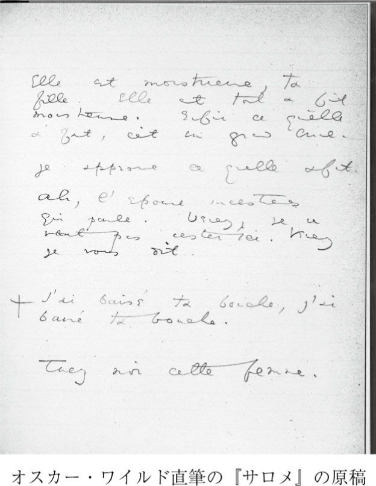
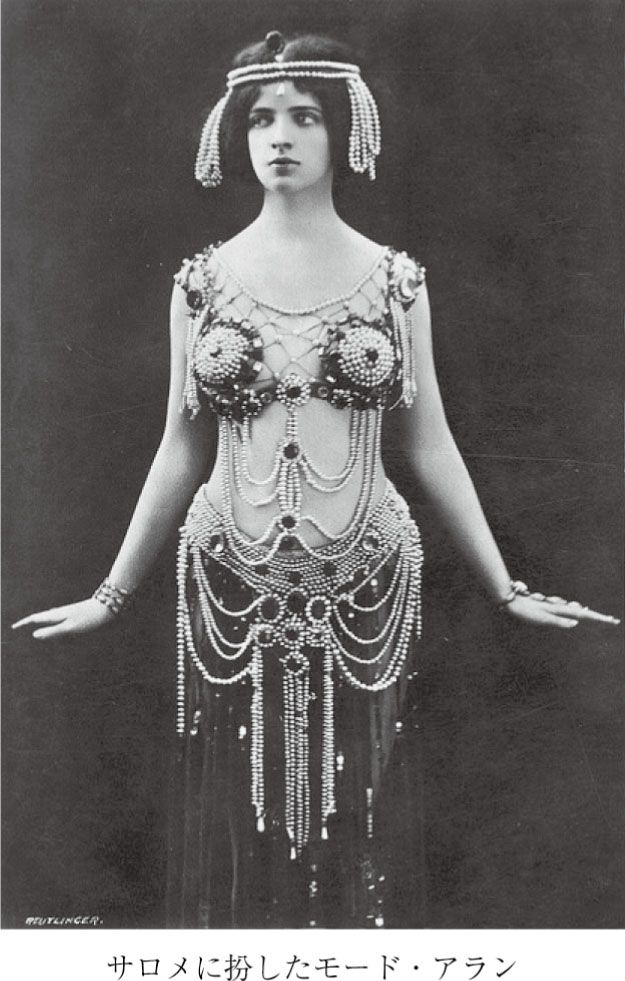
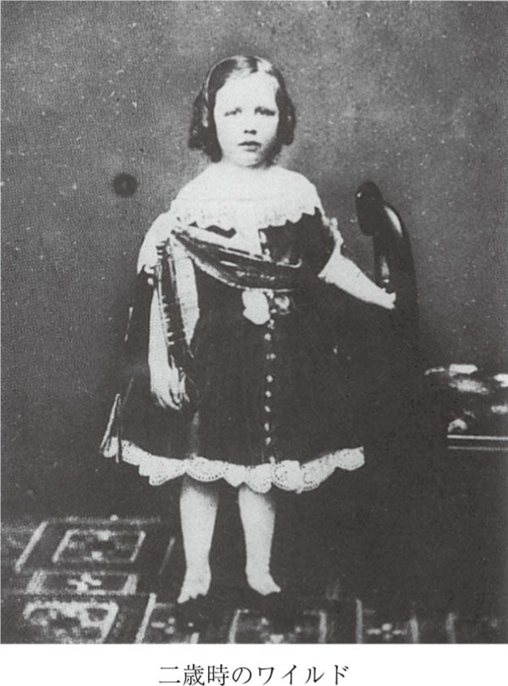
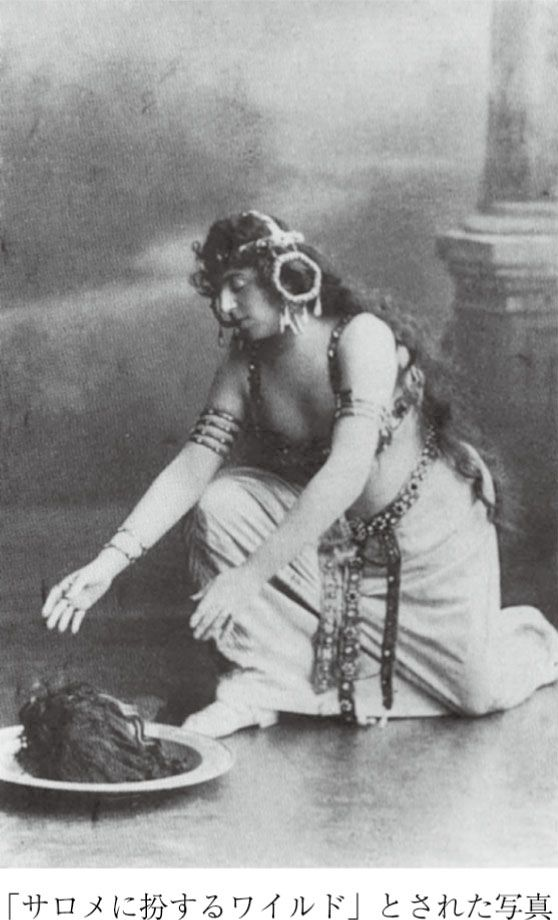

| サロメ | |
| ワイルド | |
| (2012) | |
サロメ
ワイルド
平野啓一郎訳
Title: SALOMÉ
1893
Author: Oscar Wilde
◎ご注意
本作品の全部または一部を無断で複製、転載、改竄、公衆送信すること、および有償無償にかかわらず、本データを第三者に譲渡することを禁じます。
個人利用の目的以外での複製等の違法行為、もしくは第三者へ譲渡をしますと著作権法、その他関連法によって処罰されます。
我が友、ピエール・ルイス（＊１）に
舞台（＊7）
（ヘロデの宮殿の宴会場を見下ろす大きなテラス（＊8）。兵たちは、その手すりに肘を掛けている。右手には巨大な階段。左奥には古い水溜（＊9）があり、緑に変色した青銅の壁が囲っている。月明かり。）
若いシリア人 今夜のサロメ姫は、また、なんという美しさだろう！
ヘロディアの近習 ねえ、月（＊10）を見て。月がなんだか、すごく異様なんだよ。まるで墓から出てきた女みたいで。死んだ女みたい。死者たちを探しているかのような。
若いシリア人 確かに異様だなァ。黄色いヴェールを纏った、銀の足の小さなお姫さま、そんな風情だね。白い小鳩みたいな足のお姫さま。......まるで踊ってるみたいだ。
ヘロディアの近習 いや、死んだ女みたいな感じがするよ。ゆっくり、ゆっくり動いてる。（宴会場で大きな騒ぎ）
第一の兵 うるっせえなァ！ どこの野獣が吠え立ててんだ？
第二の兵 ユダヤ人たちだろ。いつもの調子だよ。あいつらはまた、自分たちの宗教について、ああだ、こうだと言い争ってんだよ。
第一の兵 なんで自分たちの宗教で言い争うんだ？
第二の兵 さあね。とにかく、年がら年中やってるよ。ファリサイ派（＊11）が、天使は存在すると主張するだろう？ するとサドカイ派（＊12）が、いいや、天使は存在しない、と言う。......ま、そんなような話だよ。
第一の兵 そんなこと議論してるのか？ アホだな。
若いシリア人 なんて美しいんだ、今夜のサロメ姫は！
ヘロディアの近習 ずっと見てる。見すぎだよ。そんなふうに人を見るべきじゃない。......災いを招く羽目になるよ。
若いシリア人 とにかく美しい、今夜の姫は。
第一の兵 それにしても、王様は表情が冴えんな。
第二の兵 ああ、冴えない。
第一の兵 何か見てる。
第二の兵 誰か、を見てるんじゃないか。
第一の兵 誰を？
第二の兵 さあ。
若いシリア人 姫はしかし、なんて蒼い顔をしてるんだろう！ あんなに蒼褪めているところを初めて見た。まるで、銀の鏡（＊13）に映った、白い薔薇のようだ。
ヘロディアの近習 見るな。君はあの人を見すぎだよ！
第一の兵 ヘロディア様が、王様に酒を注いだ。
カッパドキア人 あれが、王妃のヘロディア？ あの真珠だらけの黒い冠（＊14）を被って、髪に青い粉（＊15）を振った、あれが？
第一の兵 そう、あれがヘロディア様。王様のお妃様だ。
第二の兵 王様は、酒に目のないお方でね。ちゃんと三種類揃えてある。サモトラケ（＊16）島産のやつなんて、皇帝（＊17）のマントみたいな緋色だよ。
カッパドキア人 皇帝なんか見たことないからなァ。
第二の兵 もう一つのキプロス（＊18）産のは、金みたいな黄色。
カッパドキア人 金は大好きだ。
第二の兵 三つ目はシシリア（＊19）産。血みたいに赤い酒だよ。
ヌビア人 私の国の神々は、血に目がなくてね。年に二回ずつ、青年と処女を生け贄に捧げてますよ。青年五十人に処女百人。それでも、どうもまだご不満のようですな。相も変わらず、私たちに過酷ですから。
カッパドキア人 私の国なんか、今はもう、神なんて一人もいませんよ。ローマ人たちがみんな追っ払ってしまった。山々に逃れたなんて言うのもいたが、いませんね。私は三日三晩、山に入って、あちこち神を探して回ったんですから。影も形もなかった。終いには、名前を呼んでみましたけど、やっぱり現れませんでした。死んだんでしょう、みんな。
第一の兵 ユダヤ人たちは、見えもしないたった一人の神を信じてるよ。
カッパドキア人 理解できないね。
第一の兵 結局、連中は、目に見えないものしか信じないんだよ。
カッパドキア人 そりゃ、完全にイカれてる。
ヨカナーンの声 私の後には、私よりも更に強力な方が来られるであろう。私など、その方の履物の紐を解くだに値しない。（＊20）その方が来られれば、砂漠の大地は歓喜し（＊21）、百合（＊22）の如く咲き誇るであろう。盲人の目には光が灯り、聾者の耳は開かれる。（＊23）......その生まれたての子供は、龍の群の棲処に手を翳し、鬣を摑んでライオンたちを付き従わせるであろう。（＊24）
第二の兵 あいつを黙らせろ。いつもいつも、くだらんことを。
第一の兵 馬鹿、あれは聖人だぞ。それに、とても優しい。毎日、俺が食事を持って行くと、その度に必ず、礼を言ってくれるんだよ。
カッパドキア人 誰なんだ、あれは？
第一の兵 預言者だ。
カッパドキア人 名前は？
第一の兵 ヨカナーン。
カッパドキア人 どっから来た？
第一の兵 砂漠だよ。イナゴと野蜜を食べて生きてたんだ。駱駝の毛衣を着て、腰に革の帯を締めて。そらァ、ちょっとすごい風貌だったよ。（＊25）大勢の群衆があの人に付き従ってた。弟子だっていたよ。
カッパドキア人 なんと言ってるんだ？
第一の兵 俺たちにはさっぱりわからないんだ。時々、何か恐ろしいようなことを言うんだが、ちんぷんかんぷんだね。
カッパドキア人 会えるかな？
第一の兵 いや。王様が許可されない。
若いシリア人 姫が扇で顔を隠してしまった！ あの白い小さな手の、巣箱に向かって羽ばたく鳩のような動き。むしろ白い蝶かな。うん、そうだ、あの手は白い蝶だ。
ヘロディアの近習 だから、それが君に何の関係があるって言うんだい？ どうして、あの人を見る？ 見てはいけない。......災いを招きかねない。
カッパドキア人（大きな水溜を指差して） しかし、変わった牢獄だな！
第二の兵 昔は水溜だったんだよ。
カッパドキア人 昔は水溜って！ そんなのに入れられてたら、命が保たんだろう。
第二の兵 いや、そうでもない。王様の兄上で、ヘロディア王妃が最初に嫁いだ王は、あの中に十二年間も閉じ込められてた。それでも死ななかったよ。最後は仕方なく首を絞めて殺したが。（＊26）
カッパドキア人 首を絞めた？ 誰がそんなことを？
第二の兵（首斬り役人の黒人の大男を指差して） あいつだよ、ナーマンだ。
カッパドキア人 そんなこと、恐がらなかったのか？
第二の兵 いや。ヘロデ様があいつに指輪をお授けになったから。
カッパドキア人 指輪ってどんな？
第二の兵 死の指輪だよ。だから、あいつは恐れなかった。
カッパドキア人 けど、王たる人間を絞め殺すんだぞ。恐いだろう。
第二の兵 どうして？ 王ったって、何本も首があるわけじゃない、一本しかないんだから。他の人間と同じだよ。
カッパドキア人 身の毛がよだつな、考えるだけでも。
若いシリア人 あ、姫が立ち上がる！ テーブルを離れた！ うんざりしきった様子で。あ！ こっちに来る。いや間違いない、俺たちの方に来る。なんて蒼い顔をしてるんだ。こんなに蒼褪めた顔、これまで一度も見たことがない......。
ヘロディアの近習 あの人を見るな。頼むから、もう見るんじゃない。
若いシリア人 姫はまるで、迷子の鳩みたいだ。......風に靡く水仙のようにも見える。......まるで銀の花だ。
（サロメが入ってくる）
サロメ これ以上、あんなところにはいられないわ。もうたくさん。どうして王様は、わたしをじっと見続けるの、あのモグラみたいな目で、まぶたをピクピク震わせて？......仮にもお母様の夫たる人が、あんなふうにわたしを見つめるなんて、おかしいわよ。何のつもりかしら。......本当はそんなの、わかってるけど。
若いシリア人 宴の席をあとにされたんですね、王女さま？
サロメ ここの空気は、なんて新鮮なの！ ここならやっと息ができる！ あっちでは、エルサレムのユダヤ人たちが、馬鹿みたいな儀式のことで、罵り合ってるんだから。それに、飲んだくれて、床の敷石にワインを零しまくってる野蛮人たち、目に隈取りをして、ほっぺたに化粧を塗りたくって、髪をクルクル巻きにしたスミルナ（＊27）のギリシア人たち。翡翠のつけ爪をして、褐色のマントを羽織った、無口で、薄気味悪いエジプト人たち。それに、粗暴で、愚鈍で、下品な言葉遣いのローマ人たち。ああもう！ ローマ人って、本っ当に大っ嫌い！ 低俗なクセして、エラそうに支配者ぶって。
若いシリア人 お座りになりたくはございませんか、王女さま？
ヘロディアの近習 どうして話しかけるんだ？ なぜ、あの人を見る？......ああ！ 今にも災いが迫ろうとしている。
サロメ 月を見るのって、なんて素敵なの！ まるで小さな銀貨みたい。小さな銀のお花って言うべきかしら。冷たくて、穢れのない月。......きっと、あの子は処女ね。処女の美しさよ。......そう、処女。決して穢れを知らない。他の女神たちみたいに、男のものになったことなんて、一度もないのよ。（＊28）
ヨカナーンの声 主は、来られた！ 人の子（＊29）は、来られた。ケンタウロスは川に身を隠し、セイレンは川を去って、森の木の葉の下に身を横たえた。（＊30）
サロメ 誰、叫んでるのは？
第二の兵 預言者です、サロメ様。
サロメ えっ！ 預言者。王様が恐がってる、あの？
第二の兵 それについては、我々は何も存じません、サロメ様。あれは、預言者のヨカナーンです。
若いシリア人 お望みでしたら、駕籠（＊31）を準備させましょうか、王女さま？ お庭の方が、大変美しくなっております。
サロメ あの男、お母様のことで、何かとんでもないことを口走ってるって？
第二の兵 我々には、あれの言うことは、まったく理解できません。
サロメ ふん、言ってるのよ、お母様について、とんでもないことを。（＊32）
奴隷 王女様、王様が宴にお戻りになるようにと仰ってます。
サロメ わたし、あそこには戻らないから。
若いシリア人 失礼ながら、王女さま、お戻りになりませんと、ご面倒が起きはしまいかと。
サロメ おじいちゃんなの、その預言者って？
若いシリア人 王女さま、お戻りになった方がよろしいかと。私にどうか、お見送りをさせてください。
サロメ その預言者、......おじいちゃん？
第一の兵 いいえ、サロメ様、それがまだ、まったくの若者で。（＊33）
第二の兵 知らないんです、みんな。エリア（＊34）だと噂する者はありますが。
サロメ 誰なの、エリアって？
第二の兵 この国の遥か昔の預言者です、サロメ様。
奴隷 王様に、王女様のご返事をどのようにお伝えすべきでしょうか？
ヨカナーンの声 パレスチナの大地よ、汝を打擲せし者の鞭が折れようとも、ゆめゆめ歓ぶなかれ。やがて蛇の種族より怪蛇が出現し、その生みしものが鳥たちを貪り喰らうであろうから。（＊35）
サロメ なんて不思議な声なの！ わたし、彼と話がしてみたい。
第一の兵 畏れながら、それは無理でございます、サロメ様。王様は、誰もあの者とは口を利かせないご意向です。大司祭にさえ、禁じていらっしゃいます。
サロメ わたしは彼と話がしたいの。
第一の兵 無理でございます、サロメ様。
サロメ わたしはしたいの。
若いシリア人 とにかく、王女さま、宴の席にお戻りになった方がよろしいかと。
サロメ 預言者を連れてきて。（＊36）
第一の兵 そのような大それたことはいたしかねます、サロメ様。
サロメ（水溜に近づいて、覗き見る） 中は完全に真っ暗！ 恐いわ、こんな真っ暗な穴の中にいるなんて！ まるで墓穴ね。......（兵たちに）聞こえなかったの？ 預言者をここから出して。わたしは彼に会いたいの。
第二の兵 お願いですから、サロメ様、我々にそんなことをお命じにならないでください。
サロメ お前たち、わたしを待たせる気？
第一の兵 サロメ様、我々の命は、あなた様のものです。しかし、我々はそのご命令にはお応えできません。......いずれにせよ、お話しになる相手を間違ってらっしゃいます。
サロメ（若いシリア人を見て） あら！
ヘロディアの近習 ああ！ 何が始まるんだろう？ きっと災いが起きようとしてるんだ。
サロメ（若いシリア人に近づいて） あなたは、わたしのためなら、やってくれるでしょう、ナラボート（＊37）？ わたしのために、あなたはやってくれる、そうね？ わたしはいつでも、あなたに優しくしてあげてたもの。やってくれないの、わたしのために？ ただ見てみたいだけなの、あの不思議な預言者さんを。みんな彼の話ばかりしてるのよ。王様が彼のことを話すの、何度聞いたことか。王様はね、彼を恐れてるんだと思うの。きっとそう、王様は恐れてる。......あなたもそうなの、ナラボート、あなたも彼が恐いの？
若いシリア人 私は彼など恐くはありません、王女さま。私は誰も恐れません。しかし、王様があの井戸の蓋を開けることを厳しく禁じてらっしゃいます。
サロメ でもそれを、あなたはわたしのためにやってくれるのね、ナラボート、そしたらわたし、明日、神像売りたちがいる城門の下を駕籠に乗って通る時に、あなたに小さなお花を投げてあげる、小さな緑色のお花（＊38）よ。
若いシリア人 王女さま、私にはできません、できません。
サロメ（微笑んで） あなたは、きっとわたしのためにやってくれるわ、ナラボート。自分でもよくわかってるくせに、わたしのためにやってくれるってことを。そしたらわたし、明日、駕籠に乗って、神像を買いに来た人たちが群がるあの橋の上を通る時、モスリンのヴェール越しに、あなたを見てあげる、ナラボート、わたし、あなたに微笑みかけるかもしれない。わたしを見て、ナラボート。見て、わたしを。アハハ！ あなた、わたしのお願いを聞いてくれるってこと、自分でもちゃんとわかってるのね。あなたはちゃんとわかってる、ね？......わたし、よく知ってるのよ。
若いシリア人（第三の兵に合図をして） 預言者を連れて来い。......サロメ姫がお会いになりたがってる。
サロメ あら！
ヘロディアの近習 ああ！ なんて異様な月なんだ！ 自らを包む白布を探っている、死んだ女の手みたいだ。
若いシリア人 とても不思議な月だ。琥珀色をした瞳の小さなお姫さまみたいだ。モスリンの雲を透かして、月がまるで、小さなお姫さまのように微笑みかけてくる。
（預言者が水溜から出てくる。サロメは彼を目にして、後退る。）
ヨカナーン この世の罪の杯を、早溢れさせんとしているかの人は、どこにある？（＊39） いつの日か、白銀の衣を纏い、民の前にて、その死を曝すこととなるかの人は、どこにある？ 彼に伝えよ、来い、砂漠で、王の宮殿で、叫ぶ者の声を聴くためにと。（＊40）
サロメ 誰のことを言ってるの？
若いシリア人 皆目見当がつきません、王女さま。
ヨカナーン 城壁に描かれた男どもの絵、あの色鮮やかなるカルデア（＊41）人たちの姿に見蕩れ、その眼の欲望（＊42）に我をも忘れて、カルデアへと使者を送った女は、どこにある？
サロメ あれは、お母様のことよ。
若いシリア人 滅相もございません、王女さま。
サロメ いいの、あれはお母様のことなんだから。
ヨカナーン 腰に負い革（＊43）を巻き、頭には色とりどりの冠を頂いたアッシリア（＊44）の隊長たちに身を委ねた女は、どこにある？ 薄紫の亜麻の衣を纏い（＊45）、金の楯を持ち、銀の兜を被った逞しいエジプト（＊46）の若者たちに身を委ねた女は、どこにある？ その女に伝えよ、その淫らな臥所より、近親相姦の寝床（＊47）より身を起こし、主のために道を開く者（＊48）の言葉に耳を傾け、悔い改めよと。たとえ、女が悔い改めず、おぞましき罪に留まり続けるとしても、来いと伝えるのだ、主の裁きは、その御手の内にある。（＊49）
サロメ やっぱり恐い、恐いわ、あの男。
若いシリア人 ここにいらしてはなりません、王女さま、どうか、お願いします。
サロメ 特に恐いのは、あの目。テュロス（＊50）のタペストリーを、松明の火で焦がしてできた黒い穴みたいな目。龍の棲む暗い洞窟、龍たちが隠れ家にしている、エジプトの暗い洞窟みたいなあの目。神秘的な月の光に妖しく燦めく闇の中の湖みたいなあの目。......あの男、まだ何か言うかしら？
若いシリア人 ここにいらしてはなりません、王女さま！ どうかお聞き入れください、ここにいらしてはなりません。
サロメ それに、すごく痩せ細って！ まるでか細い象牙の彫像みたいに。ううん、銀の彫像かしら。あの男はきっと純潔よ、月と同じくらいに純潔。まるで、一条の銀色の光みたい。あの男の肉は、象牙みたいにすごく冷たいはず。......わたし、近くで見てみたい。
若いシリア人 だ、だめです、王女さま！
サロメ あの男を、近くで見ないと。
若いシリア人 王女さま！ 王女さま！
ヨカナーン 私を見ているあの女は何者だ？ 私は、あの女に見られることなど望んではいない。なぜ彼女は、あの金色に塗られた目蓋の下から、黄金の瞳で私を見つめるのだろう？ 誰だ、あれは？ いや、知りたくもない。女に立ち去るように告げよ。私が語りかけようとしている相手は、あの女ではない。
サロメ サロメっていうの。ヘロディアの娘で、ユダヤの王女。
ヨカナーン 下がれ！ バビロンの娘よ！（＊51） 主に選ばれし者に近づくな。汝が母は、数々の悪業の酒を以てこの大地を満たした。その罪を訴える声は、神の御耳にも届いている。
サロメ 続けて、ヨカナーン。わたし、お前の声に酔ってる。
若いシリア人 王女さま！ 王女さま！ 王女さま！
サロメ さ、もっと話して。もっと話すのよ、ヨカナーン、そして、わたしが何をすべきかを教えて。
ヨカナーン 近づくな、ソドム（＊52）の娘よ、汝はその顔をヴェールで覆い、頭に灰を振りかけて（＊53）、人の子を探しに砂漠へと行くのだ。
サロメ 誰なの、人の子って？ その人って、お前と同じくらい美しいの？
ヨカナーン 下がれ！ 下がるのだ！ 宮殿に、死の天使（＊54）の翼の羽ばたく音が鳴り響いている。
若いシリア人 王女さま、お願いですからお戻りになってください！
ヨカナーン 主なる神の天使、お前はその剣を以て、ここで何をしようとしているのか？（＊55） かくも穢れた宮殿で、お前は誰を探しているのか？......白銀の衣を纏う、あの方が亡くなる日は、まだ来ておらぬというのに。（＊56）
サロメ ヨカナーン！
ヨカナーン 誰がしゃべっている？
サロメ ヨカナーン！ お前の体が愛おしい。（＊57）お前の体は、一度も鎌の刃の振るわれたことのない、草原に咲く百合の花のように白い。お前の体は、山々に降り積もった雪、そう、ユダヤの山々に降り積もって、谷へと落ちてゆく雪のように白い。アラビアの女王の庭に咲く薔薇だって、お前の体ほどには白くない。アラビアの女王の庭に咲くその薔薇だけじゃなくて、木々の葉をざわめかせる曙の日脚も、海の乳房に重ねられる月の乳房も、......何もかも、この世の中で、お前の体ほど白いものなんてない。──お前の体に触らせて！
ヨカナーン 下がれ、バビロンの娘！ この世に悪がもたらされたのは、女がため。語りかけるな。汝の言葉など聴きたくない。私はただ、主なる神の言葉を聴くのみ。
サロメ お前の体なんて、醜悪よ。肌なんてぼろぼろじゃない。蝮が這ってる漆喰の壁みたい、ううん、サソリが巣くってる壁かしら。白く塗ってあるけど、中には気持ち悪いものが山ほど詰まってるお墓みたい。（＊58）ゾッとする。ゾッとするのよ、お前の体には！......わたしが愛おしいのはね、ヨカナーン、そうじゃなくて、お前のその髪の毛なの。まるでぶどうの房みたい。エドム（＊59）人の国のエドムの木々に生った黒々としたぶどうの房。お前の髪の毛は、まるでレバノンの杉の木みたい。お日様の光を避けようとするライオンや、盗賊を匿う、大きなレバノンの杉（＊60）。闇に包まれた長い夜、月のない、星々が不安に戦く夜だって、お前の髪ほど黒くはない。森に立ち籠める静寂だって、そんなに黒くはないわ。お前の髪の毛のように黒いものは、この世にまたとない。......わたしに、その髪に触らせて。
ヨカナーン 下がれ、ソドムの娘よ！ この私に触れるな。（＊61）主なる神の宮殿を穢してはならぬ。
サロメ お前の髪なんて、虫酸が走る。泥だらけで、埃まみれで。棘の冠（＊62）でも頭に載せられてるみたいじゃない。首の回で黒い蛇たちが蜷局を巻いて、絡み合ってるみたいよ。（＊63）そんなお前の髪を、どうしてわたしが好きになるの？......わたしが愛おしいのはね、お前のその口唇なの、ヨカナーン。まるで、象牙の塔に刻まれた深紅の帯模様。（＊64）象牙のナイフで切られた石榴の実みたい。（＊65）テュロスの庭に咲く石榴の花は、薔薇の花よりも真っ赤なの、けどそれだって、お前の口唇ほどには赤くない。王様の到着を告げたり、敵を威嚇したりする、あの血しぶきを上げるようなラッパの音だって、そんなに赤くはない。ぶどうを踏み搾る男たちの足よりも、お前の口唇はもっと赤い。神殿に棲み着いて、司祭たちに養われている鳩の足よりも赤い。森の中でライオンを殺して、金色の虎たちに目見えて帰ってきた男の足よりも、もっと赤いのよ。お前の口唇は、漁師たちが、黄昏時の海で見つけて、王様のために取っておいた珊瑚の枝よりも赤い......！ その口唇、モアブ（＊66）人たちが、モアブの鉱山で見つけて、王様に取り上げられてしまった朱砂みたい。ペルシアの王様が持ってる、珊瑚細工で飾られた朱塗りの弓みたい。お前の口唇よりも赤いものなんて、この世にはないわ。......キスさせて、その口唇に。
ヨカナーン ならぬ！ バビロンの娘よ！ ソドムの娘！ 決してならぬ！
サロメ わたし、キスする、ヨカナーン。お前のその口唇にキスする。
若いシリア人 姫、姫、君は、ミルラ（＊67）の木立のような人、鳩の中の鳩（＊68）、その男を見てはいけない、そいつを見るな！ そいつにそんなことを言うんじゃない！ 俺は、こんなことにはもう耐えられない。......姫、姫、そんなことを言わないでくれ。
サロメ お前の口唇にキスするの、ヨカナーン。
若いシリア人 ああ！
（彼は自らを刺し、サロメとヨカナーンとの間に倒れ込む。）
ヘロディアの近習 若いシリア人が自殺した！（＊69） 若い隊長が自殺を！ 死んでしまった、僕の親友だったのに！ 僕は彼に、ちっちゃな香箱をあげた、銀の耳飾りだってあげた、その彼が、今はもう、死んでしまったなんて！ ああ！ 彼には災いが迫っていたのがわからなかったのか？......僕にはわかってた、そして、それは本当に来たんだ。僕には、月が死者を探していたのがよくわかっていた、だけど、その探していたのが、まさか君だったなんて。ああ！ どうして僕は、君を月から隠してしまわなかったんだろう？ 君を洞穴の中に匿っていたら、月だって見つけられなかっただろうに。
第一の兵 サロメ様、若い隊長がたった今、自殺しました。
サロメ キスさせて、お前の口唇に、ヨカナーン。
ヨカナーン 恐くはないのか、ヘロディアの娘よ？ 私はこの宮殿で、死の天使の翼の羽ばたく音を聞いた、そう汝らに告げなかったか？ 天使が来たのがわからないのか？
サロメ キスさせて、その口唇に。
ヨカナーン 不貞の娘、汝を救うことが出来るのはただ一人。私が汝に話したお方だ。探しに行くのだ、そのお方を。彼はガリラヤの海に舟を浮かべ、弟子たちに語られている。（＊70）浜辺で跪いて、その御名を呼ぶのだ。汝の方に彼が近づかれたら、そう、彼は呼びかける者すべての許にいらっしゃるのだ、その足許に伏して、汝の罪の赦しを乞うのだ。
サロメ キスさせて、その口唇に。
ヨカナーン 呪われるがいい、近親相姦の母より生まれし娘よ、呪われるがいい。
サロメ キスする、お前のその口唇に、ヨカナーン。
ヨカナーン 私は汝を見たくない。汝を見ない。汝は呪われている、サロメよ、汝は呪われている。
（彼は、水溜の中へと降りていく。）
サロメ わたしはお前の口唇にキスするのよ、ヨカナーン、キスすることになるわ。
第一の兵 死体をどこかに片づけんとな。王様は死体を見るのがお嫌いだ、自分で殺した死体は別だが。
ヘロディアの近習 君は僕の兄弟だった、兄弟以上に親密だったのに。僕は君に香料を詰めたちっちゃな箱をあげた、それに、君がいつもつけてた瑪瑙の指輪だって。夜になると、僕たちは川縁を散歩して、君は、アーモンド（＊71）の木の間で、君の生まれ故郷の話をしてくれた。君はいつも、とても低い声でしゃべってた。君のその声は、笛吹きの笛の音みたいだった。君はよく、川縁から水面に映った自分の顔を見つめてた。そのことで、僕は君を責めたんだよ。
第二の兵 そうだな。死体を隠さないと。王様の目に触れるとまずい。
第一の兵 王様はここには来ないだろうがな。テラスには近寄ろうともしない。預言者を異常に恐れてるから。（＊72）
（ヘロデ、ヘロディア、すべての家来たちが入ってくる。）
ヘロデ サロメはどこだ？ 姫はどこにおる？ なぜ、わしが命じた通り、宴に戻って来ぬのだ？ おお、そこにおったか！
ヘロディア あの子をご覧にならないで。あなた、いつもご覧になってますわよ！
ヘロデ 今宵はまた、奇妙な月だな。奇妙だと思わぬか？ 興奮しきった女のようではないか。所構わず、夜の相手を探し求めている色情狂だな、まるで。あの月は裸だ。素っ裸だぞ。雲が服を着せようと、追いかけておる。それでも月は嫌がっているのだ。空で素っ裸とはな。酔っぱらい女みたいに、フラフラしながら雲間をすり抜けてゆく。......わしにはすっかりお見通しだ、あれは、男を探し求めているのだ。......そう思わぬか、酔っぱらい女がよろめいているような月であろう？ 色情狂みたいな月だ、違うか？
ヘロディア 痴れ言を。月はただ、月のように見える。それだけです。戻りましょう。......ここにいても、なんにもすることなどありません。
ヘロデ わしは残るぞ！ マナセ、敷物をそこに。松明に火を灯せ。象牙のテーブルと碧玉のテーブルとを持ってこい。ここの空気はいい。わしは客人たちともっと飲むぞ。皇帝の使者たちだ、最上のもてなしをせねばな。
ヘロディア あなたがここに留まられるのは、客人方のためなどではありませんわ。
ヘロデ 何を言っておる、いい空気ではないか。こっちへ来い、ヘロディア、客人たちが我々を待っているぞ。あっ！ 滑った！ 滑ったぞ、血ではないか！ 悪い前兆だ。とても悪い前兆だぞ、これは。なぜここに血がある？......ん、その死体は？ なんでこんなところに死体がある？ お前たちは、わしを、宴を催す度に、客人に血を見せねば気が済まぬエジプトの王とでも勘違いしておるのか？ とにかく、誰なんだ、これは？ わしはこんなもの見たくないぞ。
第一の兵 我々の隊長です、王様。王様が、たった三日前に隊長に任ぜられた若いシリア人です。
ヘロデ わしはこやつを殺せなどと命じてはおらぬ。
第二の兵 自害したのです、王様。
ヘロデ 何故に？ せっかく隊長にしてやったのに！
第二の兵 我々は何も存じません、王様。しかしとにかく、彼は自ら命を絶ったのです。
ヘロデ 奇妙な話だ。自殺なんぞするのは、ローマの哲学者くらいなものだと思っておった。違うか、ティゲリヌス、ローマでは哲学者たちが自殺すると言うであろう？
ティゲリヌス そういう者たちもおります、王様。ストア派（＊73）の哲学者たちです。酷い輩でございます。とにかく、大変な愚か者どもです。私の目には、とんでもない愚か者にしか見えません。
ヘロデ 同感だ。自ら命を絶つとは、愚かなことだ。
ティゲリヌス ローマでは、そういう手合いは、物笑いの種です。皇帝は、彼らを風刺する詩をお作りになりました。みんな暗唱しております。
ヘロデ おお！ そいつらを風刺する詩だと？ まったく、皇帝というのは、非の打ち所がないな。何でも出来てしまう。......それにしても、若いシリア人が自殺したのは解せぬ。残念なことだ。なんとも、つくづく残念だ。こやつは美しかった。いや、美しすぎた。とても物憂げな目をしておった。わしはこやつが、その物憂げな目で、サロメをじっと見つめておったのを覚えておる。結局、こやつはちと、見すぎたのであろうな。
ヘロディア もう一人、サロメをご覧になりすぎの方がいらっしゃいますわね。
ヘロデ こやつの父は王であった。わしに自らの王国から追い払われてしまったが。王妃だった母は、そなたが奴隷にしてしまったな、ヘロディア。そのために、こやつはここで客人の身分となった。だからこそ、わしはこやつを隊長にしてやったのだ。死んでしまうとは、残念なことだ。......ともかく、なぜお前たちはここに死体を置いておる？ 余所へ持って行け。わしはそんなものは見たくない。......運び出せ。......（死体が運ばれる）寒いな、ここは。風がある。風が吹いているであろう？
ヘロディア いいえ。風などありません。
ヘロデ いや、風があるぞ。......それに、宙に翼の羽ばたくような音が聞こえる、途轍もなく大きな翼の羽ばたく音が。そなたには聞こえぬのか？
ヘロディア 何も聞こえません。
ヘロデ ん、わしにももう聞こえなくなった。しかし、聞いたぞ。あれは、風だったはずだ。だが、吹き去ってしまった。いやいや、まだ聞こえる。そなたには、あれが聞こえぬのか？ まさしく、翼の羽ばたく音だ。
ヘロディア 何もないと申したではありませんか。あなたはご病気なのです。戻りましょう。
ヘロデ わしは病んでなどおらぬ。病んでおるのは、そなたの娘であろう。酷く悪そうではないか、そなたの娘は。あんなに蒼褪めているのを見たことがない。
ヘロディア あの子をご覧にならないようにと申したはずです。
ヘロデ 酒を注げ。（酒が運ばれてくる）サロメ、こっちへ来て、わしと一緒に少し飲まぬか。ここにほら、上等の酒がある。皇帝が直々にわしに贈ったものだ。その赤い、小さな口唇をほんの少し潤すだけでいい、あとはこのわしが飲み干してやろう。
サロメ わたし、喉渇いてません、王様。
ヘロデ 聴いたか、そなたの娘の言い様を。
ヘロディア 無理もないことです。どうしていつもこの子をお見つめになるのです？
ヘロデ 果物を持ってこい。（果物が運ばれてくる）サロメ、わしと果物を食べようではないか。わしはお前のかわいい歯が、果物を嚙むところを見るのが大好きだ。ほんの一切れでいい、嚙んでごらん、残りはわしが食べてやるから。
サロメ わたし、お腹も空いてませんの、王様。
ヘロデ（ヘロディアに） よく躾けられておるわ、そなたの娘は。
ヘロディア それは、娘もわたくしも、王家の血筋を受け継いでおりますから。あなたはと言うと、お祖父さまは駱駝の番人だったとか！ おまけに、泥棒だったんでしょう！（＊74）
ヘロデ でたらめを！
ヘロディア よくご存じのくせに、事実だと。
ヘロデ サロメ、わしの近くに座れ。母ではなく、お前に王妃の地位を味わわせてやろう。
サロメ わたし、疲れてない。
ヘロディア この子があなたのことをどう思っているか、よくおわかりになったでしょう。
ヘロデ 持ってこい......ん、何が欲しいんだった？ わからん。ああ！ ああ！ 思い出した......。
ヨカナーンの声 時は来た！ 主なる神は、私の預言が、ついに現実となることをお告げになった。私が語っていたのは、この日のことだったのだ。
ヘロディア あの男を黙らせて。あの声には我慢ならない。あの男は、いつもわたくしに罵詈雑言を浴びせかける。
ヘロデ あれは、わしらに向かって言っておるのではない。第一、あれは偉大な預言者だ。
ヘロディア わたくしは預言者など信じません。高が人間に、どうしてこれから何が起こるかが言い当てられます？ 誰もそんなこと、わかるものですか。おまけに、あれはいつも、わたくしを侮辱する。でも、あなたは、あの男を恐れてらっしゃるようで。......ふん、わたくしにはよくわかります、あなたが、あの男を恐れてらっしゃることが。
ヘロデ わしは、あれのことなど恐れてはおらぬ。わしは誰も恐れぬ。
ヘロディア いいえ、あなたは恐れておいでです。恐れてないとおっしゃるなら、どうしてこの半年の間、あれの解放を嘆願し続けてきたユダヤ人たちに、引き渡しておあげにならなかったのです？
第一のユダヤ人 左様にございます、王様、あの方は、私どもにお任せくださるに越したことはございません。
ヘロデ その話はもうたくさんだ。わしはもう、お前たちに返事をしたはずだぞ。わしはあれをお前たちに渡したくはない。あれは、聖人だ。神を見た男だぞ。（＊75）
第一のユダヤ人 そのことにございますが、あり得ないことと存じます。預言者エリア以後、誰一人として神を見た者などおりません。神を見たのはエリアで最後でございます。今日では、神はその姿をお見せにはなりません。お隠れになっています。その結果、国には大きな災いが起きております。
第二のユダヤ人 結局のところ、エリアが本当に神を見たのかどうかなんてことは、誰にもわからないのです。彼が見たのは、むしろ神の幻影でしょう。
第三のユダヤ人 神はお隠れになってなどおりませぬぞ。神はいつでもそのお姿を現していらっしゃる、すべてのものの中に。神は善なるものと同様に、悪なるものの中にさえ存在するのです。
第四のユダヤ人 そんなことは口にすべきでない。それは、非常に危険な考えです。ギリシア哲学を教えるアレクサンドリア学派（＊76）に由来する考えです。ギリシア人というのは、異教徒ですよ。あの者たちは割礼（＊77）さえしないのですから。
第五のユダヤ人 神の御業がいかなるものかなど、我々に知ることは出来ないのだ、その思し召しは神秘なのだから。ひょっとすると、我々が悪と呼んでいるところのものが、善なのかもしれないし、善と呼んでいるところのものが、実は悪なのかもしれない。（＊78）我々には、何も知ることが出来ないのだ。必要なのは、一切に従うこと。神は非常に強大だ。神は、弱き者も強き者も均並みに破壊する。人間のことなど、何とも思ってはいないのだ。
第一のユダヤ人 それは正しいですな。神は恐ろしい。神は弱き者も強き者も均並みに、挽き臼の中の小麦の如く磨り潰してしまう。とにかく、この男は決して神など見ておりません。エリア以後、誰も神を見てはいないのです。
ヘロディア この人たちを黙らせて。退屈で仕方がないわ。
ヘロデ だが、わしはヨカナーンこそは、お前たちの預言者エリアだと聞いておるぞ。
第一のユダヤ人 あり得ないことでございます。預言者エリアが生きた時代から、三百年以上も経っております。
ヘロデ あれを預言者エリアと言う者がおる。
ナザレ人 もちろん、私はあの方こそが預言者エリアだと確信しております。
第一のユダヤ人 違いますな、あれは預言者エリアなどではない。
ヨカナーンの声 その日は来た、主の日が。私には、山々に響く救世主（＊79）となられる方の跫音が聞こえる。（＊80）
ヘロデ 何を言おうとしているのだ？ 救世主？
ティゲリヌス それは、皇帝が用いる称号にございます。
ヘロデ しかし、皇帝がユダヤに来るはずがない。わしは昨日、ローマから便りを受け取ったところだ。そんなことは一言も書かれてなかったぞ。そなたは、ティゲリヌスよ、冬の間、ローマにおったであろう、それについて何か耳にしてはおらぬのか？
ティゲリヌス はい、王様、それについては、何も聞き及んではおりませぬ。私はただ、その救世主なる称号についてご説明申し上げただけです。それは、皇帝の称号です。
ヘロデ 皇帝が来られるはずがない。あれは痛風持ちだ。あれの足は象のようだと言うではないか。それに、国の事情もある。ローマを去る者は、ローマを失う。皇帝は来はしまい。確かに、皇帝はこの世の主だ。来たいと思えば、来るであろう。だがしかし、わしは来るとは思わん。
第一のナザレ人 預言者が語っているのは、皇帝のことではございません、王様。
ヘロデ 皇帝ではない？
第一のナザレ人 違います、王様。
ヘロデ それならば、誰のことを言っておるのだ？
第一のナザレ人 メシアです、到来されたのは。
第一のユダヤ人 メシアが来るものか。
第一のナザレ人 到来されたのです、あの方は、至るところで奇跡を起こされています。
ヘロディア まあ！ まあ！ 奇跡ですと。わたくし、奇跡なんてものは一切信じません。そんな類は飽きるほど見てきましたもの。（近習に）扇を取って。
第一のナザレ人 あの方は、本物の奇跡を起こされます。ガリラヤという小さな町で、小さいながら重要な町ですが、そこで催された結婚式でのことです、あの方は、水をぶどう酒に変えられました。（＊81）その場に居合わせた者たちが、私にその話をしてくれました。それだけではありません、カペナウム（＊82）の門の前では、地べたに座っていた二人の癩病み（＊83）を、ただ触れるだけでお癒しになったのです。
第二のナザレ人 いや、カペナウムであの方が治されたのは、二人の盲人だったはずだ。
第一のナザレ人 違う、癩病みだ。しかし、あの方は、盲人も治されている。それに、山の上で天使たちと言葉を交されているところも目撃されている。
サドカイ人 天使など存在するものか。
ファリサイ人 天使は存在しますよ、ただ、その男が天使と会話したというのは眉唾ですがね。
第一のナザレ人 大勢の者たちが、あの方が天使と話をされているところを目撃しているのです。
サドカイ人 天使じゃないな、それは。
ヘロディア ああ、イライラする、この連中ときたら！ 家畜並みの頭ね。まったく家畜同然。（近習に）ほら！ 扇を寄越しなさい。（近習は、扇を渡す）お前は何だか、夢でも見てるようだね。お止め。夢見る人間なんてのは、病んでるのよ。（彼女は扇で近習を叩く）
第二のナザレ人 更に、ヤイロの娘（＊84）の奇跡もある。
第一のナザレ人 ああ、そうだった、あれは確かだ。誰もあれは否定できない。
ヘロディア ここにいる連中は、みんな頭がおかしいのよ。あんまり月を見すぎたせいね。あの連中を黙らせて。
ヘロデ そのヤイロの娘の奇跡とは何だ？
第一のナザレ人 ヤイロの娘は死にました。それをあの方は、蘇らせたのです。
ヘロデ 死者を蘇らせただと？
第一のナザレ人 はい、王様。あの方は、死者を蘇らせました。
ヘロデ 気に入らんな。止めさせねばならん。死者を蘇らせるなど、わしは認めんぞ。そやつを探し出して、わしが言い渡そう、死者を蘇らせることなど許さぬとな。今、そやつはどこにおる？
第二のナザレ人 あらゆる場所にでございます、王様、しかし、あの方を探し出すことは容易ではございません。
第一のナザレ人 今はサマリア（＊85）にいらっしゃると耳にしております。
第一のユダヤ人 サマリアなんぞにいるのだとすれば、それこそ、その男がメシアではない証拠だ。メシアが、サマリア人どもの許になど来るわけがない。サマリア人は、呪われた者どもだぞ。あいつらは、一度だって神殿に捧げ物をしたことがない。
第二のナザレ人 あの方は数日前にサマリアを発たれました。私は、今はエルサレムの辺りにいらっしゃるのではないかと存じます。
第一のナザレ人 いいや、そこじゃない。私は丁度、エルサレムから着いたところなのです。この二ヶ月間、あの方のお噂は耳にしなかった。
ヘロデ もう良い、戯れ言ばかり並べおって！ しかし、そやつは見つけ出さねばならん、死者を蘇らせることなど許さんと、このわしの命として伝えよ。水を酒に変える、癩病みや盲人を癒す。......したければ、何でもするが良い。それについては何も言わぬ。実際、癩病みを治してやるのは、善い行いなのであろう。しかし、死者を蘇らせるなどということは認めぬぞ。......考えるだに恐ろしい、死んだ者どもが生き返ってくるとは。
ヨカナーンの声 おお、淫婦よ！ 娼婦よ！（＊86） おお！ 金色に塗られた目蓋と、黄金の瞳を持つバビロンの娘よ！ 主なる神は告げられた。群衆をその女の許へと来たらしめよ。そして、石を拾わせ、女に向かって投げさせよ、と。（＊87）......
ヘロディア あいつめを黙らせて！
ヨカナーンの声 部隊長たちに、その剣で、女の体を刺し貫かせ、楯で押し拉がせるのだ。
ヘロディア ああ、忌々しい！
ヨカナーンの声 かくて私は、この地上より罪の数々を一掃し、すべての婦女子は、この女のおぞましき性に染まらぬことを学ぶであろう。
ヘロディア あなたには、あいつがわたくしに申していることが、聞こえているでしょう？ ご自分の妻を侮辱されて、黙っておいでですか？
ヘロデ あれはそなたの名前など言ってはおらぬ。
ヘロディア それが何です？ あなたは、あいつめが侮辱しようとしているのが、このわたくしだと、よくご存じのはずです。わたくしはあなたの妻ですよ。
ヘロデ もちろんだ、愛しい、気品高きヘロディアよ、そなたはわしの妻だ、そなたはまずは、わしの兄の妻から始めたのだったがな。
ヘロディア わたくしをお兄様の腕から奪い取ったのは、あなたでしたわね。
ヘロデ それは、わしの方が強力だったということだ。......もういい、この話は止めよう。この話はしたくない。あの預言者が、恐ろしい言葉を吐き散らしているのは、そのせいなのだぞ。ひょっとすると、そのせいで、災いが迫っているのかもしれぬ。もう話すまい、このことは。......高貴なるヘロディアよ、わしらは客人たちのことを忘れてしまっているぞ。さ、酒を注いでくれ、愛しい妻よ。その大きな銀杯と、大きな玻璃（＊88）の杯とに、酒を満たしてくれ。わしは、皇帝の健康を祝して飲むぞ。丁度、ローマ人たちもいるではないか、皇帝に乾杯しよう。
全員 皇帝に！ 皇帝に！
ヘロデ そなたは、娘の顔色が酷く蒼いのに気づいてはおらぬ。
ヘロディア あの子の顔が蒼かろうが、蒼くなかろうが、それがあなたにとって何なのです？
ヘロデ わしは、あれが、あんなに蒼褪めているのを、今まで一度も見たことがない。
ヘロディア あの子をご覧なさいますな。
ヨカナーンの声 その日、太陽は、毛織の行衣の如く黒ずみ、月は血のようになるであろう、天の星々は、未熟な青い無花果が枝から落ちるが如く地に落ち、地上の王たちは、顫え戦くであろう。（＊89）
ヘロディア アッハッハ！ あいつめの言うその日とやらを、是非とも見てみたいものですわね、月が血のようで、星が青い無花果みたいに落ちてくるだなんて。この預言者の口ぶりは、まるで酔っ払いね。......ああ、わたくし、あの声音に苛まれるのは、もうたくさん。忌々しい声。あいつに黙るようにお命じになって。
ヘロデ いや、出来ない。わしには、あれの言ったことはわからぬが、何かの前兆かもしれぬ。
ヘロディア わたくし、前兆などというものは信じておりませんの。あいつは、酔っ払いがくだを巻いているのと同じですわ。
ヘロデ あれは神の酒（＊90）に酔っているのかもしれぬ！
ヘロディア 神の酒だなんて、一体どんなお酒なのかしら？ 一体どこの畑のぶどうから造られるのです？ どこの酒樽で見つけられるんでしょう？
ヘロデ（彼はサロメを凝視するのを、もう止めようとしない） ティゲリヌスよ、お前が先頃、ローマにいた時分、皇帝はその件について何と......？
ティゲリヌス その件、と申しますと？
ヘロデ その件？ おお！ わしがお前に尋ねたのだったな。何が知りたかったのか、わしも忘れてしまった。
ヘロディア またあの子を見つめて。あの子を見ないで。言ったではありませんか。
ヘロデ それしか言うことがないのか、そなたは。
ヘロディア 何度でも言います。
ヘロデ ところで、散々話しておった神殿の修復（＊91）だが？ 何かするのか？ 祭壇のヴェールがなくなったとか？
ヘロディア あれを取ってしまったのはあなたでしょう。言ってることが滅茶苦茶ね。わたくしもう、ここにはいたくありません。戻りましょう。
ヘロデ サロメ、わしに踊りを見せてくれぬか。
ヘロディア あの子には踊らせません。
サロメ わたし、踊る気なんてありませんから、王様。
ヘロデ サロメよ、ヘロディアの娘よ、わしのために踊っておくれ。
ヘロディア あの子をそっとしておいて。
ヘロデ わしはお前に、踊れと命じているのだぞ、サロメ。
サロメ わたし、踊らない。
ヘロディア（ほくそ笑んで） まァ、この子は、あなたの言うことなら何でもよく聞くこと！
ヘロデ これが踊ろうと、踊るまいと、それが何だというのだ？ どうでも良いわ。わしは、今宵は愉快だ。非常に愉快だ。こんなに愉快だったことは、これまで決してなかった。
第一の兵 表情が冴えんな、王様は。暗いな、やっぱり？
第二の兵 ああ、暗い。
ヘロデ どうして、愉快にならずにいられようか？ 皇帝が、この世の主が、すべての主が、わしをたいそう気に入っているのだぞ。つい最近も、とても高価な贈り物を届けてくれた。それに皇帝は、わしの敵であるカッパドキアの王を、ローマに呼びつけることを約束してくれたのだ。あやつめ、ローマで磔にされるかもしれぬ。皇帝は、望むことは何だってやってのける。つまり、いいか、彼こそが主なのだ。それ、そなたにもわかったであろう、なぜこのわしに、愉快になる資格があるのか。事実、わしは愉快なのだ。こんなに愉快だったことは、一度もなかった。このわしの悦び（＊92）を台なしに出来る者など、この世にはおらぬ。
ヨカナーンの声 その者は、王座に据えられているであろう。緋色と深紅の衣を纏わされている。手には、瀆神の言葉に満ちた黄金の器。そして、主なる神の天使は、その者を打ち滅ぼすであろう。その者は、蛆の餌食となり果てることとなる。（＊93）
ヘロディア あなた、あいつめがあなたのことを言ってるの、聞いたでしょう。あなたが、蛆に喰われると言ってるのよ。
ヘロデ あれの言っているのは、わしのことではない。あれはわしに対しては、金輪際、何も言わぬ。あれは、カッパドキアの王について言っているのだ。わしの敵のカッパドキアの王だ。蛆に喰われるのは、あやつだ。わしではない。あの預言者は、わしに対しては一切、何も言わぬ、わしが、兄の妻を、自らの妻として娶る過ちを犯したこと以外はな。それは理のあることかもしれぬ。実際、そなたは、不毛な石女（＊94）だ。
ヘロディア わたくしが不毛と、このわたくしが。しかも、あなたが、よくもそんなことを。あの子をいつもいつも見つめ続けているあなたが、あの子に、己の悦びのために踊りを踊らせたがっていたそのあなたが。そんなことを口走るなんて、滑稽にもほどがあるわ。このわたくしには、子がありますのよ。あなたこそ、一度だって子を持ったことがないくせに、奴隷の女たちでさえ、誰一人として孕まなかったのではなくて？ 不毛な種なしはあなたでしょう、わたくしではなく。（＊95）
ヘロデ 黙れ。わしはそなたに不毛と言ったのだ。そなたは、わしの子を産まなかった、そして、あの預言者は、わしらの結婚は、真実の結婚ではないと言う。あれは、これが近親相姦の結婚で、災いを招き寄せる結婚だと言う。......わしは、あれは正しいのではないかという気がする。いや、あれは正しいのだ。だが、今はそんなことを話す時ではない。今のこの時、わしは愉快でいたいのだ。そして事実、わしは愉快だ。愉快、愉快。わしには何の欠けるところもない。
ヘロディア 今宵は、そんなに上機嫌でらっしゃるとは、結構なことですわ。珍しいこともあるもの。でも、もう遅くなりました。戻りましょう。日の出の時刻に、皆で狩りに行くことをお忘れなく。皇帝の使者たちに最大限のおもてなしをしなければならない、そうでしょう？
第二の兵 なんて暗い表情なんだ、王様は。
第一の兵 ああ、暗いな。
ヘロデ サロメ、サロメ、わしのために踊ってくれ。頼むから、わしに踊ってみせてくれ。今宵は陰鬱な気分だ。そう、今宵はどうしようもなく陰鬱だ。ここに入ってきた時、わしは血で足を滑らせたが、あれこそは悪い前兆だった。それに、わしは聞いたのだ、確かに聞いた、宙に翼の羽ばたく音を。途轍もなく巨大な翼の羽ばたく音だ。それが何を意味しているのかはわからぬが。......わしは今宵、陰鬱なのだ。だから、踊ってくれ、わしのために。わしのために、な、頼む、サロメ、踊ってくれ。もし踊ってくれるなら、欲しいものを何でも言うがいい、くれてやろう。そうだ、踊れ、サロメ、わしのために。そうすれば、何でも欲しいものをやる、わしの領土の半分だって構わん。（＊96）
サロメ（立ち上がりながら） 欲しいものなら、何でもくださるって、王様？
ヘロディア 踊っては駄目よ、サロメ。
ヘロデ 何でもだ、このわしの領土の半分でも。
サロメ 誓ってくださるの、王様？
ヘロデ 誓うぞ、サロメ。
ヘロディア サロメ、踊っては駄目。
サロメ 何に懸けて誓うの、王様？
ヘロデ わしの命に懸けて、王冠に懸けて、神々に懸けて。お前の欲するものは、何でもやろう、たとえ、わしの領土の半分でも、もしお前が、わしのために踊ってくれるのなら。おお！ サロメ、サロメ、わしのために踊ってくれ。
サロメ 王様、誓ったわね。
ヘロデ ああ、誓ったぞ、サロメ。
サロメ わたしが欲しいって言えば、たとえこの領土の半分でもと？
ヘロディア お止め、この子は。
ヘロデ たとえ、この領土の半分でもだ。もしこの領土の半分が欲しいと言うのなら、それがいいのなら、サロメよ、良かろう、お前なら定めし女王として相応しいであろう。そうではないかな、客人方、これは女王に相応しいであろう？......おお！ ここは寒い！ 震えるような冷たい風、それに、聞こえる。......なぜ、宙に翼の羽ばたく音が聞こえるのだ？ おお！ まるで鳥が、巨大な黒い鳥がテラスの上を飛んでいるようだ。なぜわしには、その鳥の姿が見えぬ？ 翼の羽ばたく音は、これほど凄まじいのに。その翼に煽がれた風も凄まじい。凍えそうな風だ。......いや、全然冷たくない。今度は逆に、酷く暑いぞ。なんだこの暑さは。息苦しい。両手に水を掛けろ。雪が喰いたい、持って来い。マントを緩めろ。ああ、急げ急げ、マントだ、緩めろ。......いや。そのままにしろ。王冠の方だ、苦しいのは、この薔薇の王冠だ。花がみんな燃え始めたみたいだ。額が焼け焦げる。（自ら王冠を毟り取って、テーブルに投げ捨てる）ああ！ やっと息が出来る。なんだ、この花びらの赤さは！ まるでテーブルクロスに落ちた血の染みのようではないか。ふん、だからどうだと言うんだ？ 目に触れるものすべてに、イチイチ、何かの象徴を見るべきではない。そんなことをしておっては、生きてはおれぬわ。血の染みは、薔薇の花びらに負けず劣らず美しい、とでも言っておった方がまだいい。ああ、その方がずっといい。......いや、こんな話は止めよう。わしは今、愉快なのだ。とても愉快だ。わしには、愉快である資格がある、そうであろう？ そなたの娘は、わしのために踊ってくれる。そうだな、踊ってくれるのだな、サロメ？ お前は、わしのために踊ると約束したぞ。
ヘロディア わたくしは、この子に踊らせたくありません。
サロメ わたし、踊って差し上げますわ、王様のために。
ヘロデ 聴いたな、そなたの娘の言葉を。サロメはわしのために踊る。尤もなことだ、サロメ、わしのために踊るというのは。いいか、踊ったあとで、わしに何でも欲しいものをねだるのを忘れるでないぞ。お前の欲しいものはどんなものでもやろう、そう、たとえわしの領土の半分でもだ。わしは誓った、そうだな？
サロメ 王様は誓ったわ。
ヘロデ そして、わしは決して自分の言葉に背かぬ。わしは、言ったことを守らんような輩とは違うぞ。わしは、噓というものを知らぬ。わしは、自らの言葉の奴隷だ、いいか、わしの言葉は、王の言葉なのだ。カッパドキアの王は噓ばかり吐いておるが、あんなのは、本物の王ではない。あれは卑劣だ。おまけに、あやつはわしへの負債を払おうとせぬ。あやつは、わしの使者たちを侮辱しさえした。とても無礼なことを言ったのだ。だが、皇帝は、今度あやつがローマに行った折には、磔の刑にしてくれるであろう。いや、わしは確信しておるぞ、皇帝は、あやつを磔にする。もしそうでないなら、蛆の餌食になって死ぬであろう。あの預言者は、そう預言したぞ。さあ、どうした！ サロメよ、何をグズグズしておる？
サロメ 奴隷たちが香水と七つのヴェールを持ってくるのを待ってるの、それに、履物も脱がせてもらわないと。
（奴隷たちが香水と七つのヴェールを持ってきて、サロメの履物を脱がせる。）
ヘロデ おお！ お前は裸足で踊ろうというのか。それはいい！ いいぞ！ お前のかわいい足は、きっと白い鳩のようであろう。木の枝に揺らめく、白い、小さな花に似ておるであろうな。......あ！ いかん。あれは、血の上で踊ることになってしまう！ 床一面、血だらけだ。わしはあれに、血塗れで踊らせたくはない。それこそ、まったく不吉な前兆だ。
ヘロディア あの子が血に塗れて踊ったからといって、それがあなたにとって何なのです？ あなた自身が、ずっと血に塗れて歩んで来たというのに。あなたは、......
ヘロデ それがわしにとって何かだと？ おお！ 月を見ろ！ 赤くなったぞ。まるで血のように赤くなった。おお！ 預言者の言った通りだ。あの男は、月が血のように赤くなると預言した。そう預言したな？ そなたもすべて聴いておったはずだ。月が血のように赤くなった。そなたには見えぬのか？
ヘロディア よく見えますとも、そして、星々が未熟な青い無花果のように落ちてくる、でしたわね？ 太陽は、毛織の行衣のように黒ずみ、そして、地上の王たちは顫え戦く。少なくとも、その最後のは、みんな見えることでしょう。預言者も、一生に一度くらいは、正しいことを言うということかしら。地上の王たちは顫え戦く、ですもの。......さあ、戻りましょう。あなたは、病んでます。あなたは頭がおかしいと、ローマで噂されることになりますよ。戻りましょうと言っているのです。
ヨカナーンの声 エドムより来たる者は誰か、緋色の衣を纏い、ボスラから来たる者、その装いの美しさを以て燦爛と輝き、圧倒的な力に満ちて歩み来たる者は誰か？ なぜ、その装いは深紅であるのか？（＊97）
ヘロディア 戻りましょう。あいつめの声には、イライラさせられる。わたくし、こんな叫び声が上がっている中で、娘に踊って欲しくはありませんの。あなたがそんなふうに見つめている中で、あの子に踊らせたくはないのです。とにかく、わたくしはあの子が踊ることを望みません。
ヘロデ 席を立つな、我が妻よ、我が王妃よ、無駄だ。わしは、あれが踊るまでは戻らんからな。さあ、踊れ、サロメよ、踊るのだ、このわしのために。
ヘロディア 踊っては駄目よ、サロメ。
サロメ 準備ができたわ、王様。
（サロメは、七つのヴェールを使った踊り（＊98）を踊る。）
ヘロデ おお！ 素晴らしい、素晴らしいぞ！ 見たか、そなたの娘が、わしのために踊るのを？ こっちへ来い、サロメ！ さあ、おいで、褒美をやろう。ああ！ わしは、踊りを踊る者たちには気前が良いのだ、わしはそういう男だぞ。お前にも、もちろん、たっぷり褒美をやろう。お前の欲しているものは、何でもやる。さあ、申してみよ、何が欲しい？
サロメ（跪いて） わたし、今すぐこの場に持ってきて欲しいの、銀の大皿に載せて（＊99）、......
ヘロデ（笑って） 銀の大皿に、だと？ 容易いこと、銀の大皿に載せてだな、よし。かわいいことを言う、ええ、そう思わぬか？ それで、銀の大皿に載せて、何を運んできてもらいたいのだ、わしの愛おしい、美しいサロメよ、あらゆるユダヤの娘たちの中でも、最も美しいお前の欲しいものとは？ 銀の大皿に載せて、ん、何を運んできてもらいたいのだ？ 言ってごらん。何でも手に入るのだぞ。わしの宝はみんなお前のものだ。さ、欲しいものは何だ、サロメ？
サロメ（立ち上がって） ヨカナーンの首。
ヘロディア ハッハッハ！ よくぞ言ったわ、サロメ。
ヘロデ ならぬ、ならぬ。
ヘロディア よくぞ言った、さすが我が娘。（＊100）
ヘロデ ならぬ、ならぬぞ、サロメ。そんなものを欲しがるでない。母の言うことに耳を貸すな。これはいつも、お前に悪い入れ知恵ばかりしておる。聴いてはならぬ。
サロメ お母様なんて関係ない。ただ、わたしだけの悦びのために欲しいの、銀の大皿に載せたヨカナーンの首が。誓ったはずでしょう、ヘロデ様。ダメよ、誓いをお忘れになっては。
ヘロデ わかっておる。わしは神々にかけて誓った。それはよくわかっておる。だが、サロメよ、後生だ、他のものにしておくれ。この領土の半分でどうだ、それならお前は手に入れられる。だが、ならぬ、お前が欲しがったようなものをわしに乞うては。
サロメ わたしは、ヨカナーンの首が欲しいの。
ヘロデ ならぬ、ならぬ、それは出来ぬ。
サロメ 誓ったのよ、あなたは、ヘロデ。
ヘロディア そう、あなたはお誓いになった。ここにいる皆が聴いてますわ。あなたは、皆の前でお誓いになったのです。
ヘロデ 黙れ。わしが話しているのはそなたではない。
ヘロディア わたくしの娘が、あの男の首と申すのも尤も。あれは、わたくしを侮辱する言葉を、散々吐き散らしたのですよ。わたくしに対して、おぞましいことを喚いて。まったく、母想いの娘だこと。撤回するのでないよ、サロメ。王様は誓ったのだから。王様が、誓ったのよ。
ヘロデ 黙らぬか。わしに話しかけるな。......良いか、サロメ、冷静にならんとな、ん？ 冷静になるべきだぞ、違うか？ わしは、お前に厳しい態度を取ったことは、これまで一度もなかった。わしはいつだって、お前のことを愛していたからな。......愛しすぎていたのかもしれぬ。その上で言うことだぞ、わしにそんなものを求めてはならぬ。恐ろしいことだ、そんなものを欲しがるとは、なんと恐ろしい。本当は、戯れのつもりだったのであろう。人間の生首など、穢らわしいではないか？ そんなものは、生娘が目にして良いものではない。そんなものを求めて、何の悦びがあるというのだ？ 何もない。駄目だ、駄目だ、そんなものを欲しがってはならん。......もう少し聴け。わしはな、エメラルドを持っておる。皇帝の側近がわしに贈った、大きな、まん丸のエメラルドだ。そのエメラルドを覗き込めば、遥か彼方の出来事まで見通せるのだ。皇帝自身も、円形闘技場に出かける時には、これとまったく同じものを携えているのだぞ。だが、わしのはもっと大きい。間違いなく、もっと大きい。この世で最も大きなエメラルドだ。どうだ、欲しくなったであろう、ん？ わしに言ってみよ、そうすればもう、お前のものだ。
サロメ わたしが欲しいのは、ヨカナーンの首なの。
ヘロデ わかっておらんな、お前は、わしの言うことをちゃんと聴いておらぬのか。いいか、サロメ、わしの言葉に耳を傾けよ。
サロメ ヨカナーンの首を。
ヘロデ 違う、違う、お前はそんなものが欲しいのではない。お前は、ただ、わしを困らせようとして、そう言っておるだけなのであろう、わしが一晩中、お前を見つめておったから。いや！ そう、その通りだ。わしは一晩中、お前を見つめておった。お前の美しさは、わしの心を搔き乱した。お前の美しさは、この心を激しく搔き乱し、そして、わしはお前をあまりに見つめすぎたのだ。だが、もう止そう。物であろうと、人であろうと、見つめるというのは、してはならぬことなのだ。見つめていいのは、鏡だけだ。鏡はただ、上っ面の仮面しか見せぬものだからな。......おお！ おお！ 酒だ！ わしは喉が渇いた。......サロメ、サロメ、仲直りをしようではないか。とにかく、わかるであろう、......その、何を言おうとしてた？ ん、何だった？ ああ！ 思い出した！......サロメ！ いや、もっとわしの近くに寄れ。わしはお前が、ちゃんと話を聴いてなかったのではないかと心配なのだ。......サロメ、お前はわしの白い孔雀（＊101）を知っておるな、あの白い見事な孔雀だ、庭の銀梅花（＊102）と大きな糸杉（＊103）の間を練り歩いているあれだ。嘴には金箔を貼って、餌の穀物にまで金箔をまぶしてある、それに、足は緋色に染めるほどの念の入れようだ。あれが鳴けば、雨が降り、羽を広げれば空に月が現れる。糸杉と黒い銀梅花の間を二羽ずつ連れ立って歩く、それぞれが、世話役の奴隷を従えてな。時々、木立の合間を縫って飛んだり、池の周りの芝生の上で羽を休めたり。どこを探しても、こんなに素晴らしい鳥などおらぬ。これほどまでの鳥を飼っている王など、わしの他には、この世のどこを探してもおらぬ。わしは断言するが、皇帝でさえ、これほど見事な鳥は飼ってはおらぬ。よし！ わしはその孔雀をお前に五十羽与えよう。お前の行くところ、どこにでも付き従って行くぞ。その真ん中に佇むお前は、白い大きな雲の中の月だ。......いやいや、わしはお前に、その孔雀をみんな与えよう。わしも百羽しか持っておらぬが、これほどまでの孔雀の飼い主である王など、どこにもおらぬ、それをだ、お前にみんなやろうというのだ。ただその代わりに、わしを誓いの言葉から解放してくれ、お前の望んだようなことをわしに望むのはよせ。（彼は酒を飲み干す。）
サロメ ヨカナーンの首をちょうだい。
ヘロディア そう、よくぞ言った、サロメ！ あなた、孔雀だなんて、あなたも愚かですこと。
ヘロデ そなたは黙っておれ。いつもそうやって喚いてばかりだ。まるで猛獣のようではないか。そんなふうに喚くな。その声を聴くと憂鬱になる。黙れと、わしは言っておる。......サロメ、己のしていることをよく考えてみろ。あの男は、神から使わされた者なのかもしれぬ。いや、そうに違いない、あれは神の使者だ。聖人だ。あの男には、神の指が触れた。神は、恐るべき言葉を、あの男の口に託したのだ。宮殿でも、砂漠でも、神はいつもあの男と共にある。......少なくとも、それはあり得る。人知れず、神があの男を支え、あの男と共にあるというのは、あり得ることなのだ。だからだ、万が一、あの男が死ぬようなことがあれば、わしの身には、災いが起こるであろう。とにかく、あれは自らが死ぬその日に、誰かに災いが起こると言ったのだ。それは、わしの他にあるまい。思い出しておくれ、わしがここへ入ってきた時に、血で足を滑らせたことを。そして、わしは宙に翼の羽ばたく音を聞いたのだ、それも、途轍もなく大きな翼の音をな。どれもこれも、とても悪い前兆だ。他にもまだあっただろう。わしは見逃しているが、きっとまだあったに違いない。さあ、どうだ！ サロメよ、お前は、わしの身に災いが起こることを望んではおらぬな？ そんなことを、お前は望まぬ。おい、わしの話を聴け。
サロメ ヨカナーンの首をちょうだい。
ヘロデ それ見ろ、わしの話を何も聴いてはおらん。まあ、落ちつくのだ。わしか、わしは至って冷静だぞ。まったく冷静そのものだ。いいか、よく聴け。わしはな、お前の母親でさえ見たことのない宝石を隠し持っておる。それは並外れた宝石の数々だ。（＊104）四連の真珠の首飾りがある。数多の月が、銀色の光線で繫がれたかのようなのだ。黄金の網に掛かった五十個もの月だ。さる女王が、その象牙のような胸の上につけておったものでな。お前が、もしそれを身につけたなら、お前もまた女王のように美しくなれるぞ。それから、二種類の紫水晶もある。一つは、ぶどう酒のように黒々としている。もう一つは、ぶどう酒に水を注いだような（＊105）赤い色だ。わしは、虎の目のように黄色いトパーズも持っておる。それだけじゃない、鳩の目のようなピンク色のトパーズに、猫の目のような緑色のトパーズ。オパールもあるぞ、とても冷たい炎で絶えず燃え続けているような、人の心を悲しませ、自らも闇の恐怖を孕んでいるようなオパールだ。死んだ女の瞳によく似たオニキス。それから、月長石は知っておるか、月が満ち欠けすると色が変わる石でな、しかも、太陽の光に当てると蒼褪めるのだ。卵のように大きくて、青い花のような青味のサファイヤも。中には海の波が揺らめいていて、月の光でさえ、その潮の青さを乱すことは出来ぬ。それから何だ、クリソライトに緑柱石、クリソプレーズにルビー、あとは、赤縞瑪瑙、ヒヤシンス、玉髄、とにかく全部だ、そう、全部お前にやろう、それに他のものもつけてやる。インドの王が、丁度、鸚鵡の羽で作った四つの扇を送ってきたところだ、それに、ヌミディア（＊106）の王からも、ダチョウの羽で出来た上衣が届いておる。水晶もあるぞ、女たちは見ることを禁じられておってな、まだ若い男たちでさえ、鞭で打たれたあとでしか見てはならぬ水晶だ。螺鈿の箱には、三つのふしぎなトルコ石を仕舞ってある。これを額につければ、この世に存在しないものを思い描くことが出来、手の中に握っておけば、女を石女にすることも出来る。どれ一つを採ってみても、計り知れぬ価値の宝だ。売り買い出来るような宝ではないぞ。いや待て、まだ終いではない。黒檀の箱には、黄金の林檎のような二つの琥珀の杯が入っている。これはな、もし敵が毒を盛ったならば、銀色の林檎のようになって知らせてくれるという逸品だ。琥珀を象眼した箱には、硝子細工を施した履物が納めてある。マントも何枚もある、セレス（＊107）人の国から送られてきたものだ。それから、ガーネットと翡翠を埋め込んだ腕輪、これはユーフラテスの町（＊108）から届けられたものだ。......さあ、サロメよ、何が欲しい？ お前が欲しいものを言え、わしはそれをお前にやろう。お前が欲するものは、すべてやろう、ただし、一つのものを除いてはだ。わしが持っているものは何でも与えよう、ただし、たった一つの命を除いてはだ。大司祭の衣も与えよう。祭壇のヴェールもやろう。（＊109）
ユダヤ人たち ああ！ ああ！
サロメ ヨカナーンの首をちょうだい。
ヘロデ（椅子に身を沈み込ませて） これに望み通りのものを与えよ！ まったく、この母にして、この娘ありだ！（第一の兵が近づいてくる。ヘロディアが、王の手から死の指輪を抜き取って、その兵に与えると、彼はただちに首斬り役人に持って行く。首斬り役人は、ギョッとした様子。）誰がわしの指輪を抜き取った？ 右手に指輪があったはずだ。誰がわしの酒を飲んだ！ 杯の中には酒があったはずだぞ。なみなみと注いであった。誰が飲んだ？ おお！ きっと誰かに災いが起こるぞ。（首斬り役人は、水溜の中へと降りて行く。）ああ！ なぜわしは、誓いの言葉など口にしたのであろう！ 王たる者、誓いなど、決して交してはならぬのだ。もし守らないとするならば、恐ろしいことだ。もし守るとしても、やはり恐ろしいことではないか。......
ヘロディア わたくしの娘、よくぞやってくれましたこと。
ヘロデ 必ず災いが起こる。
サロメ（水溜の上に身を屈めて、耳を澄ます） 物音一つしない。何も聞こえない。どうしてあの男は泣き叫ばないの？ ああ！ もし誰かがわたしを殺そうと探しに来たら、きっと悲鳴を上げて暴れるはずなのに。わたし、我慢なんてできない。......殺せ、殺すのよ、ナーマン、殺せって言ってるの。......ダメね、何にも聞こえない。気味が悪いくらい静か。あ！ 何か地面に落ちた。何かが落ちる音がした。首斬り役人の剣ね。恐がってるのよ、あの奴隷！ 剣を落としてしまうなんて。あの男を殺す勇気がないんだわ。意気地なしの奴隷ね！ 兵たちを連れてこないと。（ヘロディアの近習を見て、話しかける。）こっちへ来て。お前は、あの死んだ男と仲良しだったのよね！ だったらほら、死者の数は、まだ足りてないでしょう。兵たちに言って、降りて、わたしが欲しがっているものを持って来てって、王様がわたしに約束したものを、わたしのものを。（近習は、後退る。彼女は兵たちに呼びかける。）そこの兵たち、こっちへ来て。水溜の中に降りて行って、あの男の首を持ってきてちょうだい。（兵たちも後退る。）王様、王様、兵たちにヨカナーンの首を持ってくるようにお命じになって。（大きな黒い腕、首斬り役人の腕が、ヨカナーンの生首を載せた銀の楯を持って水溜から現れる。サロメはその首を引っ摑む。ヘロデはマントで自分の顔を覆い隠す。ヘロディアは微笑みを浮かべて、扇を揺らしている。ナザレ人たちは、跪いて、祈り始める。）ああ！ ヨカナーン、お前はその口唇に、キスさせてはくれなかったわね。でも、いいの！ わたし、今からそこにキスするのよ。熟れた果物を囓るみたいに、歯で口唇を嚙んであげる。そう、わたし、お前の口唇にキスするの、ヨカナーン。言ったよね、わたし？ ちゃんと言ったわよ。さあ！ 今キスしてあげるから。......でもちょっと待って、どうしてわたしのこと、見てくれないの、ヨカナーン？ あんなに恐くて、あんなに怒りと軽蔑に充ち満ちてた両目が、今は閉じてしまってるのね。どうして閉じてるの？ 目を開けて！ まぶたを上げるのよ、ヨカナーン。どうしてわたしを見ないの？ わたしのこと、恐い、ヨカナーン、それでわたしを見ないの？......それにお前の、あの毒を吐く赤い蛇みたいな舌も、もう動かないのね、今は何も言わない、わたしに毒を吐きかけたその赤蝮は。おかしくない、ね？ どうしてその赤蝮は動かなくなってしまったの？......お前は、わたしを欲しがらなかったね、ヨカナーン。お前はわたしを拒んだ。お前はわたしに、穢らわしい言葉を投げつけた。このわたしを淫婦みたいに、まるで娼婦みたいに扱って、ねえ、このわたしを、サロメをよ、ヘロディアの娘を、ユダヤの王女を！ でも、もういいの、ヨカナーン、わたしはまだ生きてるけど、お前はもう、死んじゃってるんだから、そして、その首はわたしのもの。お前の首、わたしの好きなようにできるのよ。犬に放ってあげることだって、空の鳥に投げてあげることだってできる。（＊110）犬ころたちが食べ残したら、鳥たちが漁りに来るわね。......ああ！ ヨカナーン、ヨカナーン、お前はわたしが愛した、たった一人の男だったのに。他の男たちなんて、みんな、吐き気がする。でもお前は、美しかった。（＊111）お前の体は、銀の台座に載せられた象牙の柱のようだった。鳩が集って、白銀の百合が咲き溢れるお庭みたいだった。象牙の楯で飾られた銀の塔。お前の体ほど白いものは、この世のどこにもなかった。お前の髪ほど黒いものは、この世のどこにもなかった。世界中のどこを探しても、お前の口唇ほど赤いものはなかった。お前の声は、不思議な香りを放つ吊香炉だった。お前を見つめていた時、わたし、不思議な音楽を聴いていたのよ！ ね！ どうしてわたしを見てくれなかったの、ヨカナーン？ お前は、その手（＊112）と、冒瀆的な言葉の奥に、お前の顔を隠してた。お前は神を見ようとする者として、その目を覆って、他に何も見ないようにしてた。で、お前は見たんだね、お前の神を、ヨカナーン、でも、わたしを、このわたしを、......お前は、そう、わたしを決して見なかった。もしわたしを見ていれば、きっと、わたしを好きになったはず。わたしは、だって、ヨカナーン、お前を見て、お前を好きになったんだから。ああ！ わたしがどんなにお前のことが好きだったか。今でもまだ好きよ、ヨカナーン。お前だけを愛してる。......わたし、お前の美しさに渇いているの。お前の体に飢えてる。お酒や果物じゃ、わたし、慰められないの。これからわたし、どうしたらいいの、ヨカナーン？ どんな大河も（＊113）、どんな海も、わたしのこの苦しい情熱の炎（＊114）を消すことなんてできない。わたしは一人の王女だった、そして、お前はわたしを侮辱した。わたしは、処女だった、そしてお前はわたしを穢した。わたしは純潔だった、そしてお前は、わたしの血の管を炎で満たした。......ねえ！ ねえ！ どうしてお前はわたしを見てはくれなかったの、ヨカナーン？ もし見てくれてたら、お前はわたしに恋をしてたはずよ。わたしにはよくわかってる、お前がわたしに恋をしたはずだって。愛の神秘は、死の神秘よりも大きいの。（＊115）人はただ、愛だけを見つめているべきなのよ。
ヘロデ ばけものだ、そなたの娘は、ばけもの以外の何者でもない。とにかく、あれのやったことは、とんでもない罪だ。これはきっと、わしらのまだ知らぬ神（＊116）に対する罪に違いない。
ヘロディア わたくし、あの子のしたことを褒めてあげますわ（＊117）、わたくしやっぱり、ここに留まりたくなりました。
ヘロデ（立ち上がって） おお！ この近親相姦の妃めが、また無駄口を！ 来い！ わしはここにいたくない。来いと言うのだ。必ず災いが起こる。マナセ、イサカル、オジアス、松明を消せ。わしはもう、何も見たくない。わしは何からも見られたくない。火を消せ。月を隠せ！ 星々もだ、隠せ！ 宮殿に身を隠すぞ、ヘロディア。わしは恐くなってきた。
（奴隷たちが松明を消す。星々が消える。黒い大きな雲が、月を過ぎり、すっかり隠してしまう。舞台は完全な闇。王は階段を上り始める。）
サロメの声 ああ！ わたし、お前の口唇にキスしたよ、ヨカナーン。お前の口唇にキスした。苦いのね、お前の口唇って。血の味なの？......ううん、ひょっとすると、恋の味なのかも。恋って、苦い味がするって、よく言うから。......でも、それが何なの？ 何でもないことよね？ わたし、お前の口唇にキスしたのよ、ヨカナーン、お前の口唇に、わたし、キスした。
（月光が、サロメと階段の上に射す。）
ヘロデ（振り向いて、サロメを見ながら） あの女を殺せ！（＊118）
（兵たちは突進して、楯の下にサロメを、ヘロディアの娘を、ユダヤの王女を押し拉ぐ。）
──幕
＊１ ピエール・ルイス 一八七〇─一九二五年。フランス世紀末を代表する詩人・小説家。『ビリティスの唄』（一八九四）、『アフロディーテ』（一八九六）などが代表作であるが、博識の学匠詩人と官能的なヘレニストとしての面を発揮した作品以上に、その実人生が、ヴァレリー、ジッド、ドビュッシーなど同時代の芸術家に大きな影響を与えた。借金と女、古書と煙草、酒と麻薬に溺れた破天荒な人生は日本語で書かれた評伝、沓掛良彦『エロスの祭司─評伝ピエール・ルイス』（水声社）に詳しい。一八九一年に三十七歳だったワイルドがパリ滞在中、二十一歳のルイスと知り合い交流が始まる。献辞を捧げられたのは、ルイスがワイルドのフランス語原稿を閲読するなど『サロメ』の完成に助力したからではあるが、実際にはワイルドはルイスの修正の提案を明瞭な文法ミスを除いてほとんど採用しなかった。それもあってルイスが『サロメ』の献本に対する礼状を書いた形跡はない。彼は没落したワイルドとは没交渉だったが、パリでの葬儀に参列している。 （本文に戻る）
＊2 預言者 元来、神に呼ばれて、その託宣を語る者を意味する。狭義には旧約の、イザヤ、エレミヤ、エゼキエルの三大預言者と、ホセアなどの十二小預言者を指す。広義には前三〇〇〇年以前から古代エジプト、メソポタミアで神託を語り未来を予言した人々をも指し、イスラエルでも古くから、幻を見て未来の予言をする「先見者」や奇蹟を行う「神の人」を指す場合がある。前十一世紀後半の王国成立とともに、王政に対する宗教的批判者として登場したサムエル、ナタン、エリア、エリシャなども預言者の範疇に入る。ただし狭義の預言者は、神に導かれた例外的な単独者として語り、せいぜい一人の同伴者か、少数の弟子を擁するにすぎず、王や祭司と対立しつつ神の召命に従い、神の言葉を語ろうとした。イスラエルの重大な危機の時代に預言者は登場し、危機がイスラエルの罪に対する神の審判であることを告知したのである。民が悔い改めるならば、あるいは神が憐れむならば、救済の可能性は残されていると彼らは説いたが、民は預言者を嘲笑し迫害したので、預言者は常に神と民の間で板挟みになった。『サロメ』は新約聖書のヘロデ・アンティパスが洗礼者ヨハネを殺した記述に依拠しているが、ワイルドは同時にフローベールに倣ってヨハネをあえてヨカナーンというヘブライ語で記し、エリアからの預言者の系譜を導き入れることで、旧約聖書の世界へとさかのぼる縦の深い時間軸を設定している。 （本文に戻る）
＊3 カッパドキア トルコ東部地方の古代地名。東はユーフラテス川を境にアルメニア地方に接し、西はトゥズ湖、南はトロス山脈によってキリキア地方と接し、北は黒海に及ぶ。前六世紀にはアケメネス朝ペルシアの支配下に入り、この王朝がアレクサンドロス大王によって滅ぼされると、セレウコス朝の支配を経て、前一九〇年にローマの勢力圏に入った。後一七年にはローマ帝国の属州となった。その間にヘレニズム化およびローマ化が進んだ。次の註「ヌビア」を参照。 （本文に戻る）
＊4 ヌビア エジプト南部からスーダン北部にかけてのナイル川流域の地名。黄金や木材の産地として、アフリカ奥地からの貢納品の中継地として、また多くの傭兵を徴用する地として、古代からエジプトにとって経済的にも軍事的にも重要な地域であった。カッパドキアとヌビアという地名は単にエキゾティシズムを喚起するだけでなく、トルコ東部からエジプト南部までの広大な地域を包含する当時の地中海世界の「国際性」がヘロデの宮廷にはあったことを示している。 （本文に戻る）
＊5 近習 原文ではpage（英仏）。「高貴な身分の主の側近くに仕える若者」という普通名詞として用いられているこの語に、歴史的には特定の役職名を指す「近習」という日本語をあえて当てたのは、この語は単なる身分の低い使用人を指すのではないという事情が存在するからだ。つまり古代においてはこれを高い身分の家系の若者が務め、その職務を通じて上流社会の立ち居振る舞いの訓練を行うことが多かったのである。「ヘロディアの近習」の言動にもそのような属性が感じられる。 （本文に戻る）
＊6 ナーマン 首斬り役人の名前としては意外なこの名前は、ヘブライ語では「やさしさ」を意味する。旧約聖書のナーマンは部隊長で、癩病（＊6参照）に罹っていたがヨルダン川で沐浴することで快癒し、ユダヤの神の力を認識する。長詩『スフィンクス』（一八九四）にも現れるナーマンへの関心を、ワイルドがオックスフォード在学時代に梅毒に罹った経験に結びつける伝記作者リチャード・エルマンの見解もある。 （本文に戻る）
＊7 舞台 舞台はヘロデ・アンティパスが所有する要塞のひとつで死海東岸にあるマカエルスの要塞。この背景はフローベールの「ヘロディア」の冒頭および『サラムボー』第一章から借用している。 （本文に戻る）
＊8 テラス テラスは『ウィンダミア卿夫人の扇』でも『つまらない女』でもワイルドが存分に活用する舞台背景である。プレイアッド版の註では、『ハムレット』の冒頭場面がワイルドの念頭にあった可能性が指摘されている。一義的な構図に還元できない宮廷の家族関係のはらむ政治性において、『サロメ』に比肩するイギリス演劇といえばまず『ハムレット』が想起されるかぎり、この劇の執筆の際、ワイルドが『ハムレット』をどの程度意識していたのかという問題は興味深い。 （本文に戻る）
＊9 水溜 原文では citerne（仏）、cistern（英）。水溜は新約聖書の記述には存在せず、これもフローベール「ヘロディア」からの借用。 （本文に戻る）
＊10 月 ワイルドは一貫して「月」という「象徴」に思い入れを抱いており、それがこの劇においては、サロメ、若いシリア人、ヘロデ、ヘロディアなどの登場人物に反映している。月の象徴としての基本的意味は、月が固有の光を欠き太陽の反映に過ぎないという事実と、月が様々な位相を経て形を変えるという事実に由来する。『サロメ』の中心に「月」が置かれているのは、本作品が既存の様々なサロメ・テクストの組み合わせとしての側面が強いという点と、複数の登場人物によって織り成される劇の意味が視点を変えればたちまち流動するという点を考慮するならば、やはり憎らしいほど的確だといえよう。もちろん同時にワイルドは劇中で何度も「月」を象徴的に解釈することを戒めているのではあるが。そのような事情を直観的に把握していたにちがいないオーブリー・ビアズリーは、月をワイルドに見立てたイラストレーションを『サロメ』のために描いた（ビアズリーの描いた挿絵参照）。 （本文に戻る）
＊11 ファリサイ派 パリサイ派とも言う。ヘブライ語で「分離」の意。ラビ・ユダヤ教を形成する正統派ユダヤ教のセクト。前二世紀のマカバイ戦争の時に下層民により形成されたハシディームが起源。後一世紀には貴族、祭司などの上層階級に進出し、ユダヤ教の主流となった。世界を創造し歴史を支配する神という正統的な神観をもつ。神の遍在性を認める立場からシナゴーグ礼拝をも認める。学者による律法解釈を尊重した。メシアによる救いと神の国の到来、体の復活、霊魂不滅も信じる。イエスもパウロもファリサイ派神学の影響を受けたと考えられる。しかしイエスは彼らの行いが律法の教えに反しているとして批判した（マタイ23：3）。マックス・ウェーバーによればパウロを通して原始キリスト教に影響を与えた。 （本文に戻る）
＊12 サドカイ派 前二世紀に成立した貴族階級的なユダヤ教セクト。大祭司としてのハスモン家の立場を支持する、主に祭司から成るセクトとして登場。ファリサイ派と主導権争いを展開する。神の遍在を認めないためにシナゴーグ礼拝を否定し、神殿礼拝だけを認めた。また死者の復活も天使の存在も否定した。後七〇年に神殿崩壊とともにサドカイ派も消滅した。 （本文に戻る）
＊13 銀の鏡 古代から中世まで磨き上げた金属が鏡として用いられており、今日のガラス板を使った鏡は十六世紀までほとんど普及することはなかった。 （本文に戻る）
＊14 冠 原文では mitre（英仏）。ヘロデの時代において、これは通常女性が、時に男性がつける頭飾りで、ローマ人はこれをつけることを女性的と見なしていた。冠とはいえ、ずっと後の時代までキリスト教の司教が用いた高さのある帽子の形状のものではない。 （本文に戻る）
＊15 青い粉 フローベールの小説では、サラムボーの髪に「紫の粉」が振られ、『聖アントワーヌの誘惑』のシバの女王の髪に「青い粉」が振られている。上演禁止になった幻のロンドン初演のリハーサルの際、サロメ役のサラ・ベルナールは自らの髪に「青い粉」を振ることを求めたため、ワイルドと少し揉めたが、最終的にワイルドが譲ったという記述が舞台美術監督グレアム・ロバートソンの回想記にある。 （本文に戻る）
＊16 サモトラケ エーゲ海東北に位置する島。カビリの密儀宗教の重要な聖所として有名であった。 （本文に戻る）
＊17 皇帝 当時の皇帝は、第二代皇帝ティベリウス（皇帝在位は後一四─三七）。 （本文に戻る）
＊18 キプロス 地中海最東部に位置する島。原文では la ville de Chypre（仏）、a town called Cyprus（英）。フランス語版刊行過程におけるîle（島）の転記ミスによって生じた表現とも考えられる。 （本文に戻る）
＊19 シシリア シケリアー。イタリア半島の南に位置する地中海最大の島。古代より穀物を豊かに産し、ローマの支配下に入ってからはぶどう酒の産地としても有名だった。前八世紀以降植民したギリシア人の文化が栄えたが、前五世紀にカルタゴ人が島の西部に覇権を確立した。第二次ポエニ戦争中の前二一一年に全島がローマの属州となった。 （本文に戻る）
＊20 私など～紐を解くだに値しない。「わたしよりも優れた方が、後から来られる。わたしはかがんでその方の履物のひもを解く値打ちもない」（マルコ1：7。以下、聖書の引用は新共同訳より）。マタイ3：11、ルカ3：16、ヨハネ福音書1：27にも等しい記述がある。 （本文に戻る）
＊21 砂漠の大地は歓喜し 「荒れ野よ、荒れ地よ、喜び踊れ／砂漠よ、喜び、花を咲かせよ」（イザヤ35：1）。 （本文に戻る）
＊22 百合 旧約聖書において、百合は春と再生の象徴。加えて百合はワイルドが好んだ花であり、「唯美主義者」ワイルドの戯画にともに描かれることが多かった。 （本文に戻る）
＊23 盲人～開かれる。「そのとき、見えない人の目が開き／聞こえない人の耳が開く」（イザヤ35：5）。 （本文に戻る）
＊24 その生まれたての～付き従わせるであろう。「乳飲み子は毒蛇の穴に戯れ／幼子は蝮の巣に手を入れる」（イザヤ11：8）。 （本文に戻る）
＊25 イナゴ～風貌だったよ。「ヨハネは、らくだの毛衣を着、腰に革の帯を締め、いなごと野蜜を食べ物としていた」（マタイ3：4）。マルコ1：6にも等しい記述がある。 （本文に戻る）
＊26 王様の兄上～殺したが。弟アンティパスが兄ヘロデ・フィリポを死に追いやったという歴史的事実は存在しない。 （本文に戻る）
＊27 スミルナ 現在のトルコのイズミル。小アジア最古のギリシア植民都市の一つ。前三世紀より急速に重要性を増し、前一九五年にすでに小アジア最初のローマ女神の神殿が建てられ、帝政初期には属州皇帝祭儀の拠点として三つの神殿をもっていた。 （本文に戻る）
＊28 冷たくて～一度もないのよ。ギリシア神話において月の女神アルテミスは、純潔な処女性の象徴である。 （本文に戻る）
＊29 人の子 新約聖書において「人の子」はメシアを指す。「天から降って来た者、すなわち人の子のほかには、天に上った者はだれもいない。そして、モーセが荒れ野で蛇を上げたように、人の子も上げられねばならない。それは、信じる者が皆、人の子によって永遠の命を得るためである」（ヨハネ福音書3：13─15）。 （本文に戻る）
＊30 ケンタウロス～横たえた。ギリシア神話において、ケンタウロスは半人半馬の怪獣であり、セイレンはシシリア島近くに住む上半身女性、下半身鳥の姿をした海の精で、その甘美な歌声で島近くを通過する船人を誘惑して難破させたといわれる。ヨカナーンのこの言葉は、キリストの到来とともにケンタウロスやセイレンのようなギリシア神話に登場する生き物が身を隠したことを示唆している。また、ともにワイルドが『サロメ』の発想を得た鍾愛の画家ギュスターヴ・モローが繰り返し描いたモチーフでもある。『ケンタウロスに運ばれる死せる詩人』（一八九〇年頃）、『オデュッセウスとセイレンたち』（一八八九）といった作品がモローにはある。 （本文に戻る）
＊31 駕籠 原文は litière（仏）、litter（英）。遮幕によって囲まれた中に寝椅子を備えている形態で、男たちの肩に担がれたり牛馬・駱駝・驢馬によって運ばれたりして移動する駕籠。 （本文に戻る）
＊32 ふん～とんでもないことを。英語版では、この台詞のあとに「奴隷登場」というト書きあり。 （本文に戻る）
＊33 まったくの若者で。預言者ヨハネはおよそ三十歳であった。 （本文に戻る）
＊34 エリア 前九世紀頃の古代イスラエルの預言者。ヤハウェ信仰を守るためにカルメル山上でバアルの預言者たちと対決した。最後は生きたまま「火の戦車」にのって天に上げられたとされる。このために後には、神の大審判に先駆けてエリアが地上に戻ってくると信じられた。新約聖書ではイエスの変容の場面でモーセとともに姿を現す（マルコ9：4）。イエスの十字架上での叫びが「エリアを呼んでいる」と誤解されたこと（マルコ15：35）は、エリアがなお生きて天にあるという信念を前提とする。洗礼者ヨハネ（ヨハネ福音書1：21）やイエス（マルコ8：28）がエリアと混同されたのも、エリア再来の観念と関連している。福音書では、事実ヨハネがエリアの再来であったと理解されている（マタイ11：14、17：11─13）。図像では他の旧約預言者同様、マントをまとった長い髭の老人として表されるのが一般的である。 （本文に戻る）
＊35 パレスチナの大地よ～貪り喰らうであろうから。「ペリシテの民よ、だれも喜んではならない／お前を打った鞭が折られたからといって。／蛇の根から蝮が出る。／その子は炎のように飛び回る」（イザヤ14：29）。この「鞭が折れ」たという表現は、ヘロデ大王の死を指していると考えられる。その治世の最後の年（前四年）にキリストが誕生したとされている。ベツレヘムにおける二歳以下の嬰児すべての殺戮を命じたのがこのヘロデ大王である（マタイ2：16）。それゆえユダヤ王としてはユダヤ人のために尽くし、法を遵守したにもかかわらず、彼の名前は残虐行為と結び付けられている。怪蛇バジリスクは空想上の爬虫類で、コカトリスとしても知られる。蛇が鶏卵を孵化することによって生まれ、その息を浴びるだけでなく見据えられるだけで死に至るといわれる。なお本文で「種族」として訳した語は原文では race（仏）。この語が聖書の racineの誤記である可能性は否定できない。英訳では seedという種（族）とも根（源）とも解すことができる語が選ばれている。 （本文に戻る）
＊36 預言者を連れてきて。英語版では、この台詞のあとに「奴隷退場」というト書きあり。 （本文に戻る）
＊37 ナラボート この名前はワイルドの創作である。フローベールの小説の登場人物であるナラヴァスとサラムボーの合成であると考えられる。 （本文に戻る）
＊38 緑色のお花 『グリーン・カーネーション』というロバート・ヒチンズによる小説が一八九四年に刊行された。この小説はオスカー・ワイルドとアルフレッド・ダグラスをモデルにしたものであり、当初匿名で刊行されたこの小説の作者にワイルドが擬せられたこともある。『グリーン・カーネーション』という表題の由来は、一八九二年二月二十二日『ウィンダミア卿夫人の扇』の初演の際にワイルドが仲間の青年たちに緑のカーネーションを身につけてくるように頼んだだけでなく、自らもそれをつけてカーテン・スピーチを行った出来事にある。それが「出来事」であるのは、当時のパリでは緑のカーネーションがホモセクシュアリティのシンボルだったからである。 （本文に戻る）
＊39 この世の～その死を曝すこととなるかの人は、どこにある？ 「女は紫と赤の衣を着て、金と宝石と真珠で身を飾り、忌まわしいものや、自分のみだらな行いの汚れで満ちた金の杯を手に持っていた」（黙示録17：4）。ヘロデに向けられているとおぼしいヨカナーンのこの言葉の典拠となる文章の主語が「女」である点が注目される。 （本文に戻る）
＊40 彼に伝えよ～聴くためにと。「わたしは荒れ野で叫ぶ声である。／『主の道をまっすぐにせよ』と」（ヨハネ福音書1：23）。 （本文に戻る）
＊41 カルデア カルダイアー。ユーフラテス川の下流地域。元来はバビロニアの南部地方を指したが、セム系のカルデア人がアッシリア帝国を倒して新バビロニア王国（前六二六─前五三九）を樹立して以来、メソポタミア全域を意味するようになった。首都バビロンは国際都市として繁栄した。いずれもチグリス川とユーフラテス川の間に位置するカルデア、アッシリア、バビロニアは、もちろん厳密に言えば地理的には異なるが、『サロメ』においては同じ地域を指す言葉として用いられている。「彼女は淫行を更に加え、次には壁に浮き彫りされた人々、朱色に描かれたカルデア人の像に目を留めた。彼らは腰に帯を締め、頭には端を垂らすターバンを巻いており、皆、指揮官のようであった。彼らはカルデア出身のバビロン人の様子をしていた。彼女が彼らの有様を目に留めると欲情を抱き、使者をカルデアの彼らのもとに遣わした」（エゼキエル23：14─16）。旧約聖書のこの記述への注目には確かにワイルドのポルノグラフィックな想像力が働いている。同時代の少年裸体写真の大家でその写真の販売もしていたヴィルヘルム・フォン・グローデン男爵に、ワイルドは出獄後の一八九七年末にイタリアのタオルミナで会っている。ワイルドが所有していた男性の裸体写真が数点、ニール・マッケナ『オスカー・ワイルドの秘密の生活』に収録されている。 （本文に戻る）
＊42 その眼の欲望 「なぜなら、すべて世にあるもの、肉の欲、目の欲、生活のおごりは、御父から出ないで、世から出るからです」（Ⅰヨハネ2：16）。 （本文に戻る）
＊43 負い革 原文では baudrier（仏）、baldrick（英）。アッシリアの隊長が身につける、多くの場合装飾が施されたベルトで、肩からかけてそれによって剣を支えた。 （本文に戻る）
＊44 アッシリア 「オホラはわたしのもとにいながら、姦淫を行い、その愛人である戦士アッシリア人に欲情を抱いた。／それは紫の衣を着た高官、知事、長官という皆、好ましい男たち、馬に乗る騎士たちであった。彼女はこの者どもと姦淫を行ったが、彼らは皆、アッシリアの支配者たちであった。彼女は欲情を抱いていたすべての者、およびその偶像によって身を汚した」（エゼキエル23：5─7）。 （本文に戻る）
＊45 薄紫の亜麻の衣を纏い 原文では sont vêtus de lin et d'hyacinthe（仏）、are clothed in fine linen and hyacinth（英）。福田恆存訳には「きめ美しき麻布とヒヤシンス石を身につけ」とあるが、ここでは英訳に即して「薄紫」という色の表現と解釈した。 （本文に戻る）
＊46 エジプト 「彼女たちはエジプトで淫行を行った。まだ若いのに淫行を行った。その地で、彼女たちの乳房は握られ、処女の乳首は摘まれた」（エゼキエル23：3）。 （本文に戻る）
＊47 近親相姦の寝床 ヨカナーンの近親相姦に対する糾弾は、ヘロディアが最初の夫の弟ヘロデ・アンティパスと結婚したという事実に基づいている。 （本文に戻る）
＊48 主のために道を開く者 「主のために、荒れ地に道を備え／わたしたちの神のために、荒れ地に広い道を通せ」（イザヤ40：3）。「荒れ野で叫ぶ者の声がする。『主の道を整え、／その道筋をまっすぐにせよ』」（マタイ3：3）。 （本文に戻る）
＊49 主の裁きは、その御手の内にある。原文では le Seigneur a son fléau dans la main（仏）、the fan of the Lord is in His hand（英）。fléau、fanとは、一義的には「箕」という、穀類をあおって殻、塵などを分け除く用途をもつ、竹の皮などを編んで作られる農具である。「そして、手に箕を持って、脱穀場を隅々まできれいにし、麦を集めて倉に入れ、殻を消えることのない火で焼き払われる」（マタイ3：12）。「主の裁き」という比喩によって生じた意味を訳語として採用した。 （本文に戻る）
＊50 テュロス 現在のレバノンのスール。フェニキアの主要な港湾都市。前十世紀から九世紀に全盛期を迎えるも、前三三二年アレクサンドロス大王の攻撃によって落城する。ヘレニズム時代に急速に復興し、セレウコス朝治下の前一二六年以来「自由市」と認められた。ヘロデ朝時代、ガリラヤはテュロスの経済圏に組み込まれ、ユダヤ人の物質文明や精神文化一般は様々な影響を受けた。 （本文に戻る）
＊51 バビロンの娘よ！ 黙示録17：3─6を参照。 （本文に戻る）
＊52 ソドム 旧約聖書において、ソドムは悪徳と頽廃の象徴（イザヤ3：9、エレミヤ23：14）。ソドムの滅亡は、創世記19において語られている。 （本文に戻る）
＊53 頭に灰を振りかけて 灰をかぶる行為は、旧約聖書において回心の意を示す。Ⅱサムエル13：19、エレミヤ6：26、ダニエル9：3。 （本文に戻る）
＊54 死の天使 この「死の天使」は旧約聖書に現れて人々を死に追いやる「主の御使い」を想起させる。出エジプト23：20─23、Ⅱサムエル14：16─17、Ⅱ列王19：35、Ⅰ歴代19：15─16などを参照。 （本文に戻る）
＊55 主なる神の天使～何をしようとしているのか？ 創世記3：24において、天使の剣は神の力を象徴する。 （本文に戻る）
＊56 白銀の衣～来ておらぬというのに。キリスト教徒の迫害者であったヘロデ・アグリッパの死を示唆している。「ヘロデが王の服を着けて座に着き、演説をすると、集まった人々は、『神の声だ。人間の声ではない』と叫び続けた。するとたちまち、主の天使がヘロデを撃ち倒した」（使徒12：21─23）。 （本文に戻る）
＊57 ヨカナーン！ お前の体が愛おしい。以下のサロメによるヨカナーンへの呼びかけのうちその身体への賛歌の部分は、「雅歌」に大きく依拠している。ただし頌歌に終始せず、その身体への嫌悪が織り込まれている点は、異なる二者の混淆を基軸とするワイルド特有のドラマトゥルギーに基づいている。 （本文に戻る）
＊58 白く～お墓みたい。「律法学者たちとファリサイ派の人々、あなたたち偽善者は不幸だ。白く塗った墓に似ているからだ」（マタイ23：27）。 （本文に戻る）
＊60 レバノンの杉の木 「姿はレバノンの山、レバノン杉のような若者」（雅歌5：15）。 （本文に戻る）
＊61 この私に触れるな。復活したキリストがマグダラのマリアに告げた言葉でもある。ヨハネ福音書20：17を参照。これをモチーフとした美術作品としては、一五一五年制作と推定されるティツィアーノの絵画が有名。この言葉により、ワイルドがヨカナーン─サロメの関係に、イエス・キリスト─マグダラのマリアの関係を投影しているとも判断できる。 （本文に戻る）
＊62 棘の冠 キリストの冠を暗示している。マタイ27：29およびマルコ15：17を参照。 （本文に戻る）
＊63 首の回で～巻いて、絡み合ってるみたいよ。ギリシア神話の怪物で、頭髪が蛇で見る者を石に化すというゴルゴンを暗示。 （本文に戻る）
＊64 まるで～帯模様。「唇は紅の糸。／言葉がこぼれるときにはとりわけ愛らしい。／ベールの陰のこめかみはざくろの花。／首はみごとに積み上げられたダビデの塔。／千の盾、勇士の小盾が掛けられている」（雅歌4：3─4）。「帯模様」は原文では bande（仏）、band（英）。この語は各日本語訳のあいだでもっとも解釈のばらつきがある語のひとつである。前後も合わせていくつかの翻訳を引用してみる。「象牙の塔に結び付けた猩々緋の紐のやうな」（鷗外）、「象牙の塔の上にある猩々緋の紐のやうぢや」（日夏）、「象牙の塔にほどこした真紅の縞みたい」（西村）、「象牙の塔に施した緋色の縞」（福田）、「象牙の塔に巻いた真紅の帯のよう」（工藤）。すなわち「紐」「縞」「帯」のいずれの解釈も成立する可能性があるが、本翻訳では、これを「帯模様」（『リーダーズ英和辞典』）「帯飾り、帯状刳形」（『ランダムハウス英和大辞典』）という建築用語の意味で解釈している。 （本文に戻る）
＊65 象牙のナイフ～石榴の実みたい。雅歌4：3─4を参照。 （本文に戻る）
＊66 モアブ トランス・ヨルダンおよび死海東岸の地域。前一世紀頃まではナバテア王国の一部と見なされていた。ハスモン朝による侵入後、前六四年にポンペイウスによりローマの藩属王国に編入。ロトの子孫とされたモアブ人（創世記19：37）は、一方ではイスラエル民族と衝突を繰り返す宿敵であり、他方ではモアブ人のルツがダビデ王の先祖となったため、その評価は両価的であった。モアブの破滅はイザヤ15で語られている。 （本文に戻る）
＊67 ミルラ カンラン科ミルラノキ属の植物から浸出する芳香性の樹脂で「没薬」とも訳される。東方の三博士が捧げた三つの贈り物のなかに「没薬」が含まれる（マタイ2：11）。「雅歌」には何度も「ミルラ」への言及がある（雅歌1：13、4：6、4：14、5：1、5：5、5：13）。ただしここでは没薬が採られるアフリカ東部・アラビア産の植物を指す。 （本文に戻る）
＊68 鳩の中の鳩 「わたしの鳩、清らかなおとめよ」（雅歌5：2）。雅歌6：9にも等しい表現がある。鳩は愛の女神アフロディーテの鳥でもある。 （本文に戻る）
＊69 若いシリア人が自殺した！ ヘロディアの近習と若いシリア人の関係に同性愛の含意があることは、ワイルドの同時代においても明らかであった。この含意を消すために、パリで行われた一八九六年の初演の際、演出を担当したリュニェ＝ポーは、若いシリア人の役を女優に演じさせた。日本では日夏耿之介が「若きスリヤ人と侍僮との間には仄かに同性の愛意あるものと解釋す」と一九三八年の時点で書いている（「院曲撒羅米上演の際に註すべき國譯者の注意」）。 （本文に戻る）
＊70 彼はガリラヤの海に～語られている。マタイ14：24─33を参照。 （本文に戻る）
＊71 アーモンド 欽定訳の almondはヘブライ語「シャーケード」に当てられているが、このシャーケードはアーモンドの木を指すこともあれば、果実もしくは堅果を指すこともある。コヘレト12：5とエレミヤ1：11に見られる「シャーケード」は almond treeと欽定訳では訳されていて、ワイルドはこれを踏まえていると思われる。古代ユダヤ人はこの花の開花に春の先駆けを見出していたとされ、現代でもイギリスのユダヤ人は、復活祭の大祝日には、花の咲いたアーモンドの枝を携えてユダヤ教礼拝堂へ赴く。「シャーケード」という語が「早くに目覚めた」や「早める」という語根に由来するのであるかぎり、少年同性愛の舞台装置としては格好の樹木であるといえるかもしれない。アーモンドの木はアジアや北アフリカ原産であるが、ヨーロッパの温暖な地域でも栽培されている。イギリスではアーモンドの木が結実することはほとんどなく、美しい春の花を観賞するために植えられている。 （本文に戻る）
＊72 預言者を異常に恐れてるから。「ヨハネが、『自分の兄弟の妻と結婚することは、律法で許されていない』とヘロデに言ったからである。そこで、ヘロデはヨハネを恨み、彼を殺そうと思っていたが、できないでいた」（マルコ6：18─19）。ルカ3：19─20も参照。同時に以下のような記述もある。「ヘロデはヨハネを殺そうと思っていたが、民衆を恐れた。人々がヨハネを預言者と思っていたからである」（マタイ14：5）。 （本文に戻る）
＊73 ストア派 前四世紀末頃、キプロスのゼノンがアテネのストア・ポイキレにおいて創始したギリシア哲学の一派。宇宙理性として世界に遍在するロゴスへの随順を説いた。ただしここでのストア派への揶揄的な言及は、ヴィクトリア時代の知識人の教養の一部と化していたそれを前提としていることが重要であろう。とくにマルクス・アウレリウスについては、ワイルドより前の世代の批評家マシュー・アーノルド（「マルクス・アウレリウス」『批評の試み』収録）とウォルター・ペイター（『享楽主義者マリウス』）がその思想を深く分析した。 （本文に戻る）
＊74 あなたは～泥棒だったんでしょう！ このヘロディアの侮辱に関して、彼女の義父であるヘロデ大王がエドム人の名家の出身であるかぎり、文献上の根拠を見出すことはできない。ただしヘロデ大王の、二十五歳でガリラヤの知事に任じられた後、ハスモン朝の王女マリアンメと結婚することでユダヤの統治者としての政治的足場を築いたという経歴を検証するかぎり、血筋の不安がその身に巣くっていたと考えるのが正当であろう。「絕えず大王の胸を蝕し爛らせたものは、門地の卑しい事であつた。羅馬の命によつて君王に封ぜられ、紫衣を身に纒ふことを得ても、眞の猶太人とは數へられぬ血族の汚名は拭ひ難く、巴比倫の神話を假りて家系を飾らうとしたが、誰あつて信ずる者も無い。アスモナイ朝の血統である祭司長ヒカルノを追放から召返し、王族の女マリヤムネを娶つたのは、高貴の血を後裔に傳へる考であつた」（上田敏「サロメ」、ルビは引用者）。ヘロディアのその夫に対する軽蔑はフローベール「ヘロディア」に見られる。 （本文に戻る）
＊75 神を見た男だぞ。「なぜなら、ヘロデが、ヨハネは正しい聖なる人であることを知って、彼を恐れ、保護し、また、その教えを聞いて非常に当惑しながらも、なお喜んで耳を傾けていたからである」（マルコ6：20）。 （本文に戻る）
＊76 アレクサンドリア学派 ここでは、神秘的な神の啓示の体験を信仰の中心に据えるグノーシス派を示すと考えられる。 （本文に戻る）
＊77 割礼 男子の性器の包皮を切り取ること。古代オリエント諸民族の風習。イスラエル民族は、神がアブラハムとその子孫を神の民とする約束のしるしとして、割礼を命じたと信じた（創世記17：9─14）。新約時代には、ユダヤ人男子は生後八日目に割礼を受けた（ルカ2：21、フィリピ3：5）。割礼はユダヤ教共同体の一員である印という重要な宗教的意味をもっていた。 （本文に戻る）
＊78 我々が～悪なのかもしれない。「いまでは、わたくし、人間というものは、ふたつの別々な人種か生物みたいに、善人と悪人とに分けられるものとは考えませんの。善い女と呼ばれているひとでも、恐ろしいものを、捨てばちな気違いじみた気もちだとか、我意だとか、嫉妬だとか、罪だとかをもっていることもありますわ。悪女呼ばわりをされているひとだって、悲しみや、後悔、あわれみ、犠牲の念を胸中にいだいているかもしれませんもの」（『ウィンダミア卿夫人の扇』西村孝次訳）。 （本文に戻る）
＊79 私には～聞こえる。「いかに美しいことか／山々を行き巡り、良い知らせを伝える者の足は」（イザヤ52：7）。 （本文に戻る）
＊80 救世主 救世主という主題は旧約聖書（Ⅰサムエル14：39）にも新約聖書（ヨハネ福音書4：42、フィリピ3：20、Ⅱテモテ1：10）にも現れている。 （本文に戻る）
＊81 水をぶどう酒に変えられました。イエスがカナの婚礼で行った奇蹟（ヨハネ福音書2：9）。 （本文に戻る）
＊82 カペナウム ケファル・ナフム（カファルナウム）。「ナホムの村」の意。新約聖書ではイエスの町として知られるガリラヤ湖北岸の町。癩病みを癒した奇蹟は、マタイ8：1─4、マルコ1：40─45、ルカ5：12─16で描かれている。 （本文に戻る）
＊83 癩病み 原文は lépreux（仏）、lepers（英）。鱗癬と斑紋を共通の特徴とする「重い皮膚病」（新共同訳）の総称で、日本語で言う癩病（ハンセン氏病）とは必ずしも同一ではない。イスラエル・ユダヤ教共同体では、癩病みは、その聖潔を保全する理由から、儀礼的に共同体生活の外へ遮断・隔離された。その判定を下すのは祭司の役割であった。治療法についての記述は残されていないが、事実上自然治癒を待つほかはなかったと考えられる。治癒を判定するのも祭司の任務であった（レビ13：6、マルコ1：44）。その後の歴史において「癩病み」は祭儀的不浄の概念を伴う〈罪人の病〉という側面と、「受難のキリスト」の予表となる代苦贖罪的〈メシアの病〉という両義的宗教性を帯びることになる。従って、一方においてはキリスト自身であるかのごとく「癩病み」に仕えることは、中世ヨーロッパの修道院や「癩病舎」での医療・慈善事業の原点となった。しかし他方、罪・汚れ・異端といった「癩病み」の隠喩は、懲罰思想を形成し、患者差別を助長するものともなった。日本での「救癩」活動は十六世紀のキリシタンの運動で活発化するが、他方で、日本の近代国家としての施策であった隔離主義は、一九九六年の「らい予防法」廃止まで継続した。この廃止を機にキリスト教会でも過去の歴史についての謝罪が公にされている。新共同訳聖書ではハンセン氏病者の希望を受け入れて「らい病」から「重い皮膚病」へと表記が変更された。 （本文に戻る）（「＊6 ナーマン」に戻る）
＊84 ヤイロの娘 三福音書に、カペナウムの会堂司（マルコ、ルカ）、もしくは当地区の指導者層の一人（マタイ）であった男ヤイロが、神への揺るぎない信仰のゆえに娘の命を救われるという逸話がある（マルコ5：21─43、ルカ8：40─56、マタイ9：18─26、ただしマタイにはヤイロの名前はない）。 （本文に戻る）
＊85 サマリア 北王国イスラエルの首都。前七二二年アッシリアの侵攻を受けて滅亡、以後「サマリア」はアッシリアの属州の名前となる。ヘロデ大王がこの都市を大規模にヘレニズム風に改築した。新約聖書の「サマリア人」とは、この都市や行政区域に住む人々ではなく、シケム近くのゲリジム山に独自の神殿をもってユダヤ教徒と敵対していた「サマリア教徒」を意味する。ヨハネ福音書4：1─30には、サマリア地方シカルのヤコブの井戸でイエスと出会った女の逸話がある。この「サマリアの女」は、洗礼にまつわる水の秘蹟を表す図像として、またキリストの教えを受け入れた異邦人を表す図像としてすでに初期キリスト教美術において多くの作例をもつ。 （本文に戻る）
＊86 おお、淫婦よ！ 娼婦よ！ 原文では l'impudique! la prostituée!（仏）、The wanton one! The harlot!（英）。la prostituéeおよび the harlotは黙示録17：5にある「大バビロン、みだらな女たち」において使用されている語である。これらの言葉がわが身に向けられたとして反応を示すのはヘロディアだが、結末近くでサロメはヨカナーンへの愛憎あふれる呼びかけのなかで「わたしを淫婦みたいに、まるで娼婦みたいに扱って」と言っている。この部分の原文は une courtisane, une prostituée（仏）、a harlot, a woman that is a wanton（英）である。ここで新たにフランス語版で courtisaneという語が導入されているのが注目されるのは、ワイルドが次に着手する戯曲の題が「聖娼婦」（La Sainte Courtisane）であるからだ。この戯曲は未完に終わり断片が残されているのみであるが、その物語は以下のようなものである。財産と美貌に恵まれた古代アレクサンドリアの高級娼婦が隠修士を誘惑するがキリスト教に入信し、最後には命を落とす一方で隠修士はアレクサンドリアで享楽の生活に入る。少なくともワイルドにおいて「娼婦」は、倫理的な断罪の一面しか持たない言葉ではなかった。 （本文に戻る）
＊87 そして、石を拾わせ、女に向かって投げさせよ、と。主がモーセに述べた死刑に関する規定において、「死刑」が「石で打ち殺す」（レビ20：2、27）と記述されている。 （本文に戻る）
＊88 玻璃 ここではガラスの意。ガラスの起源については、エジプト説（前二十七─前二十二世紀の古王国時代）とメソポタミア説がある。後者については前十八世紀から前十七世紀初めに考定されるガラス製造記録が証拠として挙げられる。前十六世紀になると、それまでほとんどが玉類などの装身具だった状況が変化し、初めてメソポタミアでガラス容器が出現する。メソポタミアではアッシリア時代末期に透明なガラスの美が発見されると、透明ガラスはアケメネス時代に主流になり、無色に近い透明ガラスにカットを施したカット・グラスが流行した。エジプトではアレクサンドリアを中心に前三世紀頃よりミルフィオリ・グラス（千の花のガラスの意）と呼ばれる華麗な総花柄文様のモザイク・ガラス器が生産されるようになった。その後ローマ帝国が出現して、アフリカ北岸地帯から地中海東岸地帯がその属領に入ると、アレクサンドリアからシリア海岸一帯がガラス工芸の中心地となった。そして前一世紀中頃、短時間で大量生産を可能にする「吹きガラス」の技法が発明され、ガラス器製造に一大生産革命が巻き起こると、それとともにガラスの価格は劇的に下落した。この技法はローマ文化圏のみならず、はるか東方の中国まで伝えられた。その中心地で作られたローマ・ガラスは、ローマ文明の精華として全ユーラシア大陸に輸出された。 （本文に戻る）
＊89 その日～戦くであろう。「そのとき、大地震が起きて、太陽は毛の粗い布地のように暗くなり、月は全体が血のようになって、天の星は地上に落ちた。まるで、いちじくの青い実が、大風に揺さぶられて振り落とされるようだった」（黙示録6：12─13）。「毛織の行衣」は山羊や駱駝の毛で織られた布を用いた衣服で、それを着ることで喪、悲嘆、懺悔を表していた。 （本文に戻る）
＊90 神の酒 酒は神の怒りを象徴する。エレミヤ25：15、詩編60：3─5を参照。 （本文に戻る）
＊91 神殿の修復 ヘロデの父親であるヘロデ大王は、エルサレムの神殿の再建に力を尽くした。その際にヴェールが失われたという文献上の証拠はない。古代ユダヤ教において、ヴェールは契約の箱と言われる特別に神聖な宝が安置された至聖所を隔離するために用いられていた。ヴェールが盗まれるというエピソードをワイルドはフローベール『サラムボー』第五章から借用していると考えられる。 （本文に戻る）
＊92 悦び 原文では plaisir（仏）、pleasure（英）。本作品中でヘロデがサロメに踊りを求める動機としてだけではなく、サロメがヨカナーンの首を求める動機として書き込まれている語は、この翻訳版においては文脈によって訳し分けずに「悦び」と統一している。この語の解釈については、磯田光一「個人的快楽について」（『人工庭園の秩序』小澤書店）を参照。「〝個人的快楽〟または〝趣味〟を、意志の問題として生きなければならなかったところに、おそらくワイルドのストイシズムがあったと思われる」。 （本文に戻る）
＊93 その者は～なり果てることとなる。これはヘロデ・アンティパスではなく、ヘロデ・アグリッパの死の有様の描写に基づいている。「ヘロデは、蛆に食い荒らされて息絶えた」（使徒12：23）。 （本文に戻る）
＊94 不毛な石女 聖書において「不毛」、つまり不妊は、不倫の関係に下される罰とされる。レビ20：21を参照。「石女」は、現代では明らかな差別表現である。 （本文に戻る）
＊95 不毛な種なしは～わたくしではなく。ワイルド以前にフローベールが「ヘロディア」においてヘロデの「種なし」について触れている。 （本文に戻る）
＊96 わしの領土の半分だって構わん。マルコ6：23の記述を踏襲している。 （本文に戻る）
＊97 エドムより～深紅であるのか？ 「エドムから来るのは誰か。／ボツラから赤い衣をまとって来るのは。／その装いは威光に輝き／勢い余って身を倒しているのは」（イザヤ63：1）。ボツラ（ボスラ）はエドムの旧都、エドムは死海とアカバ湾の間に位置するパレスチナの古代王国。ネブカドネザルが前五八六年にエルサレムを破壊した後、神殿を焼いたのがエドム人だと言われている。この前後エドム人はヨルダン川を渡ってぺトラに集住するようになる。ここでヨカナーンが言う「エドムより来たる者」とは、「その装いは深紅である」とあるかぎり、つねに支配者の深紅の衣をまとっていたとともにエドム人を祖とするヘロデ・アグリッパに他ならない。 （本文に戻る）（「＊59 エドム」に戻る）
＊98 七つのヴェールを使った踊り 元となった聖書の記述にはヘロディアの娘がヘロデのために踊るとあるだけで、「七つのヴェール」はワイルドの創案。ワイルドがビアズリーに献呈した本には以下のような献辞が記されていた。「七つのヴェールの踊りの何たるかを知り、この見えない踊りを見ることのできる、私を除いて唯一の芸術家に」。 （本文に戻る）
＊99 銀の大皿に載せて 大皿は原文では bassin（仏）、charger（英）。欽定訳聖書でも用いられている「大皿」（charger）の語に従っている（マタイ14：8、マルコ6：25）。 （本文に戻る）
＊100 よくぞ言った、さすが我が娘。『サロメ』では単にヘロディアはサロメの発言を脇で褒めるだけだが、一方新約聖書では母親は娘にヨハネの首を求めるように「唆す」存在であり、逆に娘サロメの主体的な意思は書き込まれていない。マタイ14：8を参照。 （本文に戻る）
＊101 白い孔雀 孔雀は、当時地中海世界においてほとんど伝説上の鳥だったことから、ここではオリエントからしか得られない貴重な贈り物という意味合いで用いられているといってよいだろう。同時に、白孔雀は、キリスト教芸術においては、イエス・キリストを表していた。死、再生、永遠の生の象徴だったことに加えて、高貴、栄光、潔白といったキリストと同じ属性が付与された。またその白色が聖霊を表すと解釈された。 （本文に戻る）
＊102 銀梅花 原文では myrtes（仏）、myrtles（英）。聖書ではネヘミヤ8：15、イザヤ41：19、55：13、ゼカリヤ1：8、10、11に登場する。渓谷地一帯に自生するがかつてはエルサレム付近の丘陵地にも自生していた。 （本文に戻る）
＊103 糸杉 原文では grands cyprès（仏）、cypress-trees（英）。ヘブライ語の「ティルザー」に該当すると考えられ、聖書には一か所だけ言及があるが（イザヤ44：14）、「ティルザー」は「糸杉」に限らず木理の密な堅い材質の樹種一般を指すようである。 （本文に戻る）
＊104 それは並外れた宝石の数々だ。以下の宝石の列挙は、ユイスマンス『さかしま』第四章を踏まえており、ワイルドの作品では『ドリアン・グレイの肖像』第十一章にも同工の宝石の列挙の記述がある。同時に黙示録21：19─21における「新しいエルサレム」の描写においても宝石の名が並べられている。この宝石の「物尽くし」は、ワイルドの世紀末的感性と聖書の豊富な言語表現が交錯することで生じたといえよう。『サロメ』を執筆構想中のワイルドが、パリの大通りの宝石店のショーウィンドーを何時間も飽かずに眺めていたという友人の証言もある。 （本文に戻る）
＊105 ぶどう酒に水を注いだような 「ちょうど、ぶどう酒だけ、あるいは水だけを飲むのは有害であるが、ぶどう酒と水を適度に混ぜると、人を心地よく楽しくする」（Ⅱマカバイ15：39）。古代ギリシア人のものであったぶどう酒を水で割る習慣は、ギリシア化したユダヤ人のあいだにも広まっていた。多田智満子「葡萄と蜜と」（『神々の指紋』 凡社ライブラリー収録）を参照。 （本文に戻る）
凡社ライブラリー収録）を参照。 （本文に戻る）
＊106 ヌミディア 北アフリカ、マグリブ地方の古代国家。前三世紀までマッシュリ、マッサエシュリ、マウリの三有力種族による部族連合の段階にあったが、第二次ポエニ戦争の際に前二者の部族によりヌミディアの統一王国が誕生。次第にローマへの従属を強め、前一世紀の王権はローマの傀儡と化していた。前四六年に王国東部はローマの属州となり、王国西部はマウリの王国に併合された。 （本文に戻る）
＊107 セレス 「絹の民」の意。インドより東北方のアジア人（中国人・ティベット人）を指す。ローマ人の間で中国の奢侈品は大いに愛好されたが、特に絹織物（セーリカ）は、貴婦人たちやヘリオガバルス帝など透き通った衣服を誇示する柔弱な富裕層によって甚だ珍重された。よって本文の「マント」は絹で織られたものと考えられる。なおヘドヴィヒ・ラッハマンによるドイツ語訳を底本として『サロメ』を翻訳した森鷗外の日記（明治四十二年九月二十日）に「Salomeに Seresの國名あり。少しく疑あれば、伊原敏郎に英本に何とあるか問ひに遣す。返書至る。矢張同じ」とある。鷗外訳でもそのまま「セレス」と訳されている。 （本文に戻る）
＊108 ユーフラテスの町 ここではバビロンを指す。 （本文に戻る）
＊109 祭壇のヴェールもやろう。この言葉からは、ヘロディアがヘロデに向けていたと思われるヴェール盗難に関する非難が正しく、父親の神殿修復の際にヘロデがヴェールを入手していたとも考えられる。 （本文に戻る）
＊110 犬に放ってあげることだって、空の鳥に投げてあげることだってできる。 「『イゼベルはイズレエルの塁壁の中で犬の群れの餌食になる。アハブに属する者は、町で死ねば犬に食われ、野で死ねば空の鳥の餌食になる』」（Ⅰ列王21：23─24）。 （本文に戻る）
＊111 でもお前は、美しかった。以下の記述も「雅歌」の自由な変奏。 （本文に戻る）
＊112 その手 原文では mains（仏）、hands（英）。ここでは『オックスフォード英語辞典』の項目に掲げられた二番目の意味が適用される。すなわち「摑む、抱える、保持するための手の使用を意味する。そこから派生して所有、保護、非難、権威、権力を意味するために用いられる」。つまりここで「手」とは、サロメにとって高圧的とも見えるヨカナーンの態度を示していると考えられよう。 （本文に戻る）
＊113 どんな大河も 「大水も愛を消すことはできない／洪水もそれを押し流すことはできない」（雅歌8：7）。鷗外訳には「川の水でも海の水でも」とあり、この翻訳版ではこの解釈を踏まえている。 （本文に戻る）
＊114 苦しい情熱の炎 原文では passion（英仏）。「情熱」の意味をもつと同時に、無論イエスが受けた苦難としての「受難」を示す言葉でもある。 （本文に戻る）
＊115 愛の神秘は、死の神秘よりも大きいの。「愛は死のように強く／熱情は陰府のように酷い。火花を散らして燃える炎」（雅歌8：6）。ただし上記引用の「熱情」は欽定訳では jealousy。 （本文に戻る）
＊116 まだ知らぬ神 パウロは伝道中、アテネ市民に次のように呼びかける。「道を歩きながら、あなたがたが拝むいろいろなものを見ていると、『知られざる神に』と刻まれている祭壇さえ見つけたからです。それで、あなたがたが知らずに拝んでいるもの、それをわたしはお知らせしましょう」（使徒17：23）。 （本文に戻る）
＊117 わたくし、あの子のしたことを褒めてあげますわ 新約聖書における神の言葉「あなたはわたしの愛する子、わたしの心に適う者」のパロディ。マタイ3：17および17：5、マルコ1：11、ルカ3：22を参照。 （本文に戻る）
＊118 あの女を殺せ！ サロメへの賜死はワイルドの創案。 （本文に戻る）
Ⅰ 一九九五年の《サロメ》in 京都
オスカー・ワイルドとの出会いは、私の場合、谷崎・三島経由で、愛読していた彼らが愛読していた作家というので、読む前からもう、好きに違いないと思っていて、読んでやっぱり好きになった。殊に、若き日の三島の才気煥発たる《オスカア・ワイルド論》は、三島にともワイルドにともつかない、憧れに似た感動を私に抱かせた。
ワイルドの著作で最初に手に取ったのは、新潮文庫の《ドリアン・グレイの肖像》（福田恆存訳）と《サロメ・ウィンダミア卿夫人の扇》（西村孝次訳）だった。それから、童話集《幸福な王子》を読み、幼時からよく知っていたこの表題作が、ワイルドの作であることを知って驚いた。
大学に入ってから、〈芸術家としての批評家〉を読む英語の授業を履修し、その時に、青土社の《オスカー・ワイルド全集 第四巻》で、〈芸術論〉や〈社会主義下の人間の魂〉を併せ読み、批評家ワイルドに興味を持った。
取り分け、私家版として限られた人だけが読んだらしい〈社会主義下の人間の魂〉は、その割に大衆向けで、彼が当時、どういうことを考えながら生きていたかが、端的に、直截に語られていて面白い。「大部分の人間は不健康に誇張された愛他主義のために自分の人生をだめにしている」といった、同時代人のニーチェとも呼応する力強い個人礼讃、とにかく貧困こそが犯罪を誘発し、個性の陶冶を妨げているという〝格差社会論〟、「古典を権威にまで堕落させ」、新しい「美」の創造に対して古典を「棍棒として」振り回す保守的な読者への揶揄、「俗悪と愚劣が現代生活における二つの非常に生々しい事実」と断ずるイギリス社会の批判、ジャーナリズム論、政治論、......等々、作品は固より、オスカー・ワイルドという人物そのものに興味を持った人には、格好の自己紹介として読めるだろう。
私のワイルド熱が最も高まったのは大学時代だが、殊に、一九九五年に《サロメ》を読んだことは、強く記憶に残っている。
私が京都に住み始めたのは、その前年の九四年からである。京大生協の書店に行って、一番に目に飛び込んできたのは、丁度その前年に河出書房新社から刊行が開始された《澁澤龍彥全集》（全二二巻 別巻二巻）だった。私はまだシブタツを読んだことがなかったが、何よりもその全集は、量的に、体積的に目立っていた。河出文庫でも、彼の本は文庫棚の他を圧倒していて、私もその後よく読んだが、周りのアート好き女子にもファンが多かった。
当時の京都では（少なくとも百万遍界隈では）、シュルレアリスム、幻想文学、世紀末デカダン文学などに強い一乗寺の恵文社や三条御幸町のアスタルテ書房などが、知る人ぞ知る書店として、特異な存在感を放っていた。九四年と言えば、仏文学者の生田耕作が亡くなった年でもあり、私もブルトンやバタイユ、セリーヌ、マンディアルグ、ジュネなど、生田訳の〝異端的フランス文学〟を読み始めていた。生田は、奢覇都館という物々しい名前の出版社から本を出していて、学生時代の私も、ウィリアム・ベックフォードの《ヴァテック》など、箱入りの珍しい本を、やたらと高い値段で買ったりしたものである。
大学に入りたての私は、そうした幻想的で、耽美的な世界に強く心惹かれていた。
他の町でどうだったのかは知らないが、九〇年代後半の京都では、そんな現実離れした、摩訶不思議な文学が秘やかに読まれていたのである。
世はバブル崩壊の閉塞感に喘いでおり、九五年の阪神・淡路大震災と地下鉄サリン事件は、更に決定的な追い打ちをかけた。今のようにネットがあるわけでもなく、みんな押し黙ったまま、「世紀末」という言葉に不気味なリアリティを感じていた。
私がワイルドを読んでいたのは、そういう雰囲気の中だった。
《サロメ》に限定して言うと、大学入学直後の九四年に、私はビアズリーの挿絵が欲しくて、岩波文庫の福田恆存訳を買っている。妙な符合だが、講談社文芸文庫から日夏耿之介訳の《ポオ詩集・サロメ》が刊行されたのが翌九五年で、西村訳、福田訳に親しんでいた私は、その神韻縹渺たる翻訳世界にショックを受けた。更に同年、京都国立近代美術館（東京では国立西洋美術館）で大規模な〈ギュスターヴ・モロー展〉が開催され、《サロメ》はそこでも、特権的な輝きを放っていた。カラヤン／ウィーン・フィルによるリヒャルト・シュトラウスの《サロメ》をよく聴いたのも、その時期だった。
こうして、一九七五年生まれの私は、一九九五年、二十歳の時に、様々にお膳立てされてワイルドの《サロメ》を読んでいた。が、そもそも、三島の影響下でワイルドを知ったはずの私は、彼の《オスカア・ワイルド論》から既に半世紀近くが経っているのに、依然としてビアズリーの挿絵だとか、日夏耿之介訳だとかに取り囲まれていた。
その変わらなさにこそ、今回、新訳が求められた理由があった。
Ⅱ 翻訳文学の時間
そもそも、田舎の文学少年だった私の読書は、ひたすら文庫で、十代までに読んだ本の履歴は、文学史の教科書のようにオーセンティックなものだった。それで完全に満たされていたし、今振り返ってみても、良かったと思っている。
ところで、当時私がそんなふうにして読んでいた海外の翻訳文学は、まだかなりのものが、旧字旧仮名遣いの蒼古とした文体だった。手許にある岩波文庫の福田恆存訳《サロメ》は、「九四年第四九刷」となっているが、まだ旧字旧仮名遣いである。
この点は、大いに強調しておきたいが、光文社古典新訳文庫で、亀山郁夫訳の《カラマーゾフの兄弟》が爆発的なブームを巻き起こす二〇〇〇年代まで、海外文学の取り分け文庫の翻訳は、まったく更新されていなかった。バブルがあって、ポストモダニズムの洗礼があり、現代文学の文体は刻々と変化し、多様化していったが、その間も、おかしな話だが、古い日本語の文体は、海外文学の文庫の中に、ひっそりと生き続けていたのである。
例えば私は、ランボーの《地獄の季節》を小林秀雄訳で読み、ボードレールの《悪の華》を鈴木信太郎訳で読んでいる。それは、殊更に私に妙な骨董趣味があったからではなく、普通に本屋で売っていた安い岩波文庫がそうだったからである。お陰で私は、祖父母の世代の読書人たちと、まったく変わらない文学体験をすることとなった。
この海外文学の翻訳の停滞がもたらした、現代作家の文体への影響は、決して小さくないはずだが、それを正面から取り上げた批評を、私は寡聞にして知らない。私の初期の文体は、勿論、他方で鷗外や鏡花などの集中的な読書があったにせよ、海外文学の古い翻訳が染みついていることは間違いない。決して降って湧いたような突飛なものではなかったのである。そうした昔の「彫心鏤骨の文体」などという謳い文句が躍っていた名訳に対する私の愛着は、揺るがせようがない。
翻訳体験には、なるほど、どこか昔の旅の思い出に似たところがある。古い名訳で親しんだ作品は、幾ら新しく、もっと良い訳になっていると言われても、何となく、景観破壊的な不満を覚えるものである。
しかし、原作に時代を越えるポテンシャルがあるにも拘らず、翻訳にそれがなく、結果、諸共に時代に取り残されてしまう、ということはある。逆に、翻訳が原作のポテンシャル以上に時代を越えさせることもあるだろう。いずれにせよ、翻訳作品が現代の読者から遅れ始め、遠ざかり始めたならば、新訳を考える時機である。
今回、私に《サロメ》の新訳を依頼したのは、演出家の宮本亜門氏である。新しい舞台のために、どうしても旧訳では難しいという宮本氏の判断を、私は尤もだと感じた。
《サロメ》の原作には、元々、ただ一つの〝昔〟しかなかった。
ワイルドがこの作品を書いた十九世紀末には、その〝昔〟とは、作品の舞台となっている古代オリエントである。ところが、更に時を経ると、ワイルドが生きていたその世紀末自体が、もう一つの〝昔〟になって、作品は二重の〝昔〟を帯びることとなった。
そして、特異な日夏訳を除くとしても、西村訳、福田訳のいずれもが、古風な数十年前の日本語になってしまい、原作に更に余計な三つ目の〝昔〟を加えている。それはそれとして尊重したいが、現代の読者のためには、この一つ目と二つ目の〝昔〟を生かしつつ、三つ目の〝昔〟を更新すべきであろう。
翻訳を引き受けた時、考えていたのは、飽くまで文体のことだった。しかし、原作を精読するうちに、私はむしろ、先ほどくどくどしく並べ立てたようなものの一切合切を、一度きれいに洗い流す必要を感じた。モローだとか、ビアズリーだとかによって、ワイルドの《サロメ》は、随分と塗りつぶされてしまっている。
三島は、生まれて初めて自分で選んで買った本が、ビアズリーの挿絵入りの《サロメ》だったと言い、件の《オスカア・ワイルド論》の冒頭で、「ビアズレイを選ぶことと、《サロメ》を選ぶこととの間に、そもそもどれだけの径庭があろうか。そこに明証を呈示している一時代の雰囲気を私は躊躇なく選びとったのではあるまいか。」と書いている。
時代精神に於いて、両者は同根だと、彼は言う。この断言には強い感化力があり、実際、ビアズリーの──元々は挿絵として描かれたわけではなく、ワイルド自身も気に入っていなかった──連作が、あまりに傑作であるがために、それ抜きにしてはこの戯曲を語れないという人もいるだろう。
しかし、私は今回、原作を読み返しながら、両者はやはり随分と違うと感じた。ワイルド本人が感じていた違和感をこそ尊重すべきだと思った。モローとも違う。リヒャルト・シュトラウスとも違う。日夏耿之介とも違う。それらが嗅がせる馥郁たる、幻惑的な香りが心地いいのも事実だが、新訳では、そもそもワイルドが何を表現したかったかに集中することにした。
Ⅲ その夜、ヘロデの宮殿で何が起きていたのか？
《サロメ》で取り上げられているのは、洗礼者ヨハネ（ヨカナーン）が、ヘロデ・アンティパスの命により、斬首されてしまったという、〈マルコによる福音書〉（六章十四節～二十九節）、〈マタイによる福音書〉（十四章一節～十二節）を出典とする事件である。
一体、その夜、ヘロデの宮殿で何が起きていたのか？
《サロメ》は、血なまぐさい、ショッキングなシーンをクライマックスに据えているが、全篇は、その謎を解き明かすための緊迫した心理劇となっている。その中心をなすのは、勿論、サロメである。
私は、ワイルドのサロメを、ビアズリーやモローのサロメから隔離し、そのイメージの感染から守ってやることをまず考えた。
ビアズリーのサロメは、淫猥な毒婦の相である。モローのサロメは、豪奢で耽美的な幻想に包まれている。そのイメージがそのまま、最後にヨカナーンの首をサロメが要求する根拠となっている。
しかし、ワイルドのサロメは、もっと少女的で、愛らしい。強いて言えば、純真である。
月は、この作品でサロメの象徴として描かれているが、その月の清らかさを、彼女はこんなふうに語っている。
「きっと、あの子は処女ね。処女の美しさよ。......そう、処女。決して穢れを知らない。他の女神たちみたいに、男のものになったことなんて、一度もないのよ。」
サロメは、最後にヨカナーンの首を手に入れて、何と言っているか？
「わたしは一人の王女だった、そして、お前はわたしを侮辱した。わたしは、処女だった、そしてお前はわたしを穢した。わたしは純潔だった、そしてお前は、わたしの血の管を炎で満たした。」
そう、彼女は処女である。血塗れのヨカナーンの口にキスをして、「苦いのね、お前の口唇って。血の味なの？......ううん、ひょっとすると、恋の味なのかも。恋って、苦い味がするって、よく言うから。」と言うくらいであるから、キスさえ真面にしたことがなく、恋の何たるかさえ、自らの経験としては知らない。ただ「苦い味がする」らしいと聞き知っているだけである。
サロメは、自分の置かれている環境のすべてに倦んでいる。
彼女が舞台に登場する際の、最初の最も重要な台詞は、「これ以上、あんなところにはいられないわ。もうたくさん。」である。「あんなところ」とは、具体的にはヘロデの誕生日の祝宴であるが、それは同時に、彼女が生きている世界そのものである。ヘロデは、父より王の地位を受け継ぐことさえ叶わなかった「四分封領主」であり、「この世の主」たる皇帝に憧れる、いわば、ミニチュアの「この世の主」である。ヘロデの宮殿とは、そういう場所である。
サロメは、その純粋さの故に、「N'IMPORTE OÙ HORS DU MONDE（ANYWHERE OUT OF THE WORLD）」（ボードレール）に飢えている。だからこそ、彼女はヨカナーンの存在に魅了される。「恋」をする。なぜなら、キリストの到来を告げ、神の言葉を語る彼もまた、「この世」を否定する「純潔」な人間だからである。
自己紹介に始まるサロメのヨカナーンへのアプローチは、無邪気そのものである。ところが、それに対するヨカナーンの反応は、苛烈を極めている。いきなり、「下がれ！ バビロンの娘よ！」と叫び、一切を拒絶してしまう。
歴代の翻訳者が、最も翻訳に手を焼いているのが、このヨカナーンで、私も骨を折った。
ヨカナーンの言葉は、大別して三系統に分けられる。「私を見ているあの女は何者だ？ 私は、あの女に見られることなど望んではいない。」といった、人間ヨカナーンの呟き。「下がれ！ バビロンの娘よ！」という、預言者としての言葉。そして、「パレスチナの大地よ、汝を打擲せし者の鞭が折れようとも、ゆめゆめ歓ぶなかれ。やがて蛇の種族より怪蛇が出現し、その生みしものが鳥たちを貪り喰らうであろうから。」といった類の預言そのものである。
預言は、旧約聖書の〈イザヤ書〉や、同じヨハネでもヨハネ違いの〈ヨハネによる黙示録〉に多く出典がある。彼が「バビロンの娘」と言うのは、〈黙示録〉（十七章五節）の「大バビロン、みだらな女たちや、地上の忌まわしい者たちの母」に由来している。そして、ヘロディアの遊蕩を厳しく戒め、「悔い改めよ」と告げるヨカナーンは、バビロンとは即ちヘロディアであることを明かしている。この点が、非常に重要になってくる。
サロメは最後まで、ヨカナーンが、なぜ自分を、こんな激烈な言葉で峻拒するのかが理解できない。まだ処女の彼女が、「バビロンの娘よ！」などと一喝されて動揺するのは、今日の読者の目から見ても当然と感じられるだろう。
ヨカナーンは、サロメが実際に処女かどうかなど、まったく問題にしていない。彼のターゲットは、サロメ本人も無自覚の、母ヘロディアから受け継いだ、バビロン的なるものである。サロメは確かに、「この世」の堕落に辟易し、「この世」ならぬ何かを求めている。純真である。だから、ヨカナーンに魅了された。ところが、その無邪気なアプローチには、「ヨカナーン！ お前の体が愛おしい。」と正直に語ってしまうような、母親譲りの欲望が露わになっている。
サロメには確かに色気がある。しかしそれは、自ら知悉し、自在に行使する色気ではなく、無意識に溢れ出てしまうような色気である。「悦び plaisir/pleasure」というのは、ワイルドにとって重要な概念だったが、サロメはつまり、「悦び」に「呪われている」のである。
ここにこそ、サロメの悲劇性がある。サロメは決して、単に純真であるわけではない。しかし、よく誤解されているような淫婦でもない。純真であるにも拘らず、まったく身に覚えのない淫婦性を母から受け継いでしまっている。生まれながらにして、バビロン的なるものを帯びさせられている。
しかし、果たしてそれは、独りサロメのみの問題であろうか？ 人間は誰もが、「悦び」に「呪われている」のではあるまいか？ バビロン的なるものを孕んでいるのではあるまいか？
ワイルドは一体、何を問題にしているのか？──そう、原罪である。サロメはつまり、この後、キリスト教徒が苦悩し続けるあの原罪感覚を、キリスト教誕生前夜に、唐突に、過剰に担わされた人物として造形されている。
ヨカナーンがサロメに、未然であるはずの「罪の赦し」を迫るのは、フーコーが《性の歴史Ⅰ 知への意志》で論じている通り、性の言説化を戦略の中心に据え、「告白」を制度化して権力関係を構築してゆく、この後の教会の預言的実行となっている。ワイルドは、フーコーに先んじて「我らヴィクトリア朝の人間」たるサロメを創造したのである。
少し目先を変えてみよう。
矮小化された「この世の主」ヘロデは、実は、サロメと同様に、「この世」に満たされていない。しかも、サロメとは違って、彼自身は「近親相姦」という「罪」を自覚し、怯えている。だからこそ、サロメがヨカナーンに魅了されるのと同様に、ヘロデもサロメに魅了されている。そして、並行的にヨカナーンを尊重する。
これに対し、ヘロディアはヨカナーンをまったく恐れない。彼女には「罪」の意識もなく、ヘロデと違い、自らの寄る辺として高貴な血筋がある。迷信を一切信じない。それでも、彼女はヨカナーンの声に不愉快になる。そして、夫がサロメを「見る」ことにも我慢がならない。
夙に指摘されてきた通り、《サロメ》は、視線のドラマである。対象への欲望が、「見る」という行為にすべて直結している。そして、互いに相見るのではなく、一方的に見ることの悲劇性が、隅々にまで浸透している。
ヘロディアの近習は、若いシリア人を見ている。若いシリア人は、サロメを見ている。ヘロデもサロメを見ている。しかしサロメは、ヨカナーンを見ている。ヨカナーンは神を見ている。そうしてこの世界には、一つの大きな穴が空いている。神は人間を見ているのであろうか？ 斬首された後、ヨカナーンはもう目を開こうとはしない。......
ところで、登場人物中、唯一、誰も見ていないのが、ヘロディアである。このことをどう考えるべきであろうか？ 特に、娘であるサロメを見ていないことは、ヘロデが何度繰り返そうと、その「蒼褪めた顔色」に気がつかないということで強調されている。そして、ヘロデの「暗い顔」も見ていない。
ヘロデを魅了するサロメに、母ヘロディアが嫉妬し、不愉快になっているというのは、端々で察せられる。では、恐れてもいないヨカナーンの声が、彼女を苛立たせるのは何故だろうか？
実はヘロディアのどこにも向けられない視線は、嘗ては、ヨカナーンに向けられていた、という想像は可能であろうか？ つまり、サロメと同様に、ヘロディアもヨカナーンに「恋」をしていた、と。
ワイルドの《サロメ》をそう読むかどうかはともかく、サロメ伝説自体に纏わるそうした解釈は、実際に存在している。
マリオ・プラーツの《肉体と死と悪魔 ロマンティック・アゴニー》は、私がやはり、一九九五年頃に夢中になって読んだ、ロマン主義的感性の百科事典のような本である。
その中でプラーツは、ヨカナーンの首に接吻するという《サロメ》の有名な場面は、元々ワイルドの創意ではなく、ハイネが《アッタ・トロル》の中で歌った次の箇所に負うていると指摘している。「両手には、いつまでも／ヨハネの首を載せた盆をもち、／そして、それに接吻する。／そうだ、熱烈にその首に接吻するのだ。」ただし、ここで接吻しているのは、サロメではなく、ヘロディアである。「というのも、女王はむかしヨハネを恋していたからだ。──／聖書にそのことは書かれていない。／が、人々はヘロデアの、／血なまぐさい恋物語の記憶を忘れてはいなかった。──／／そうでもなければ、女王がみせた欲情の／何故なのか説明もつくまい。──／愛してもいない男の首なんぞ、／所望する女なぞいるはずがない。」
ヨカナーンの首が求められた理由として、「恋」が重要だったというのは、確かに、決定的な想像力である。「聖書にそのことは書かれていない。」プラーツは、ワイルドの《サロメ》を「二番煎じ」として高く評価していない。しかし、サロメは純真な子供であり、恐ろしいのは母のヘロディアだという、聖書からフローベールの《エロディア》に至るまで脈々と続いてきた役割分担を統合し、純真なサロメの内側に、彼女を嗾すバビロン的なるものを内在させた、というのは、ワイルドの非常に冴えた、革新的なアイディアだった。これによって、サロメは二重性を帯びた人物となった。まるで、我々そのもののように。
ワイルドのサロメのこうした理解は、人によっては、ナイーヴ過ぎるのではないかと、思われるかもしれない。恐らく、一番そう思うのは、この芝居を見た当時の人たちだろう。
彼らは、聖書の一エピソードを、こんなエロ・グロ・ナンセンスに仕立て上げてしまった、ワイルドの冷笑的な、世紀末的頽廃美に呆れ果てた。ロンドンでは、《サロメ》は稽古中に上演中止となり、パリでの上演も評判は芳しくなかった。
しかし、誰もが当たり前のように信じている、ワイルドこそは、この時代の頽廃的美学の代表者だという見方に、私は時々懐疑的になる。むしろ、周りがそう見過ぎていて、ワイルドの作品の根底にある、〈幸福な王子〉的な、〈わがままな大男〉的な、あまりにナイーヴな一面を、「まさか」と信じていないのではないだろうか？
プラーツはしきりに、ハイネやラフォルグが、サロメ伝説を悲劇からアイロニーへと転換してみせた腕前に感心していて、それに比べれば、ワイルドの「二番煎じ」にはキレがないと批判的だが、ヨカナーンの首に電気を流すと、ショックで渋面を作った、などというラフォルグのパロディは、ワイルドの創作意図とは、恐らくまったく別のところにあった。ワイルドは、根本的に「まじめが肝心」の人だった。彼が、自作に対する同時代人たちの反応を無理解と感じていたのは、洒落が通じない、という意味ではなく、むしろなぜその「まじめ」が通じないのか、という意味ではなかったか。
ヨカナーンは、サロメに対して、「不貞の娘、汝を救うことが出来るのはただ一人。」と、ナザレのイエスを探しに行くように命じる。
ワイルドは〈社会主義下の人間の魂〉の中で、「金持ち以上に金のことを考えている階級が社会にひとつだけある、そしてそれは金のない連中である。」と言い、貧困がいかに人間の個性の妨げになっているかを力説している。そして、イエスが貧者に言っているのは、こういうことだと解説する。「おまえにはすばらしい個性がある。それを発展させるのだ。おまえ自身であれ。おまえの完成が外的なものの蓄積や所有にあると思うな。おまえの完成はおまえの内にあるのだ。」と。
欲望の対象を金ではなく、性的な「悦び」と読み替えるならば、このヨカナーンの台詞は、こう解釈できる。サロメよ、お前は、母より受け継いだバビロン的なるものによって「呪われている」。後にそれは、原罪と呼ばれるものだ。しかし、もしイエスの元で悔い改めるのであれば、お前は救われる。つまり、純真な「おまえ自身」であり得るのだ、と。
サロメは、しかし、これに従わない。その意味さえ理解しない。むしろ、ヨカナーンの拒絶と侮辱に刺激されて、却って哀れにも「恋」を募らせてしまう。
サロメは、ヨカナーンほど美しい存在は、「この世にまたとない」と繰り返す。これは、ヘロデがサロメへの褒美として次々に例示するあらゆる「この世」的な財宝と、対照的である。
サロメは、それらに完全に無感動である。しかし、踊りによって最高潮に達した彼女の肉体の魅力は、そうした彼女自身の興味とは無関係に、それらに値する価値を持っている。色気を放つ。丁度、ヘロディアが父を魅了したように。母と娘との違いは、娘が母のように、その自分に満足できない、という点である。そのことを残酷に告げたのは、自分が真に望んだ「この世」ならぬヨカナーンを、まったく魅了できなかった事実である。
サロメは、最後には恐ろしい残酷さを発揮する。それが不気味であるのは、彼女が無邪気であるからに外ならない。彼女がヨカナーンの首を求めるのは、ただその口唇にキスがしたいからである。それは、ヨカナーンにどうしても会いたいという、彼女の最初のささやかなわがままの延長上にある。サロメは、我々の誰しもと同じように「悦び」に「呪われている」。ただ、典型を逸脱するほどに過剰であるに過ぎない。そして、ヨカナーンを殺すというその罪によって、ヨカナーンの彼女に纏わる預言は、アイロニカルに成就する。そして、今度こそ、彼女自身が罪を認め、償い得たかもしれないというまさにその時に、それを赦さないのが、イエスではなく、「この世」の象徴たるヘロデである、という結末には、ワイルド自身の後の投獄を預言するかのような、もう一つのアイロニーがある。
このダイナミックな世界観の衝突こそが、ビアズリーになく、ワイルドにあるものである。
Ⅳ 翻訳について
《サロメ》の原作は、実は英語ではなく、フランス語で書かれている。今回、翻訳の話を人としていて、この事実が意外と知られていないのに気がついた。
底本には、Wilde, Oscar. Salomé, Paris: Presses Universitaires de France, 2008.を用い、英訳を始め、日夏耿之介、西村孝次、福田恆存の旧訳、解説も適宜参考にした。また、《サロメ図像学》（井村君江著）、《サロメ誕生 フローベール／ワイルド》（工藤庸子著）からは多くの示唆を得た。
アイルランド人のワイルドは、フランス語も達者だったようだが、草稿には、ピエール・ルイス、マルセル・シュオッブ、アンドレ・ジイドらが目を通しているらしい。英訳は当然、本人が手懸けているのかと思いきや、そうではなく、翻訳者名は、彼の同性愛スキャンダルの相手であるアルフレッド・ダグラス卿である。この複雑な経緯は、それ自体興味深いが、ここでは深入りしない。
私は今回、英語版からの重訳ではなく、フランス語原本からの翻訳を依頼され、それに従ったが、読み比べてみて、両者の間に内容上の大きな異同はなかった。
既訳もあり、英訳もあるということで、翻訳は素人の私でも、蛮勇を奮ってこの仕事を引き受けられたが、《サロメ》のフランス語そのものは、戯曲ということもあって、決して込み入った、難しいものではない。登場人物の心理の動きは、息詰まるほどに緻密だが、台詞自体には、俳優の演技とよく絡む隙があり、私はそれを言葉で埋めすぎないように気を遣った。結局その隙が、俳優だけではなく、様々な芸術家の想像力を刺激してきたのだろう。
訳していて興味深かったのは、比喩の重ね方で、通常は喩えられるべき対象と比喩とを一対一で対応させ、しっかりと固定するものだが、《サロメ》では、一対多で横滑りするように流動的に語られる箇所が目につく。一例が次のような文章である。
「姫が扇で顔を隠してしまった！ あの白い小さな手の、巣箱に向かって羽ばたく鳩のような動き。むしろ白い蝶かな。うん、そうだ、あの手は白い蝶だ。」
扇を持つ手と鳩と蝶とは、質量感的にもかなり違うが、私はこのイメージの連鎖に、象徴派よりも、シュルレアリスムに近いものを感じた。ブニュエルがダリと一緒に撮った映画《アンダルシアの犬》にでも出てきそうな、メタモルフォーゼ的な比喩の展開が、幻想的な雰囲気を醸し出している。
基本的に、私の物書きとしての「我」は、小説執筆で満たされているので、《サロメ》の翻訳では、「平野啓一郎訳」という色を強く出す気はなかった。私の野心は、むしろ、日本語の《サロメ》そのものを更新し、新しい時代のスタンダードな翻訳を作りたい、というところにあり、そうなると、謙虚なのか不遜なのかはわからないが、いずれにせよ、虚心に取り組んだ。従って、翻訳は極力原作に忠実に、曲げて訳したり、逆に日本語としてこなれすぎて別の話にしてしまう、というようなことを避けた。が、一箇所だけ、敢えて原作通りには訳さなかった箇所がある。
それは、若いシリア人が自殺した後の、ヘロディアの近習の台詞（ひとつめ、ふたつめ）で、「だけど、その探していたのが、まさか君だったなんて。」は、原文（英訳）では、「Mais je ne savais pas que c'était lui qe'elle cherchait.（but I knew not that it was he whom she sought.）」である。以下、「彼（若いシリア人）」と訳すべきil/lui（he/him）を、二回に分けて語られるヘロディアの近習の台詞全般に亘って、「君」と直接的な呼びかけに変更した。
理由は二つある。一つは、「彼」という日本語の問題である。フランス語のilや英語のheは、階級や性別、その人物の性格などと無関係に、誰でも用いる三人称単数形の人称代名詞である。しかし、日本語の「彼」という言葉は、必ずしも誰もが用いるわけではない。
会話の中で、「あの人」とか「あいつ」とか「○○君」という言葉は遣っても、「彼」という言葉は一度も遣ったことがないという人は、決して少なくない。「彼」という日本語は、基本的な語彙であるにも拘わらず、発声すると、どことなく大人びた、ややスノッブな響きになってしまう。フランス語や英語の小説で、元気な若者たちがilやheを遣って喋ることには何の違和感もないが、日本語でそれをすべて「彼」にしてしまうと、急に妙な具合になる。
殊に、この誰に向けてというわけではない、ヘロディアの近習の独白場面では、「彼は」、「彼に」というリフレインがやや他人行儀に耳に立つので、「......」以降、思いきって「君」と直接、死んだ若いシリア人に語りかける台詞にした。
理由のもう一つは、日夏耿之介もわざわざ注意書きに「若きスリヤ人と侍僮との間には仄かに同性の愛意あるものと解釈す。」と記している通り、二人の親密さの意味を、顔を向かい合わせて、より端的に強調したかったからである。最後にサロメがヨカナーンの首と向かい合う場面とも対照的で、効果的だと思う。
演出としては、「彼」と周りに言いかけてから、むしろ周りはもう関係なく、若いシリア人だけに向かって「君」と語りかけ始める芝居がいいのではないかと思うが、気になる読者、演出家は、頭の中で「君」を「彼」と元に戻しながら読まれるといいと思う。
登場人物の名前の表記に関しては、やや判断に迷った。
フランス語原作からの翻訳という点に拘って、福田訳のように、HERODを「エロド」とすることも考えたが、「ヘロデ」と言われれば、ああ、とわかる人が多いのに、敢えてそうすべき意義を感じなかった。IOKANAANは、その意味では「ヨハネ」の方がわかりやすいだろうが、作者がわざわざ、JOHNでもJEANでもなく、古代ヘブライ語の発音で表記しているのだから、そのまま「ヨカナーン」とした。これは、ワイルドが愛読していたフローベールの《エロディア》の影響だろう。
この問題を考えていて、一つ疑問が湧いてきたのだが、そもそもこの夜、ヘロデの宮殿に集まっていた人々は、何語で喋っていたのだろうか？
ヘロデやヘロディアなどはアラム語を喋っていたのかもしれないが、ローマからの使者たちとはラテン語だったのか？ フローベールの《エロディア》の中では、シリア総督であるヴィテリウスという登場人物に、ちゃんと通訳がついている。兵士たちは、しきりにヨカナーンの言葉がわからないと言っていて、これまでは当たり前のように、その晦渋な預言の内容が理解できないのだろうと思われてきたが、ひょっとすると、彼のヘブライ語のせいなのではあるまいか？ サロメとヨカナーンとのやりとりも、古語が多用されている英語版では蒼古とした印象がある。アラム語とヘブライ語とは近い言語だったようだが、私が分類したヨカナーンの三系統の台詞も、アラム語とヘブライ語で語り分けられていた、という設定の可能性がある。想像の膨らむ問題だが、そう考え出すと、いよいよ、登場人物名が、英語読みか、フランス語読みか、ということには意味がないように感じられた。
こういった諸々の疑問のために、私は、英文学者でワイルドが御専門の田中裕介氏に助言を仰ぎ、草稿の段階から細かにチェックして戴いて、多大なご教示を受けた。氏の懇篤な御協力なしには、拙訳の完成はありえなかった。この場を借りて厚くお礼を申し上げたい。無論、瑕疵があれば、それは、全面的に翻訳者の私の責任である。
あとがきについても、私は田中氏に甘えて、役割分担していただいた。ワイルド及び《サロメ》についての最新の研究を踏まえた解説や注釈については、氏にお任せした方が、読者にとっても大いに益となるに違いない。そのお陰で、私は翻訳者として感じ、考えたことを、窮屈なくつらつら書き連ねることが出来た。
最後に、光文社翻訳編集部の駒井稔氏、担当をしてくださった須川善行氏、今野哲男氏、またそもそもこの新訳を私に依頼してくださった宮本亜門氏、新国立劇場の高瀬磨理子氏にも、この場を借りてお礼を申し上げたい。
二〇一二年二月六日
平野啓一郎
田中裕介
（青山学院大学准教授）
１ サロメの出自と二つのイメージ
ある女の子が、母親の再婚相手が恐れて牢に閉じ込めているきれいな男を見て好きになってしまい、その外見を次々に褒める。「キスさせて、その口唇に」という言葉を何度繰り返しても、その男はついに振り向いてくれない。一方継父は女の子に思いを向けていて、どうしてもダンスを（もちろんほとんど裸になるエロティックなダンスを）踊らせたい。当然女の子は嫌がるのだが、「王様」である継父が、踊ってくれれば「何でも欲しいものをやる、わしの領土の半分だって構わん」と言うのを聞くと、ついに決心してダンスを踊る。そして踊り終わったあとで、振り向いてくれなかった男の「首」が欲しいとせがむのである。継父はあれこれ女の子が欲しそうなものを挙げて他のものならば何でもあげると言うのだけれど、女の子は納得せず最後には女の子の望み通り男の首ははねられてその口唇にキスする。継父はそのような女の子を見て殺すことを命じる。そして女の子の死とともに幕が降りる。
女の子の名はサロメ。『サロメ』（一八九三）の物語は、遠くさかのぼって新約聖書、そのなかでもイエス・キリストの生涯を、それぞれ語る四つの福音書のうち「マタイ伝」（十四章三─十一）と「マルコ伝」（六章十四─二十八）に基づいている。この物語の一方の主人公であるヨカナーンは、作者オスカー・ワイルドがあえて選んだヘブライ語の表記で、イエス・キリストに洗礼を施したバプテスマのヨハネのこと。『サロメ』でヨカナーンが「私の後には、私よりも更に強力な方が来られるであろう」と言うように、イエス・キリストの先駆者として位置づけられる新約聖書の代表的預言者である。預言者とは、霊感によって啓示された神意を伝達し、あるいは解釈して神と人とを仲介する者のこと。さらにいえばワイルドはそのヨカナーン像にイエス・キリストのあり方をひそかに重ねているところもある。
聖書の記述によれば、ユダヤの四分封領王ヘロデ・アンティパス（在位前四─後三九）は、異母兄フィリポの妻であったヘロディアを二番目の妻に迎えるが、そのことを非難したヨカナーンを牢獄に入れてしまう。ヘロデ・アンティパスの父親はユダヤの地に君臨したヘロデ大王。パレスチナの地に絶対的な権力をふるったヘロデ大王の死後、その王国が王子たちに分封領として割譲され、ヘロデ・アンティパスはガリラヤとペレアの地を治めていた。そのヘロデの祝宴で、ヘロディアの連れ子である娘が踊りを踊って、その褒美として母親ヘロディアに唆されるままにヨカナーンの首を求める。王は困惑するが約束を果たし、ヨカナーンの首を斬らせて娘に与える。ワイルドの『サロメ』はこの聖書の記述を根本においては忠実に踏まえているのだが、問題にしたい違いが二つある。まず聖書のヨカナーン斬首の物語には「サロメ」の名は記されていない。しかし福音書以前にサロメの存在を記録している書物、フラウィウス・ヨセフス『ユダヤ古代誌』『ユダヤ戦記』には、サロメの生涯とともにその名も書き込まれている。この文献上の事実があるかぎり、後世において、ヘロデの宴席でヨカナーンの首を求める娘がサロメの名とともに普及するのは自然なことであった。もちろんサロメを芸術の題材としたのはワイルドがはじめてではなく、中世の時代から、ヘロデの宴席で踊りヨカナーンの首を求めるサロメの姿は、様々なキリスト教の図像に描かれてきた。
物語の展開に関わるより重大な違いとしては、聖書の記述では、サロメがヨカナーンの首を求めるにあたって、彼女自身の意思が働いていないという点がある。サロメとされる娘は、聖書では母親の意思を代弁するかたちでヨカナーンの首を求めるのに対して、ワイルドの『サロメ』では「お母様なんて関係ない。ただ、わたしだけの悦びのために欲しいの」と明言する。ワイルドが『サロメ』の創作にあたって大いに参考にしたギュスターヴ・フローベール「ヘロディア」（一八七七）にあっても、サロメは単に母親ヘロディアの欲望を「子供らしい様子で」代弁するだけの存在にすぎなかった。母親の望みをそのまま口にするだけの娘から自分の欲望を力強く表現する女性への変貌、これこそがワイルドが行った決定的な改変といっていいだろう。
だがそれが完全にワイルドの独創であったとはいいきれない。それ以前にワイルドがその転換へのヒントを得た芸術作品がいくつかあった。たとえばハインリヒ・ハイネの長篇物語詩『アッタ・トロル』（一八四七）にはバプテスマのヨハネの首に熱烈にキスするヘロディア像が描かれていて、この官能的なヘロディア像が、ジョリス・カルル・ユイスマンスがその小説『さかしま』（一八八四）で細かく記述したギュスターヴ・モローの絵画『出現』（一八七六）に見られる妖艶なサロメ像にワイルドの想像力の中で重なり、男をその妖しげな魅力で滅ぼす〈運命の女〉としてのサロメ像が誕生したと考えられる。その危険なほどに魅惑的な女性のイメージは、美と頽廃、いわゆるデカダンスに彩られた〈世紀末〉（十九世紀末のみが特権的に〈世紀末〉と言われることが多い）を集約するアイコンとなって、とりわけ二十世紀に入ってからはマリオ・プラーツの伝説的な研究書『肉体と死と悪魔』（一九三○）によって普及した。
『サロメ』は芸術好きの男性だけに好んで迎えられていたわけではない。自分の欲望を隠すことなく表現して、結果殺される女性としてのサロメは、主体的な女性の権利を主張する女性たちに訴えかける側面をも備えていた。劇の結末でサロメが殺されるのは、女性の欲望を危険視する男性社会の論理の現れという解釈がなされたのである。『サロメ』が書かれた一八九○年代、それまでの男性中心の女性イメージをあえて覆すような活発な社会的言動を行う女性たちが、イギリス社会に〈新しい女〉として登場し、フェミニズム運動（および反フェミニズム運動）がひとつの流れをつくる社会情勢が生じていた。二十世紀前半にはエロティックな衣裳を身にまとい舞台でサロメのダンスを踊る女性ダンサーが、女性解放の象徴としてヨーロッパ中の熱狂的な支持を集めたこともある。そして一九七○年代の文学研究におけるフェミニズム読解が、いわば〈新しい女〉としてのサロメ像を強調した。二十世紀後半にいたるまで、デカダンスとしての世紀末イメージが流布し、直線的なフェミニズム運動が持続していたかぎり、〈運命の女〉としてのサロメ像と〈新しい女〉としてのサロメ像は、コインの両面のようにくるくると表を見せ裏を見せながら表裏一体となって、一九八○年代までの『サロメ』観を決定づけていたといってよいだろう。
２ 〈運命の女〉から〈残酷な少女〉へ
日本で『サロメ』は、明治末に森鷗外が紹介して以来、数多くの日本語訳が刊行され、通俗的な解釈に基づいた上演も含めて数多くの舞台化がなされてきた（詳細なデータは井村君江『「サロメ」の変容』を参照）。しかし全般的に言えば、サロメをひとつの女性像として見るならば、〈世紀末〉の〈運命の女〉のイメージに厚く塗りこめられて、同じ時代を生きる人間としての息吹を欠いていたようだ。たとえば、異様な言葉を発しつづける預言者のことを聞いたサロメがその人物像を尋ねる台詞は、三島由紀夫が上演の台本として使用した日夏耿之介の翻訳では「その預言者は......その人は老人かい」とある。それに対して、平野啓一郎訳では「おじいちゃんなの、その預言者って？」。後者では好奇心を隠せない少女としてのサロメがくっきり浮かび上がるような言葉が選ばれている。今回の新訳の狙いのひとつとして、サロメをひとりのありふれた純真な少女として捉えて、その無邪気な残酷さを伝えるという点があるのだが、これは何も奇を衒った解釈ではない。欲望の模倣的本質という観点から人類史に大胆に切り込んだルネ・ジラールの指摘によれば、そもそも新約聖書で彼女を記述するのに用いられているギリシア語korasion が「女の子」を意味することから、新約聖書に登場するサロメは「子供」であるといえるのだ。それを受けて現代の世紀末文学研究者リチャード・Ａ・ケイは「サロメの失われた子供性」という論文において、サロメの少女性を論じることに加えて、この劇においてワイルドが操るフランス語そのものが、反復の多いたどたどしい子供の発話を想起させると述べている。
もちろん、日夏にしても三島にしても自らの理解においてはサロメを〈世紀末〉イメージで塗り固めてしまうことなく、その原作の深い読み込みを通じてはかなさの漂う〈少女〉としてサロメのイメージを摑みとっていた。日夏は「女主人公は、風にも得耐ふまじき娉婷たる美女。これ原本テキストを正確に讀みて解釋せる撒羅米の姿態也（近代映畫によりて印象さるるが如き太りじしの女人たるべからず）」（ルビは引用者）と述べており、三島は座談会において「サロメは僕は spoiled childに作りたいので、そのつもりでやってくれって言ってたんです」と発言している。問題は、彼らの原作に対する深い認識と、その抱えていた教養としての言語の様式が、少なくとも現在の日本語の環境のなかでは釣り合っているようには見えないということなのだろう。その意味で今回の平野訳は、日夏、三島の『サロメ』理解を正しく受け継いで、それを現代の日本語を通して甦らせる必要な試みであった。
３ マラルメとドストエフスキーの影の下で──詩と小説の間
〈少女〉としてのサロメ像は、確かに「原本テキスト」のなかに眠っている。そしてそれはワイルド本人が『サロメ』を書く際にライバル視していた作家の作品から引き継いだ言葉の映像なのかもしれない。彼が本作の執筆において意識していたのは、イギリスではなく、フランスの作家たちである。そもそも『サロメ』はワイルドがフランス語で書き下ろした後、ワイルドの運命の恋人アルフレッド・ダグラスの手によって英語に訳された（もっともワイルドはダグラスの訳業に不満を抱き、訳稿を閲読する過程でほとんど自分で書き換えてしまった。本翻訳版ではフランス語初版を底本としながら、訳註で英訳版を同等に扱うのはそのためである）。
『サロメ』は一八九一年十月から十二月にかけてワイルドのパリ滞在中に執筆されたと推定される。十月某日の朝食の席上で、ある友人に、ワイルドはフランス語で演じられる劇を書いていると言って、フランスのアカデミー会員になる野心を示している。文芸先進国フランスの一流作家と肩を並べる野心がまず存在し、そのための題材として、旧来愛読していたフローベール「へロディア」、マラルメ「エロディアード」、ユイスマンス『さかしま』のなかにそれぞれ現れるサロメを合成して自分なりのテイストを加えたサロメ像を提示すれば、フランス文壇に受け入れられやすいだろうという判断が少しでも働いたことは間違いないだろう。「ヘロディア」が含まれるフローベール『三つの物語』は、オックスフォードの学生時代にウォルター・ペイターから借覧して以来愛読しており、『さかしま』は刊行直後に新婚旅行で滞在していたパリで入手してたちまち深く引き込まれている。マラルメとは個人的な付き合いがあった。彼はマラルメを一八九一年二月に訪問して、ポーについて語り合っている。同年十月のパリ再訪の際には『ドリアン・グレイの肖像』をマラルメに手渡し、それに対してマラルメは賞賛の手紙を送っている。確実にワイルドの作品を読むはずのマラルメに対する文学的挑戦として、ワイルドは『サロメ』をフランス語で書いた。『サロメ』はその主人公の像においては「エロディアード」の影響を濃厚に受けつつも、それを乗り越えることを狙ったという考えは充分成り立つ。

現代のフランス文学研究者ジュリー・タウンゼンドの読解を参照して述べるならば、マラルメのエロディアード／サロメは、美しい処女のもつ残忍性を結晶化した象徴あるいはアイコンであると同時に、詩という形式に自らを封じ込めているかのようである。それに対してワイルドは、作中のヘロディアやヘロデの言葉を借りて「月はただ、月のように見える。それだけです」、あるいは「目に触れるものすべてに、イチイチ、何かの象徴を見るべきではない」と記して、この「象徴主義」の大家を揶揄しているとも解釈できる言葉を書きこんでいる。無論それだけではない。『サロメ』は最終的に劇作品という形態をとることで、一方で、あくまでも詩形式を至高の文学表現と強く考えていたマラルメから脱する志向性をくっきり示したと考えることもできる。ワイルドははじめ『サロメ』を散文で構想していて数ページ書いたのだが、それを破棄して詩の形態を選ぶ。しかし次第に劇の形態がワイルドの中で結晶する。
最初の劇の構想は、「サロメの断首」と題された皮肉な聖人譚であった。ヘロデはヨカナーンの首にキスするサロメに憤って殺そうとするが、ヘロディアのとりなしでそれを思いとどまる。一方サロメは何年も荒野をさまようなかで、通りかかったイエスに出会い、彼を信じるようになる。イエスから離れてやがて雪原に辿り着いたサロメは、ある日凍りついた湖を渉っている時に足元の氷が割れて水中に落ちるのだが、その際鋭い氷によって首が斬り落とされてしまう。死の間際にかろうじてイエスとヨカナーンの名を口にしたサロメの首が再び張った氷の「銀の大皿」の上に載って、そこに神々しい光が降り注いでいるのを後に通りかかった人が目撃する......。このいかにもワイルド好みといえる物語も、おそらくはその過剰な機智に嫌気が差したために棄てられて、散文的な描写と展開を抱え込みながらも詩的な言葉の選択と象徴の駆使によって特徴づけられる、現行の『サロメ』の特異な劇の形態に落ち着いたのである。
『サロメ』で、ワイルドがマラルメとドストエフスキーを折衷しようとしたと言えば意外に聞こえるかもしれないが、彼がマラルメを信奉していたのに劣らず深くドストエフスキーを愛読し、イギリスでもっとも早くこのロシアの小説家を理解した文学者のひとりだったことは、単に『サロメ』を詩的な言葉をちりばめた劇と考えないためにも重要であろう。『サロメ』における言葉の流れは、モノローグに還元されず、二十世紀になってロシアの文学理論家ミハイル・バフチンがドストエフスキーの小説に読みとったような対話性を帯びていると論じられる。ヨカナーン、サロメ、ヘロデ、ヘロディアの言葉は、それぞれ背後にある意図が食い違うだけでなく、言葉の発せられる位相がそれぞれずれており、そのずれが相互理解の不可能性をさらに一層加速する。また彼らの言葉を、各々別の立場から発せられる臣下たち、客人たち、ユダヤ人たち、ナザレ人たちの言葉が渦を巻くように取り囲む。
その言葉のメッセージの混沌に加えて、言語そのものの混沌をここに想定することもできるだろう。そもそもこの劇は、知的な言語としてはまずギリシア語、ラテン語をアイルランドで深く学んだ上で、オックスフォードで「英語」を身につけたワイルドがフランス語で書いた劇という特殊な言語事情の上に成立している。しかも劇の舞台となる世界はキリスト誕生前後のユダヤ・パレスチナ世界で、庶民の日常生活にはアラム語が使われていたとも考えられるが、ギリシア語が通用していたともいえ、ワイルドは『獄中記』において当時のパレスチナがバイリンガルでイエスもギリシア語を用いていたと想定している。すなわち『サロメ』のフランス語あるいは英語の背後には、ヨカナーンが用いているはずのヘブライ語に加えて、ギリシア語、アラム語など複数の言語が交錯しているのであり、私たちはフランス語あるいは英語のテクストを、そのような言語の複数の層の重なりとして繊細に読み解かなければならないのである。
そもそも一幕物である『サロメ』の舞台空間は、「ヘロデの宮殿」という一つの地点に固定されている一方で、閉ざされた場所ではなく、東西からのヒトとモノの往来を中継する国際的な場として構想されている。冒頭から、カッパドキア人とヌビア人が登場するのだが、カッパドキアがトルコ東部の地名である一方で、ヌビアはエジプト南部の地名である。さらにその空間の拡がりは地中海東部にはとどまらず、結末近くでヘロデがサロメにヨカナーンの首の代わりに与えるものを列挙する箇所では、アルジェリア北東部にあたるヌミディアから、セレスつまり中国まで地球半周の距離に及ぶ交易の関係をヘロデの宮廷が結んでいたことが明らかになる。『サロメ』の空間は、洋の東西から往来するヒトとモノが入り乱れる混淆状態を呈しているのであり、そしてこの「混淆」が、単に舞台装飾として、地理上のものにとどまるものではないという点から一歩、作品のなかに踏み込んでみたい。
４ グノーシスの影──『サロメ』におけるヘレニズムとヘブライズム
混淆状態を呈する空間としての『サロメ』は、表面的には演劇の形態をとりながら、詩と小説のそれぞれのジャンルとしての可能性を再利用してそのジャンルの混沌の中で新たな芸術の様式を模索する試みでもあった。その試みを支えていたのは、言語というメディアへのワイルドの深い信頼である。言葉を「音楽の状態」が実現するように自由なマテリアルとして柔軟に用いることを提唱したウォルター・ペイターの代表作『ルネサンス』（一八七三）を「黄金の書」として、彼は生涯愛読していた。ワイルドは言葉という器を柔らかく押し広げて、俗悪と高貴、恐怖と快楽、善と悪、美と醜が定めなく入り乱れる人間のあらゆる経験が混沌を成して渦巻く坩堝として文学作品を創ろうとしたのである。
そのようなワイルドの芸術的意図は、彼の『聖書』の利用の仕方に現れている。すでに述べた通り、サロメの物語は新約聖書の二福音書の記述に典拠があるのだが、それにかぎらずワイルドは各所でじつに様々な『聖書』の文章を踏まえた表現を展開している。もっともわかりやすいのは、サロメがヨカナーンの身体に言及しつつ彼に呼びかける箇所だが、ここでワイルドは旧約聖書の「雅歌」を自由に変奏している。単に新約に加えて旧約も利用しているというだけではない。彼は、「雅歌」に見られるような恋人の身体への頌歌を展開する部分に、身体への嫌悪の言葉の流れを織り込んで、サロメの長大な台詞を構成している。この対立物を混ぜ合わせる手法が単に小手先の技術ではないといえるのも、たとえば、劇の中盤に見られるユダヤ人同士の会話に次のような言葉があるからだ。「神は善なるものと同様に、悪なるものの中にさえ存在するのです」。名前も与えられていない一ユダヤ人が発しているとしても看過しえない汎神論的ともいうべきこの台詞を受けて、別のユダヤ人はこのように述べる。「それは、非常に危険な考えです。ギリシア哲学を教えるアレクサンドリア学派に由来する考えです。ギリシア人というのは、異教徒ですよ」。ここで「アレクサンドリア」という地名を持ち出すことで、ワイルドはグノーシス主義を示唆していると考えられる。ただそれは、キリスト教誕生以前の時空間を舞台としたこの劇においては、むろん二世紀において興隆するキリスト教異端を指示するのではなく、パレスチナの地に発祥があるとされるキリスト教からは独立した宗教現象を含意している。つまりここでワイルドは正統ユダヤ教にグノーシスを対置することを通じて、キリスト教がユダヤ教から引き継いだ宗教思想から漏れ落ちた歴史的残滓に触れている。そこでユダヤ教由来のキリスト教の正統思想をワイルドがどのように把握しているのかという問題になるのだが、先に引用した言葉の中で「異教徒」と訳されている gentils（仏）、gentiles（英）というやや特殊な語に注目せざるをえない。これがユダヤ人の立場からユダヤ人以外の民族を指す強烈な選民思想の染み込んだ排他的な言葉であることからも、この地点で私たちは、ヘレニズムとヘブライズムという、ヴィクトリア朝批評の主要テーマともいうべき二大思想潮流の対立の問題に触れているのである。
マシュー・アーノルドがその代表的著作『文化とアナーキー』（一八六九）において、ヘブライズムとヘレニズムを論じた際に、ヘレニズムに肩入れして、ピューリタニズムとしてのヘブライズムに伴う狭量な考え方がイギリスにおいて猛威をふるった結果、イギリス社会の活力の退潮が生じたと論じたことは有名である。ヘレニストとしてのワイルドも、このユダヤ人の会話を通じて、イギリスにおいてますます勢いを増しているヘブライズムの狭量な思想傾向を相対化していると一応はいえるのかもしれない。しかしこの説明がどこか上滑りになるのは、単にヘブライズムが「一」なる神への専心から生じる排他性によって特徴づけられ、ヘレニズムが「多」を許容する寛容さを備えているという平面的な分割に基づく単純な話には終わらないからである。
『サロメ』においては、空間の混淆だけでなく、時間の混淆も生じている。ヘロデの宮廷という空間の一点に東西の様々な空間が交錯しているように、一人の登場人物は、自立した一人格というよりも、過去から未来にいたる系譜に並ぶ複数の歴史的人物の中継点として把握されている。たとえば『サロメ』におけるヘロデ・アンティパスは、ヨカナーンやヘロディアの言葉を通じて父ヘロデ大王の血脈に拘束されている人物であると同時に、ヨカナーンが彼を非難する言葉を通じて後の時代のヘロデ・アグリッパの像が重ねられている。この柔軟な時間操作は、新約聖書だけでなく旧約聖書を自由に利用するワイルドの態度に表れており、それは単に歴史に無知な文学者による無自覚な聖書利用だとはいえない。ワイルドが、預言者ヨハネをあえてヨカナーンと表記している事実からも、彼の聖書の自在な活用は明確な歴史認識に基づいているといえる。このヘブライ語名は、単なる文学的効果を狙ったためではなく、新約聖書が提供する舞台に、ヨカナーンが幽閉されている「水溜」のように深く穿たれた穴として過去の旧約聖書の世界への通路を確保するために採用されているのである。劇中でエリアと引き比べられているヨカナーンは、ユダヤの預言者としての性格を濃厚に帯びる一方で、イエス・キリストの先駆者として、というよりもほとんど彼と同一視されて造型されていることは「棘の冠」への言及などから明らかである。
預言者ヨカナーン像において、旧約のユダヤ教預言者とイエス・キリストを重ねるという把握には、ワイルドの透徹したキリスト教西洋批判の意図が透けて見える。神の国の絶対視を根拠にして善と悪の二元論にたてこもるヨカナーン。他者の身体への愛着も嫌悪も縒り合わせた一元論的な欲望の言葉を織り上げる少女としてのサロメ。ヨカナーンを恐れつつも彼を殺すことのできないヘロデ。この三者によって組み立てられた構図において明瞭であるのは、マシュー・アーノルドが提示したピューリタニズムとヘブライズムの結びつきが解かれて、旧約の預言者からイエス・キリストへと受け渡された宗教性としてのピューリタニズムをヨカナーンが体現し、ギリシア化したユダヤの統治者としてヘロデがヘレニズムを代表する一方で、さらにこの二者の微妙な共存関係を切り裂くのが、ヘブライズムと結びつけられるサロメであるという点である。そしてこのピュアではあるけれども、思想としてのピューリタニズムから解き放たれたサロメのヘブライズムには、グノーシスの影が射している。
ここでヘロディアの役割が問題になる。サロメがヨカナーンの首を求めてその欲求が叶えられた光景に接したヘロディアは「わたくし、あの子のしたことを褒めてあげますわ」と発言する。この言葉は、マタイ、マルコ、ルカの各福音書に見られる神の言葉「あなたはわたしの愛する子、わたしの心に適う者」のパロディである。それを踏まえてヘロディアが「神」でありサロメが「人」であるという把握をするならば、新約聖書のヨハネ殺害の物語におけるヨハネの首を求める欲望が母から娘に伝えられているという設定からのワイルドの大胆かつ微妙な改変はきわめて意義深い。つまり『サロメ』における、ヨカナーンの首を「わたしだけの悦びのために欲しいの」というサロメの言葉は、神の欲望を我がものとする意思の発露とも解釈されうるのである。ユダヤ教＝キリスト教神学の根幹に抵触するともいうべきこのサロメの言動には、「自己の神的本質を認識すること」（筒井賢治『グノーシス』）とも要約されるグノーシスに対するワイルドの認識が投影されているように思われる。神あるいは絶対者は、善悪の二元論の枠組に閉じこもる神の代理者ヨカナーンの厳格な戒律にではなく、人間サロメの純粋な欲望にこそ顕現する。ただしここでヨカナーンに重ねられている「イエス・キリスト」とは、史的イエスとは画然と異なるという点を強調しなければならないであろう。ヘレニズムとの接触によってユダヤ主義が尖鋭化した一世紀当時に、ユダヤ人パウロがユダヤの預言者像を元に「イエス・キリスト」を構築したとするならば、ヨカナーンの首を「わたしだけの悦びのために欲しいの」と明言するサロメは、むしろワイルドが『獄中記』で記述する「個人主義者」としての史的イエスにそのまま連続するのである。
一方、世紀末においてヘレニズムは、多元論というよりもむしろ二元論、つまり低から高、下から上への個人の進歩の時間過程、つまり culture（文化・教養）を重視する社会思想に溶け込んでいた。『サロメ』において、ワイルドが保守的な二元論に傾きつつあった同時代のヘレニズムと手を切り、サロメの体現する不安定だが魅力的な一元論としてのヘブライズムに肩入れしているのは、ヘレニズムがイギリス社会の伝統的なイデオロギーと結託して、大衆を文化的に統合する傾向を示していた同時代社会の光景を見通していたからであろう。ワイルドのサロメが放つグノーシス的ヘブライズムの閃光は、ヘレニズム出自の「文化・教養」という二元論的な発想にピューリタニズムを結びつけて自己規律を課しつつあった同時代イギリスの一般大衆の目にこそ、衝撃的な魅力を帯びて映るはずのものであった。
そのように考えるならば、イギリスにおいて『サロメ』は不幸な上演環境に置かれていた期間が長く続いたといえよう。二十世紀前半、イギリスにおいて上演禁止の命令が解けない状況下で、ワイルドが本来『サロメ』で意図していたと考えられるスペクタクル性とパロディ性といった大衆娯楽としての要素が消去されてしまい、あまりにも前衛的な芸術としての色彩が濃厚に染みついてしまったのである。そこでワイルドがほとんどスペクタクル映画としてこの作品を構想していたというジョエル・カプランの指摘は興味深い。『サロメ』が執筆された同時期に、リュミエール兄弟が世界最初の映画群を撮影していた。二十世紀に入って本格的に開花する物語映画の可能性を、ワイルドは、十九世紀の豊かなメディア体験に対して言語を通じて立ち向かったことから生じた鋭い批評意識に基づいて、『サロメ』において理念的に先取りしていたともいえよう。
５ 『サロメ』の変容と同性愛解釈
大陸では、一八九六年のパリでのリュニェ＝ポーによる『サロメ』世界初演に次いで、一九○二年と一九○三年にはマックス・ラインハルトによるベルリン公演があり、この公演に触発されたリヒャルト・シュトラウスが、オペラ『サロメ』を作曲したことは有名である。ヘドヴィヒ・ラッハマンの脚本に基づくシュトラウスのオペラは一九○五年に初演されて、一九○七年末までにヨーロッパ五十以上の都市で上演された。イギリスでも一九一○年にロンドン公演が行われ、モード・アランのダンスとの相乗効果で「サロマニア」が大量に生じるまでの人気を博した。一方ワイルドによるオリジナルの演劇は禁令のもと公式許可を得て上演されることはなかった。一九○○年にワイルドが死去したのち彼の喜劇はウエストエンドの舞台に戻ってきたが、イギリス演劇界で『サロメ』のみは例外にとどまりつづけた。
私的ではあれイギリスで最初に上演されたのは、一九○五年五月十日ビジョー・シアターにおける「ニュー・ステージ・クラブ」による舞台で、次いで一九○六年六月十日キングズ・ホールにおける「リテラリー・シアター・ソサエティ」による舞台である。「リテラリー・シアター・ソサエティ」では、生前のワイルドと演出について話し合っていたチャールズ・リケッツが演出を担当し、ワイルド原案に改変を加えた舞台装置を使用したこともあって一部では評判を呼んだが、いずれの公演でも狭い舞台空間と役者の力量不足の限界を伝える証言が残されている。たとえば前者の公演に関しては生前のワイルドと交流のあったマックス・ビアボウムが主演の演技に非を鳴らし、やはりサラ・ベルナールでなければと述べている。そして一九三一年『サロメ』上演の禁令が解かれるとその衝撃力は失われ、二十世紀半ばには注目すべき上演が見当たらない状況が長くつづく。
その間のイギリス人の『サロメ』に対する態度を知る上で特筆すべきなのは、上演そのものというよりも、上演が引き起こしたひとつの社会的事件である。ドイツのラインハルトによる上演に触発されたのはシュトラウスだけでなく、カナダ生まれのアメリカ人ダンサー、モード・アランがこれに想を得て、独創的なモダン・ダンスを産み出した。裸足の彼女が薄い衣裳で演じるサロメは、ヨーロッパ中にセンセーションを巻き起こす。一九○八年にはロンドンでの公演で大成功を収め、大衆的人気を得ただけでなく一部の〈新しい女〉たちに大きな感化を与えるが、一方で男性中心の価値観を重んじる人々は、この女性ダンサーによる露骨な性の芸術表現を非難する。一九一八年にはモード・アランがＴ・Ｊ・グレイン演出の『サロメ』で主演を務めた舞台に対して、政治家ノエル・ペンバートン・ビリングが、戦時下のイギリスの風俗を壊乱するものとして文筆で攻撃すると、アラン側はビリングを名誉毀損で訴えるが、結局ビリングには無罪判決が下る。その過程でビリングは、ワイルドの恋人だったダグラスを証人として立てることまでして、ワイルド＝アランの性的異常、道徳的頽廃を証明することに万策を尽くす。裁判の結果、アランとグレインは社会的に抹殺されることになった。モード・アラン事件が、一九二一年に提出されたレズビアニズムの禁止法案（結果は不成立）に結びついたという見解もある。

『サロメ』上演の新時代を告げたのは、一九七○年代のリンゼイ・ケンプの演出である。一九七七年冬の公演で自らサロメを演じたケンプは、ワイルドの同性愛に照明を当てて『サロメ』という作品を自由に変奏してみせた。一九八七年には同じく濃厚な同性愛色に染まったケン・ラッセル監督の映画『サロメのラスト・ダンス』が公開された。この作品で登場人物として現れるワイルドは若い男にキスしている。二十世紀の舞台・映像芸術としての『サロメ』には、多くの場合、同性愛と衣裳倒錯の問題が関わっているのである。『サロメ』の最初の忠実な映画化作品である一九二三年のアラ・ナジモヴァの映画は、同性愛芸術家としてのワイルドにすでに光を当てており、一九六一年に映画監督ルキノ・ヴィスコンティが、シュトラウスのオペラの演出を行った際は、宮廷の奴隷たちとしてすべて若い男を並べてみせた。一九八五年のモーリス・ベジャールの『サロメ』では、サロメは男物のガウンをまとっていた。文学作品としての解釈においても同性愛の観点から『サロメ』を読む試みは、おそらくはケイト・ミレット『性の政治学』（一九七○）を皮切りとして現在までつづいている。
６ 「ドゥグラス卿」と「ビアズレイ」──三島由紀夫の『サロメ』
日本では一九六○年と一九七一年に三島由紀夫が演出を手がけた『サロメ』が日夏耿之介の訳本を台本として用いて上演されるが、若年時にワイルドに傾倒していた三島は、すぐれたワイルド論を残した同性愛者でもあった。後者の公演は追悼公演となり、自決当日の新聞夕刊に掲載された三島の生首の写真の記憶があったかもしれない当時の観客は、舞台上のヨカナーンの首を不気味な思いで見つめたにちがいない。三島はその「オスカア・ワイルド論」（一九五○）の冒頭で堂々とこう語っている。「立ち去つてゆかなかつたがすでに時代の流行を離れ、狂熱の追隨から置いてけ堀を喰つたワイルドの名が、永いあひだ私の關心からは立ち去つてゆかなかつたが、正直に言ふと、アルフレッド・ドゥグラス卿の事件への關心が、そのいちばん鞏固なきづなであつたかもしれないのである。私はあらゆる作家と作品に、肉慾以外のもので結びつくことを肯んじない。この肉慾は端的に對象を求める心情である場合もあり、同類のみが知る慰藉である場合もある。さらにまた、深い憎惡に似たそれである場合もある」。彼はその後で「ビアズレイを選ぶことと、「サロメ」を選ぶこととの間に、そもそもどれだけの逕庭があらうか」（ルビは引用者）とも述べている。
〈世紀末〉を代表する画家オーブリー・ビアズリーは、『サロメ』英語版の挿絵画家として歴史に名を残した。すでにロンドンでの公演が禁じられていた『サロメ』は一八九三年二月二十二日にまずはフランス語版としてパリで刊行されるが、そこには版元としてパリの「リブレリ・ド・ラール・アンデパンダン」とともにロンドンの「マシューズ・アンド・レイン」の名が記載されていた。「レイン」とはワイルドと交流のあった出版人ジョン・レインで、彼はこの作品の英語版を自らが刊行することを見込んでフランス語版に名前を入れるように依頼したのだった。実際に英語版は一年後、一八九四年二月二十四日に「マシューズ・アンド・レイン」から刊行される。通常版は七五五部、豪華版は一二五部印刷され、それぞれ十五シリングと三十シリングで販売された。印税はそれぞれ一シリングと三シリング。一八九四年六月までに一六四部の販売が記録されている。この刊行までの過程で、いくつかのエピソードが生まれることになる。何よりもまず、ワイルドが訳者に指名した恋人アルフレッド・ダグラスの仕事ぶりがあまりに杜撰なものであったため、結局はワイルド自身がほとんど訳稿を書き換えざるを得なかったという経緯がある。そのためダグラスの名は本のタイトル・ページからは外され、代わりに「わが戯曲の訳者、わが友ロード・アルフレッド・ブルース・ダグラスに」という献辞に名が記されることになった。意外な言い方に聞こえるかもしれないが、この「わが戯曲」とは『サロメ』ではなく将来ワイルドが書く戯曲と考えてもいいのだとすれば、『サロメ』の英訳者としてダグラスの名を挙げるのは書誌学的には正確とはいえない。『サロメ』の訳者としてダグラスの名が外されたのは、独自に訳稿を作成していてそれが却下されていたビアズリーの意見によるところが大きかった。
一八九一年にワイルドと知り合っていたビアズリーは、『サロメ』のフランス語版も未刊行の段階で、ワイルド本人に加えて他からも得た「サロメ」の情報を元にその「キス」のイラストを描いており、それを目にしたワイルドはレインを通じて英語版の挿絵を依頼する。ビアズリーの性的に露骨な挿絵のためもあって、『サロメ』の刊行自体をレインが渋る一幕も生じるが、結局はビアズリーの挿絵に飾られた本が英語版の初版として刊行される。ビアズリーが描いた挿絵のひとつに、月をワイルドに見立てて、裸体の男とゆるやかな衣裳をまとった女を配した作品がある。リチャード・デラモラの読解にしたがえば、この挿絵において、裸体の男はエロティックな月＝ワイルドの視線から女性を守っているつもりだが、実はその視線に捉えられているのは男の裸体である。この構図はまさにワイルドの同性愛を暴き出しているという解釈が成り立つのである。自らの理想のサロメ像を描いたギュスターヴ・モローと比べて、ワイルドがビアズリーの挿絵に難色を示したというエピソードがあるが、そこには他人による同性愛の暴露への不安が作用していたとも考えられよう。
『サロメ』を同性愛者ワイルドの作品として初めて意味づけて提示したのがビアズリーだったとすれば、三島のエッセイはこの上なく明瞭な同性愛者宣言である。一九○七年、日本への移入の最初期において森鷗外がワイルドの「男色好」を指摘しているという事実はある（「脚本「サロメ」の略筋」）。しかし日本では三島にいたってワイルドがはじめて本格的に受容されたといえるのかもしれない。「男色好」が単にワイルドの生涯を彩るエピソードとしてではなく、その文学表現の本質を捉える上で無視できない要素として引き受けられたのである。
７ ワイルド・イメージの罠
近代の神話と化した『サロメ』を書いたオスカー・ワイルドとはどのような作家だったのだろうか。世紀末デカダンスの体現者、芸術の殉教者、そして何よりも挑発的な同性愛者......。オスカー・ワイルドほど一定のイメージが強固にまとわりついている文学者はそれほど多くない。そしてそのようなイメージの形成に際して「写真」が果たした役割を、軽視することはできない。後の時代に刊行されたワイルド自身の著作だけでなく、研究書、雑誌の特集号の類には必ずといっていいほど、華やかな衣裳、さらには同性愛の愛人を誇示するかのような挑発的なワイルドの写真が何点も使われている。有名な写真の一つに二歳時のワイルドが女の子の服装で写っているものがあるが、歴史的観点をとるならば、一八五四年生まれのワイルドは生涯の始まりから写真に撮られることになって間もない世代に属する。そして何よりもワイルドの写真はワイルド自身が見るために撮影されたという意味合いが強い。自己の生涯の歩みを写真でたどるという前代未聞のめくるめく経験に囚われていたワイルドほど、自己をめぐる実体とイメージの関係に敏感だった文学者は他にあまりいない。

しかしながら後世の読者にとって、写真はひとつの罠でもある。興味深いエピソードがある。現在でも標準的な伝記としての価値を失っていないリチャード・エルマンの手になる精密な伝記であるが、その初版には「サロメに扮するワイルド」として、舞台上でヨカナーンの首に対して跪くサロメに「女装」した「ワイルド」の写真が堂々と掲載されていた。当然私たちは深く納得する。あの同性愛者ワイルドが、主人公の女性になりきって『サロメ』を書いたのであるかぎり、舞台上でサロメに扮することもあったのだろう......。しかしこの写真は、実はリヒャルト・シュトラウスのオペラ（当然、ワイルド死後の上演である）でサロメを演じたひとりのハンガリー人ソプラノ歌手を写したものであったのだ。同性愛者・衣裳倒錯者というわかりやすいイメージをワイルドに適用するのにも慎重でなければならないという教訓が、この一件からは得られるといえようか。

とはいえエルマンの伝記の本文が、そのような写真の掲載に見られる勇み足のイメージに埋め尽くされているわけではない。彼が五五〇ページ以上の紙数を費やして精細に語るワイルドの生涯を、息をつめるようにして追いかけるなかでとりわけ印象に残るのは、その人生に刻まれた致命的な挫折と遅れである。何も同性愛行為による有罪判決とそれに伴う二年間の獄中生活が、ワイルドにとっての唯一の挫折だったのではない。いわばワイルドの生涯には、たえず挫折がつきまとっており、その挫折によって生じた遅れを克服するための息せききるような苦しさに満ち満ちている。
８ 弱い同性愛者
一八九一年にワイルドが演劇の創作に本格的に取り組むのと時期をほぼ同じくして、その運命を左右することになった同性愛の愛人アルフレッド・ダグラスとの恋愛がはじまっている。表面的に年譜をたどるだけならば、恋愛の悦びが旺盛な創作活動を支えていたと考えられるかもしれないが、『獄中記』の生々しい告白に即するかぎり、ダグラスは恋人の仕事の邪魔になるだけの存在であった。たとえば以下のような光景が展開する。ワージングで『真面目が肝心』の執筆に打ち込んでいたワイルドのもとにダグラスが友達連れでやって来て、ワイルドが仕方なく相手をする。一緒に来た友達を見送ったあとでダグラスが、ワージングは退屈だから一緒にブライトンに行こうと言い出して、ワイルドはやはり従わざるをえない。到着した夜、ダグラスがインフルエンザに罹って寝込むと、ワイルドは献身的に看病をする。ダグラスが回復して代わりにワイルドがインフルエンザで倒れると、ダグラスは遊び歩いてワイルドを顧みない。ワイルドが傍にいてくれるように頼むとダグラスは怒り出し、ついには金だけ取ってブライトンを去ってしまう。孤独な病床からようやく起き上がったワイルドが誕生日に手にしたダグラスの手紙には、ワイルドを嘲弄する言葉が満載で、結びにはこのような言葉が書きつけられていた。「あんたはちやほやされていなければ何も面白くないんだよ。次に病気になったらすぐにでも立ち去ってやる」。目もくらむような悔しさを覚えながらも、そしてこれに類する場面を何度も繰り返し、そのたびにダグラスと別れようとしながらも、結局ワイルドはダグラスとの関係を断つことができず、やがてダグラスの父親クイーンズベリー侯爵とのっぴきならない関係に陥り、一八九五年侯爵を名誉毀損で訴えることになる。そしてその訴えが法廷で却下されるとその同日、今度はワイルドが「男子とのいかがわしい行為」の廉で起訴、逮捕される。二回の公判を経てワイルドには有罪判決が下り、「重労働二年を伴う懲役刑」に服する。
ワイルドと性行為を行った男性はダグラスだけではない。いわゆる男娼の少年たちがサヴォイ・ホテルなどでワイルドの性の相手を務めたことが裁判の過程で白日の下にさらされる。「同性愛者」という汚名と栄冠を司法の手によって授けられたワイルドだが、やはり実人生に即してみる限り、挑発的な誘惑者というイメージは生じない。そもそもワイルドの同性愛行為への参入こそが遅れていた。最初に男性と肉体関係をもったのは、オックスフォード時代ではなく、一八八六年、三十二歳の時であり、相手は終生の友となるロバート・ロスであった。この時も誘ったのはワイルドではなくロスの方である。
一八九一年に出会ったダグラスとの関係についても「あらゆることで君にしたがうという私の習慣は、はじめは大体面倒だからだったのだが、私の性質の根強い一部にいつの間にかなってしまった」とワイルドは『獄中記』で自己分析している。『獄中記』はいくつかの牢獄を経たのちに移送されたレディング監獄でダグラス宛ての書簡という体裁で綴られた文章であるが、そこで彼はダグラスとの関係を遊興に費やした金額などの具体的細部にわたって記している。しかし思うままに自分を連れまわし、自分がその輝かしい才筆の代価として得た金銭を浪費し、最後には自分を獄舎に身を横たえる状況に追いやったと認識したはずのダグラスへの思いを、二年の刑期を終えて一八九七年に出獄したあともワイルドは断つことができず、ダグラスとの関係を再開する。この復縁に愛想をつかした妻コンスタンスはワイルドと会うこともなく一八九八年に死去する。しかしまもなく、もはやワイルドが金蔓にならないと知ったダグラスは離れてゆき、ワイルドはナポリ、パリ、ラ＝ナプール（南仏）、ニース、グラン（スイス）、またパリと大陸各地を転々としたあと、一九○○年パリで病死する。二十歳の頃に売春婦から罹った梅毒による脳髄膜炎が死因であった。ワイルドは死の間際にカトリックの正式の洗礼と終油の秘蹟を受けている。同性愛に劣らぬ深い意味をもったワイルドの人生における遅れは、カトリック入信の遅れであったということができるだろう。
９ カトリック入信のためらい
オスカー・フィンガル・オフラーティー・ウィルズ・ワイルドは、一八五四年十月十六日、アイルランドの首都ダブリンのウェストランド・ロウ二十一で、プロテスタントの家庭に生まれた。父方の家系はオランダ出身であり、オレンジ公ウィリアムが一六八八年イングランドに上陸した際、その配下に属していた軍人が祖先とされる。父親は医師ウィリアム・ロバート・ワイルドで、とくに眼科と耳鼻科を専攻し、臨床と理論の双方において国内だけでなく大陸でも高い評価を得ていた。母親ジェーン・フランセスカは「スペランザ」という筆名をもつ詩人で、熱烈なアイルランド愛国者だった。ジェーンの父親はプロテスタントの弁護士チャールズ・エルギーで、ジェーン自身は彼女の曽祖父はフィレンツェからアイルランドに移住してきたと吹聴していたが、その出自は事実として確認されてはいない。
一八○一年にイギリスに併合されて半世紀、その間一八四○年代の大飢饉などの苦難を経たアイルランドでは、十九世紀半ば独立派の運動が活発になっていた。そのような状況下で若きジェーンは次々と愛国的な詩や評論を発表し、アイルランド人の喝采を浴びる。その潑剌とした言動は、一人の高名な医師をも魅了し、一八五一年二人は結婚する。一八五四年に生まれた次男オスカーには、アイルランドを象徴する名が刻みこまれている。つまりオスカー、フィンガルはアイルランドの伝説から採った名前で、オフラーティーは父方の曽祖母の名前に由来しており、その出身であるアイルランド西部ゴールウェイにおいて一般的な名前であった。ただワイルドはナショナリズム運動のただ中に生まれ落ちたといえる一方で、その家庭は「アングロ・アイリッシュ」つまり非ケルト系のアイルランド人の家系で、彼が土着性よりも、イギリス本土さらにはそれを超えてヨーロッパ大陸に引き寄せられる国際性を備える素地があったという点が重要であろう。一家は一八五五年に同じダブリンのメリオン・スクェア一に移り、その家はアイルランド随一の知的サロンとなった。
一八六四年、十歳のオスカーは兄のウィリアムとともにアイルランド北部の州ファーマナーのエニスキレンにあるポートラ・ロイヤル・スクールに入学する（同じ学校を後にサミュエル・ベケットも卒業している）。この「アイルランドのイートン校」ともいわれる名門校でオスカーは孤独な少年時代を過ごす。同年、父親はサーの称号を受けるが、その一方で彼は現在の視点から見れば性的に放縦で、若い女性患者に対して性的暴行を働いたり、正式の婚姻関係の外で三人の子供を産ませたりしている。
一八六七年、妹アイソラ・フランセスカが死去する。早くも古典語の卓抜な能力を身につけていたオスカーは成績の点で兄を追い抜き、最高の古典語奨学賞ポートラ金賞を授かりポートラ・ロイヤル・スクールを卒業する。一八七一年、ダブリン大学トリニティ・コレッジに入学。ダブリン社交界の寵児であったジョン・ペントランド・マハフィーの指導を受ける。マハフィーは古代史が専門であったが、大陸滞在経験が長く、仏独伊だけではなくヘブライ語にも堪能であった。一八九三年に書かれたと推定される手紙でワイルドはマハフィーを「私にとって最初にして最高の教師」と持ち上げ、マハフィーも自分がワイルドを育てたと自慢していたが、ワイルドの有罪判決後は「私の教育歴の汚点」と掌を返すことになる。ワイルドはトリニティ在学時代にすでにスウィンバーンを愛読しており、さらにボードレール、ホイットマンだけでなく、当時新刊のジョン・アディントン・シモンズ『ギリシア詩人研究』にも手を伸ばすなど、唯美主義芸術への嗜好を育んでいた。ワイルドがダブリンを離れてオックスフォードへ進んだのは、マハフィーがその古典語の才能のさらなる発展を願ったことに加えて、ワイルドのカトリシズムへの傾斜を心配した父親が、イギリス本土の方がワイルドをカトリックから隔離するのに都合がよいと考えたためでもあった。
オックスフォード時代のワイルドは、ローマ・カトリック、そして同性愛という二つの禁制からの誘惑とそれへの抵抗との間で揺れ続ける。一八七四年、オスカー二十歳の時にオックスフォード大学モードレン・コレッジに入学。ジョン・ラスキンの講義を聴講するとともに、前年『ルネサンス』を刊行していたウォルター・ペイターに親炙する。一八七五年六月、旧師マハフィーに従って初めてイタリアを訪れる。一八七六年、父親ウィリアムが六十一歳で死去。一八七七年、三月から四月にかけて、ふたたびマハフィーとともにヨーロッパを訪れ、初めてギリシアの地を踏む。ローマではキーツの墓に詣でるとともに友人の仲介でローマ法王にも拝謁しているが、この時点ではカトリックに入信することはなかった。「私のこころの歪みの多くは私がカトリックになることを父が許してくれなかったという事実に由来する」という、死の三週間前に「デイリー・クロニクル」の記者にワイルドが語った言葉は重い。生身の父は死んでも、父の禁令がワイルドの心身を強く拘束していたように思えてならない。一八八○年代の世紀末ダンディとしてのワイルドの華やかな言動は、そのような圧迫から逃避するための気散じの側面が強いという印象がある。そのような圧迫をかりそめにでも打ち消すに足るほどの深い経験を、彼は同性愛によってはじめて得ることができたのではないか。ワイルドの文筆活動が本格化するのが、彼が同性愛を知った一八八六年以降であるのは、その意味で偶然ではない。父の禁令の重圧から解き放たれたワイルドの筆は自由に滑り出す。一八八七年「レディーズ・ワールド」改め「ウーマンズ・ワールド」の編集人となり、自ら同誌に時評、書評を数多く掲載する。一八八八年五月には第一童話集『幸福な王子他四篇』を刊行し、ペイターをはじめとする具眼の士の激賞を受ける。一八八九年には「ペン・鉛筆・毒薬」、「虚言の衰退」、「Ｗ．Ｈ．氏の肖像」といった批評の問題作を次々に発表、一八九○年には唯一の長篇小説となる「ドリアン・グレイの肖像」を雑誌掲載する。そして一八九一年には「社会主義下の人間の魂」を発表しただけでなく、書籍化に際して大幅に増補改稿した『ドリアン・グレイの肖像』、批評集『インテンションズ』、第二童話集『ざくろの家』を刊行するという、イギリス文学史を見渡しても一人の文学者の一年間の仕事としてほとんど例を見ないほどに充実した成果を残している。そしてこの年『ウィンダミア卿夫人の扇』を執筆したワイルドは、いよいよ本格的に劇作家としての仕事に取り組みはじめるのである。
10 遅れてきた劇作家
一八九○年代前半において劇作家としてのワイルドの成功は華々しいものであった。しかし同時に彼は遅れてきた劇作家であった。華やかな演劇活動が始まる前に、長い雌伏の期間があったのである。一八九○年代のワイルドの演劇は、一八八○年代に一度挫折した経歴の上に花開いたものであった。一八八○年に書かれた最初の悲劇『ヴェラ、実は虚無主義者達』は、同時代のロシアの政情を題材としていたために国際情勢を理由にロンドンで上演が禁止になり、一八八三年にニューヨークで上演された際には不評のため一週間で打ち切りになってしまう。演劇界の人々との華やかな交流を楽しみながら演劇への野心に身を焦がしはじめてほぼ十年を経た後の『ウィンダミア卿夫人の扇』（一八九二年上演）まで、彼に劇作家としての成功は訪れることはなかった。しかしその後の『つまらない女』（一八九三年上演）、『理想の夫』（一八九五年上演）、『真面目が肝心』（一八九五年上演）にいたるまでのワイルドの劇作家としての歩みは光彩陸離たるものがあり、この一連の業績をもっとも高く評価する人は現在も多い。それらは上演当時においても大いに好評を博し、ワイルドの新作が上演される劇場は、世紀末の上流階級人士が集合する社交場になっていた。
まさにワイルドが劇作家として活動した時期がすっぽり含まれる一八八五年から一八九五年に至る時期は「英国演劇の復興期」といわれ、ワイルドに『ウィンダミア卿夫人の扇』の執筆を依頼したジョージ・アレグザンダー、『つまらない女』でイリングワース卿を演じたビアボウム・トゥリー、『理想の夫』でサー・ロバート・チルターンを演じたルイス・ウォラーなど、劇場の経営、戯曲と俳優の選定、演出をはじめとする上演のあらゆる側面に腕をふるった座頭の俳優、つまりアクター・マネージャーが活躍していた。『ウィンダミア卿夫人の扇』が上演されたセント・ジェイムズ劇場、『つまらない女』が上演されたヘイマーケット劇場は、イーストエンドの大衆劇場とは対照的なきらびやかな宮殿のような建築物で、そこに集った上流階級の人々はワイルドの喜劇に拍手喝采を送ったのである。時の皇太子（後のエドワード七世）が『ウィンダミア卿夫人の扇』や『つまらない女』の上演を大いに楽しんで、作者たるワイルドに親しく声をかけたことも有名である。一般的に言えば、中流階級の人々はワイルドのあまりにも軽やかな風習喜劇に顔をしかめ、上流階級の人々は自分たちが辛辣に描かれていることを知りながら大いに喜んだのである。
しかしその間にも挫折といっていいかもしれないひとつの事件が生じていた。ワイルドが同時代の英仏の文学運動において最前線に立つことを狙って書いたといえる『サロメ』が、サラ・ベルナールという格好の女優を得て、ロンドンで上演されるその直前のリハーサルの最中に上演禁止を命じられたのである。理由は「聖書に登場する人物が扱われる劇は上演してはならない」という禁令に抵触するためであった。『サロメ』の上演禁止が『ウィンダミア卿夫人の扇』の好評によって演劇界に意気揚々と乗り出したワイルドの出鼻を挫くような出来事であったことは疑いない。ただこれは挫折というにはやや微妙な出来事であるのかもしれない。その所以に関して次項で少し考えてみたい。
11 売春婦にしてユダヤ人──『サロメ』の上演禁止とサラ・ベルナール
ワイルドが『サロメ』をフランス語で執筆したのは、同時代フランスの有名女優サラ・ベルナールがサロメを演じることをあらかじめ念頭に置いていたためという説が当時も現在も流布している。しかしワイルド自身はフランス語版『サロメ』が一八九三年二月に刊行された際、「タイムズ」に掲載されたインタヴューでそれを明快に否定している。それでは本人の証言を尊重して『サロメ』執筆時にワイルドはサラ・ベルナールのことが念頭になかった......と簡単にはいいきれないところが実証的な歴史研究の難しさである。サラ・ベルナールは一八四四年パリに、売春婦であったユダヤ系オランダ人を母とする婚外子として誕生する。寄宿学校やカトリック修道院で教育を受けたのち、一八六二年女優としてデビューするが、同時に売春婦でもあった。一八七二年にコメディ・フランセーズに戻り『リア王』のコーデリア役とユゴー『リュイ・ブラース』の女王役で成功を収め、一八七四年の『フェードル』でパリ演劇界において不動の地位を確立した。一八七九年訪英した際、彼女の船が着くと、ワイルドは一抱えの百合の花をサラの足元に拡げて「サラ・ベルナール万歳」と叫び、彼女を感激させたという。その後もワイルドはサラへの熱狂を隠さず、イギリス滞在中は甲斐甲斐しく彼女を助けていた。一八九二年五月半ばロンドンを訪れたサラは、ワイルドに示された「サロメ」の原稿を一読して演じることを決める。すでに『ウィンダミア卿夫人の扇』が上演されて、ワイルドの劇作家としての力量が世に認知されていたことも彼女の判断に与っていたと推定される。
もちろんワイルドのサラ・ベルナール崇拝を考えれば、執筆時サラのことは念頭になかったという上演禁止後の表明は、悔しさの裏返しとして心理的には理解できる。しかしこの問題には、心理的要因には還元できない要素がいくつか伴っている。まずはサラが女優である一方で、売春婦というアイデンティティを身に帯びていた点を考慮しなければならない。『サロメ』中で、ヨカナーンはおそらくはヘロディアに向けて「淫婦よ！ 娼婦よ！」と呼びかけて非難するが、最後のヨカナーンへの呼びかけでサロメは「わたしを淫婦みたいに、まるで娼婦みたいに扱って」と述べる。この部分の原文で選ばれているフランス語une courtisane, une prostituée を口にするのがふさわしい女優といえば、ワイルドにとっては、その娼婦性を芸術の表現に転化しえている存在として、サラ・ベルナール以外にありえなかったはずである。
もうひとつより微妙な問題がひそんでいる。サラ・ベルナールが母親からユダヤの血を受け継いでいたという点である。『ユダヤ人の身体』の歴史学者サンダー・ギルマンによれば、世紀転換期の『サロメ』人気においては、サロメが「ユダヤ人」の王女である点が決定的な力を及ぼしていた。ドイツにおいてマックス・ラインハルトが演出した劇からリヒャルト・シュトラウスのオペラが生まれたことはすでに述べたが、ドイツ語圏のシュトラウスのオペラの人気の底流には、ユダヤ人女性の危険を描いた点への共感があり、その危険は「売春婦」としての「ユダヤ人女性」が男に伝える「梅毒」に象徴される健康な身体の侵害のイメージが重なることで増幅されていたと考えられる。ワイルドが「売春婦」にして「ユダヤ人」であるサロメを演じきることができるのはサラ・ベルナールしかいないと執筆段階で考えていた可能性が高いといえるのは、彼女がサロメを演じてこそ『サロメ』上演が、ユダヤ人嫌悪の風潮ともちろん無縁ではなかった世紀末イギリス社会に対するワイルドの大胆な挑戦となりえるからである。
サロメが劇の終わりで殺される点を考慮すれば、この手法は『ドリアン・グレイの肖像』と全く同じであるともいえる。すなわち制度に逆らうものの魅力をこの上なく美しい表現で限界まで伝えた上で、結末ではそれを抹殺することによって既存の制度に寄り添ってみせる。ワイルドがむしろ制度に対して保守的な文学者であるという意見は奇を衒っているように聞こえるかもしれないが、同性愛行為で逮捕される時点まで、同時代においてワイルドという作家はむしろそのように受け取られていたという見方を再現しなければならないであろう。上流階級の人々は、ワイルドの戯曲を貫く反逆魂をどこかで制度の安全弁のように思っていたからこそ笑いながら享受していたのである。制度とぎりぎりまで戯れながら、絶対にそれを決定的に破壊しないワイルドの手法は、「売春婦」にして「ユダヤ人」であるサラ・ベルナールに、ロンドンの高級劇場でサロメを演じさせるという戦略と符合しているように思われる。そこで彼があえてフランス語で書いたということは、その意味で英語の台詞を口にすることができないサラ・ベルナールに演じてもらうためだったという判断を下すことは自然であろう。サラ・ベルナールは、後に没落して金銭に窮していたワイルドからの、『サロメ』の上演権を買い取って欲しいとの依頼を拒絶している。それでもワイルドは「サラ・ベルナールは世界で唯一サロメが演じられる人間」と出版人への書簡で述べている。
ワイルドがフランス語で執筆した理由に関しては、さらに他の要素も考慮に入れてみたい。サラ・ベルナールを迎えたリハーサルが始まって二週間が経過した一八九二年六月終わり、『サロメ』に対して上演禁止の命令がロード・チェインバレン（宮内長官）より下される。チューダー朝以降、余興係長が演劇を取り締まっていたが、一七三七年「劇場特許法」の発布以後は、ロード・チェインバレンが検閲の権限を握り、検閲制度が確立した。一八四三年には「劇場検閲法」が成立して、演劇の取り締まりはさらに強化されていた。『サロメ』は聖書の登場人物を含む演劇を上演してはならないという禁令に抵触したのであり、前記「タイムズ」のインタヴューでワイルドは驚きを表明しているが、ワイルドがあらかじめ検閲の可能性を念頭に置いていたと論じる研究者もいる。ケリー・ポウエルはワイルドが取り締まりから逃れられると想定してフランス語での執筆を選んだと述べているが、そこでワイルドが通常は行われる作者・劇場と官憲との間の交渉に入らなかった事実をも考慮するならば、上演禁止の可能性さえも視野に入れていたと考えるのが妥当であろう。同性愛行為に耽溺するようになっていたワイルドには、一八九一年くらいからイギリス社会に背を向けてフランス社会により深く入り込む口実を探していたふしがあり、上演禁止の決定が下されたのちに実際ワイルドは正直に「この際フランス人になってやる」と息巻くのだが、「オスカー・ワイルドのフランス人になってやるという脅しをロンドン中が嘲笑している」（「ニューヨーク・タイムズ」一八九二年七月三日）とその言葉はたちまちジャーナリズムの餌食になっている。『サロメ』をワイルドがフランス語で書いたのは、ワイルドにとって、検閲逃れであると同時に、そしてそれ以上に上演禁止の命令が下された場合、イギリス社会から距離をとるための正当な社会的根拠を獲得するという心理的な逃げ道の確保のためだったとはいえまいか。そのような視点に立つならば、『サロメ』の上演禁止は、ワイルドとイギリス社会の間の潜在的な距離を回復不可能なほどに広げた出来事であり、のちのワイルドの没落を招いた同性愛裁判の伏線の意味が色濃いといえよう。
12 「無慈悲」と「優しい心」
イギリスに愛想を尽かしかけていて、やがてイギリスから抹殺される作家がフランス語で書き、長いことイギリスでは上演が公的に認められなかった作品ということであれば、イギリス文学の中に『サロメ』のための場所が用意されていることが不思議に思えてくる。しかしそれでも私にとっては『サロメ』はイギリスの文学である。この小文と訳註を作成する過程で、『サロメ』だけでなくワイルドの著作群を改めて耽読し、何冊かの伝記を通読し、文献資料を渉猟するなかで、私の意識のどこかで明滅していたのは、「英國人」の「象徴」を抉り出す吉田健一の次のような恐ろしい言葉であった。
さういふ英國と英國人を象徴するものに何を選べばいいのか。併しまだこれだけではそのやうなことを考へるのに早過ぎるので、例へば優しい心、或は柔軟な心がなければ本當に無慈悲であることも望めないといふこともある。それは相手の身になることが出來なければ相手を徹底的に苦める譯に行かないからであつて、自分が相手になり切つた時に始めてその息の根が止められる立場に置かれる。
（『英國に就て』）
『サロメ』にあふれる「無慈悲」はその残酷さを知り尽くしたワイルドの「優しい心」の所産であったように思う。ワイルドの「無慈悲」は、確かに「英國人」の「象徴」と吉田の考える柔らかい魂とある関係を結んでいると感じられる。登場人物としてのサロメはヘロデから死を授かることで「相手の身になることが出來なければ相手を徹底的に苦める譯に行かない」という「優しい心」を分け有つことを許されているのだといえようか。いやサロメというひとりの登場人物の造型を論じる必要はないのかもしれない。サロメがヘロディアの、ヨカナーンがイエス・キリストの、ヘロデがローマ皇帝の各々の代理者というペルソナと格闘しながら、互いの視線と欲望の交錯のなかで三者はそれぞれの人格が維持できない限界まで劇の空間を押し歪める。三位一体ならぬ三者の溶融が幕切れで実現しているとするならば、そこには否応なくワイルドその人のひとつの人格には収まりきらない人間のあり方がそのまま乱反射している。この結末に、形而上に関わるワイルドの反神学的なメッセージを読み取るよりも、自らの華麗な言葉にたえず遅れ、止むことなく挫折に見舞われる精神と身体をもてあましていた一人のイギリス人の「優しい心」を感じ取る方が正しい態度なのであろう。『獄中記』に見られる過去に遭遇した人生の場面の細部を綿々と書き綴る筆致には、そのような「優しい心」が切々とあふれている。この粘着的な文章に触れるたびにワイルドが生き永らえて小説を書かなかったことが惜しまれるが、それは個人的な感傷にすぎないのかもしれない。
書誌
●翻訳底本
Wilde, Oscar. Salomé. First autographed manuscript of 1891; First French Edition of 1893; First English Edition of 1894. Preface by Charles Méla. Introd. Sylviane Messerli. Paris: Presses Universitaires de France; Geneva: Fondation Martin Bodmer, 2008.
●註解本
Wilde, Oscar."Salomé." Presented by Marie-Claire Pasquier. Annotated by Véronique Béghain and Marie-Claire Pasquier. Œuvres. Ed. Jean Gattégno. Introd. Pascal Aquien. Bibliothèque de la Pléiade, 1996.
Wilde, Oscar."Salomé." Œuvres. Preface and Notices by Pascal Aquien. Notes by Pascal Aquien, Jean Besson, Jean-Pierre Naugrette and Carle Bonafous-Murat. Le Livre de Poche, 2000.
Hyde, H. Montgomery. ed.The Annotated Oscar Wilde. London: Orbis, 1982.
Wilde, Oscar.青木常雄註釈、The Importance of Being Earnest, Salome and An Ideal Husband.研究社英米文学叢書41、研究社、1952.
オスカー・ワイルド、工藤庸子訳「サロメ」『サロメ誕生 フローベール／ワイルド』新書館、2001.
オスカー・ワイルド、高塚洋太郎譯註『サロメ』佛蘭西文學譯註叢書21、白水社、1952.
●参照文献
Beckson, Karl. ed.Oscar Wilde: The Critical Heritage.London: Routledge and Kegan Paul, 1970.
Dellamora, Richard. "Traversing the Feminine in Oscar Wilde'sSalomé."Victorian Sages and Cultural Discourse: Renegotiating Gender and Power. Ed. Thaïs E. Morgan. New Brunswick: Rutgers UP, 1990. 246--64.
Dierkes-Thrun, Petra.Salome's Modernity: Oscar Wilde and the Aesthetics of Transgression. Ann Arbor: U of Michigan P, 2011.
Donohue, Joseph."Distance, Death and Desire inSalome."The Cambridge Companion to Oscar Wilde. Ed. Peter Raby. Cambridge: Cambridge UP, 1997.
Ellmann, Richard.Oscar Wilde. 1987. Penguin, 1988.
Gagnier, Regenia.Idylls of the Marketplace: Oscar Wilde and the Victorian Public.Stanford: Stanford UP, 1986.
Gilman, Sander L. "Salome, Syphilis, Sarah Bernhardt and the 'Modern Jewess.'"German Quarterly 66.2 (Spring 1993): 195--211.
Girard, René. "Scandal and the Dance: Salome in the Gospel of Mark."New Literary History 15.2 (Winter 1984): 311--24.
Kaplan, Joel."Wilde on the Stage."The Cambridge Companion to Oscar Wilde. Ed. Peter Raby. Cambridge: Cambridge UP, 1997.
Kaye, Richard A."Salome's Lost Childhood: Wilde's Daughter of Sodom, Jugendstil Culture, and the Queer Afterlife of a Decadent Myth."The Nineteenth-Century Child and Consumer Culture. Ed. Dennis Denisoff. Aldershot: Ashgate, 2008.
McKenna, Neil.The Secret Life of Oscar Wilde. New York: Basic-Perseus, 2005.
Mikhail, E.H. ed.Oscar Wilde: Interviews and Recollections. London: Macmillan, 1979.
Millet, Kate.Sexual Politics. New York: Doubleday, 1970.
Nelson, James G.The Early Nineties: A View from the Bodley Head. Cambridge: Harvard UP, 1971.
Powell, Kerry.Oscar Wilde and the Theatre of the 1890s. Cambridge: Cambridge UP, 1990.
Townsend, Julie. "Staking Salomé: The Literary Forefathers and Choreographic Daughters of Oscar Wilde's Hysterical and Perverted Creature."Oscar Wilde and Modern Culture. Ed. Joseph Bristow. Athens: Ohio UP, 2008. 154--79.
Tydeman, William and Steven Price.Wilde: Salome. Cambridge: Cambridge UP, 1996.
井村君江『「サロメ」の変容 翻訳・舞台』新書館、1990.
上田敏「サロメ」『定本 上田敏全集』第九巻、敎育出版センター、1979.
喜多崎親『聖性の転位 一九世紀フランスに於ける宗教画の変貌』三元社、2011.
国立西洋美術館編『ギュスターヴ・モロー』、1995.
西村孝次訳『オスカー・ワイルド全集』全六巻、青土社、1988--89.
日夏耿之介「サロメ」『日夏耿之介全集』第二巻、河出書房新社、1977.
マリオ・プラーツ、倉智恒夫他訳『肉体と死と悪魔 ロマンティック・アゴニー』、国書刊行会、2000.
ステファヌ・マラルメ「エロディアード」『マラルメ全集』第一巻、筑摩書房、2010.
三島由紀夫「オスカア・ワイルド論」『決定版 三島由紀夫全集』第二十七巻、新潮社、2003.
森鷗外「サロメ」『鷗外全集』第五巻、岩波書店、1972.
森鷗外「脚本「サロメ」の略筋」『鷗外全集』第二十六巻、岩波書店、1973.
Ｊ・Ｋ・ユイスマンス、澁澤龍彥訳『さかしま』河出文庫、2002.
「ユリイカ 特集オスカー・ワイルド」、一九九○年五月号
「ユリイカ 総特集オスカー・ワイルドの世界」、二○○○年四月臨時増刊号
オスカー・ワイルド、福田恆存訳『サロメ』岩波文庫、1959.
●事典
『岩波 キリスト教辞典』岩波書店、2002.
『旧約 新約 聖書大事典』教文館、1989.
『改訂新版 世界大百科事典』凡社、2007.
ジャン・シュヴァリエ、アラン・ゲールブラン、金光仁三郎他訳『世界シンボル大事典』、大修館書店、1996.
ウイリアム・スミス編、藤本時男編訳『聖書植物大事典』国書刊行会、2006.
長窪専三『古典ユダヤ教事典』教文館、2008.
松原國師『西洋古典学事典』京都大学学術出版会、2010.
山田勝編『オスカー・ワイルド事典 イギリス世紀末大百科』北星堂書店、1997.
解説者付記
・ワイルドについてさらに深く知ろうとした場合、次に何を手に取るべきか。リチャード・エルマンの伝記を挙げようにも残念ながら日本語訳はない。そこで個人的には、右書誌に掲げた二冊の「ユリイカ」特集号を薦めたい。一九九○年のものに関しては、三島由紀夫、ホフマンスタールのエッセイのみならず、同時代人によるワイルド回想の翻訳も採録されている。収録論文も文学研究者だけでなく、歴史研究者による寄稿も複数あり、幅広い歴史的観点からワイルドを捉える入門となりうる。二○○○年のものは、ワイルドが様々な同時代文化について触れた小文が、青土社版『全集』から数多く再録されているのが貴重だ。富士川義之と鶴岡真弓の対談は、「アングロ・アイリッシュ」というアイデンティティをはじめワイルド研究において何が問題となりうるのかを浮かび上がらせている。
・翻訳の底本として用いたのは、ワイルドの自筆原稿のファクシミリ版に加えて、一八九三年フランス語初版と一八九四年英語初版を合本したエディションである。なお現在、The Complete Works of Oscar Wildeがオックスフォード大学出版局から刊行中だが、二○一二年二月現在、戯曲の巻は未刊である。
・「参照文献」は、基本的には解説、訳註において引用、言及した書目に限って掲げた。『サロメ』に関する現時点での包括的な文献表はPetra Dierkes-Thrun,Salome's Modernityの巻末に掲載されている。
・訳註における文献使用箇所に一つ一つ出典を明記することも考慮したが、文庫版であることに鑑みてこの方式を採らなかった。註の内容によっては、ほとんど完全に右に掲げた事典の項目の記述に依拠したものもある。編者、項目執筆者の方々には記して深く感謝したい。
・『サロメ』の出版事情をめぐる文献に関して、庄子ひとみ氏（ロンドン大学キングズ・コレッジ博士課程）から御教示をいただいた。深く感謝したい。
宮本亜門
（演出家）
数年前に、新国立劇場の演劇芸術監督宮田慶子さんに、「日本の演劇を変えた戯曲」というくくりで、何か作品を演出してほしいと依頼を受けました。そこで提案させていただいたのが、大正時代に松井須磨子が島村抱月の藝術座で初めて演じ、以来、長い間繰り返し上演されてきたオスカー・ワイルドの『サロメ』でした。
そのとき私は、自分が芸術監督を務めている神奈川芸術劇場〈ＫＡＡＴ〉の杮落とし公演、三島由紀夫原作『金閣寺』の演出プランを練っているところでした。三島を調べていると、三島が自分で初めて買った本は『サロメ』で、自らも文学座で『サロメ』（一九六〇年）を演出したことがわかりました。その後再演が決定していたものの演出ができずに最期を迎え、その後急遽、追加公演に切り換えられました。つまり、三島は作家としても、演出家としても『サロメ』に徹底的にこだわり続け、この作品に影響され、人生を全うしたわけです。そのうち私は、三島由紀夫が生涯を通して感じていた、オスカー・ワイルド『サロメ』への執着とも言える愛情に興味を持ったわけです。
それまでの私は、『サロメ』を原作で読んだことはあるものの、上演されたものを実際に観た経験は、芝居より、リヒャルト・シュトラウスが作曲したオペラ版の方が多く、サロメと言うと、ビアズリーやギュスターヴ・モローが描いた一般的なイメージと言いますか、妖艶でファム・ファタール的な、妖女としてのサロメのイメージに囚われていました。デカダンスの作家であるオスカー・ワイルドが書いた、退廃的で、性的に成熟し、セクシュアルな美しさを持った底のしれない唯美的なサロメ像です。しかし『金閣寺』の演出をしながら、そんなサロメのイメージが頭の中で崩れていくのを感じました。
『金閣寺』の稽古が進むにつれて、溝口という主人公が、サロメと酷似している点が多いことに気づいたのもその原因の一つです。特殊な環境の中で育ち、ある意味の純真無垢で実直な考えを持ちながら思春期を迎えた二人が、物語の始まりと終わりとでは、とてつもなく大きな変化をし、サロメはヨカナーンの首を斬らせ、溝口は金閣を焼きます。世間からみると許されない犯罪行為が、彼らにとっては気づきと達成、成長を意味しているのです。やはり三島の『金閣寺』は、オスカー・ワイルドの『サロメ』から影響を受けていたのでしょうか。そう考えると、今まで自分が固定観念として持っていた退廃的なサロメのイメージが、かえってサロメの本質を欠落させていたのではないかと疑うようになったのです。
また、ワイルド自身の『獄中記』や『ドリアン・グレイの肖像』、あるいはピーター・アクロイドの『オスカー・ワイルドの遺言』（一九九〇年、晶文社）という伝記的な小説などで彼の人生をたどっていくうちに、ヘテロセクシュアルからの視点にありがちな、セクシュアルな魔性の女性のような解りやすい話ではないと感じました。それで、この際、自分の中に巣くっている既成概念を叩き壊し、文献的な事実に即して自分が感じたものだけを土台に、もう一度はじめから作り直そうと考え、上演希望へと至ったのです。失礼な話ですが、今回の『サロメ』の上演は、観客のことはさしおいて、まず自分にとって価値の変革と、それを再構築することが目的となりました。
演出をすること、それは私にとって、脚本から多くの方が考えそうなことを並べ立てたり、無批判になぞるやり方があっては意味がありません。常に改めて脚本に「問い」を投げかけ、探り、新たな発見をすることが役目だと思っています。特に古典とされる作品には、長い年月につもった埃とともに覆い被さったものが多くあり、一層、気持ちを新たにし、上演する意義を見つけなくてはなりません。そんな時『サロメ』に今までと違うものが生まれてきそうな気配を感じたのです。だからこそ、できあがった『サロメ』ではなく、新訳が必要でした。
平野さんに翻訳をお願いしたのは、やはり三島由紀夫のことをよく理解なさっていること、『日蝕』をはじめとする小説を読ませていただき、平野さんの描き出す世界観にはどこかしら自分と似た、人間的な感性や人生観に近いようなものを感じたからです。また平野さんは三島由紀夫の像、あるいは幻想をも、私と共有してくださっていると感じ、『サロメ』も、既成概念にとらわれることなく自由に訳してくれるのではないかと、お願いした次第です。
それにもう一つの理由は、現代の観客に観せるためには、日夏耿之介や福田恆存が訳した『サロメ』の台詞は、独立した言葉としての力が強過ぎ、役者が発する言葉としてはやや息苦しいと思いました。役者が発しても、もとの英語やフランス語のニュアンスが摑みにくく、日本語という言語自体の枠組みに引っ張られてしまい、生の肉体の言語として直接、現代の観客に響くかという点で疑問を感じたからです。
それに対し、平野さんは二つのことをよく理解されていました、それは「肉体」と「言葉」。演劇は台詞に書かれた「言葉」のみで完成するわけではありません。現実の生きた役者が、肉体を持った人間として、どう舞台上で生き、感じ、どのように言葉を発するかが最重要です。平野さんは、この演劇にある「肉体」という特殊な事情に興味を持っておられ、今、つまりライブとして現代に生きる人間として社会を見る視点を持っておられます。
実際にお話しすると、私が何も言わないうちから「役者が生の肉体として存在してほしいんですよね、亜門さん」と、おっしゃいました。私は「その通りです」と応え、そこから始まった会話は当然スムーズでした。芝居とは、生身の人間が舞台の上で、肉体を通過した言葉を、匂い立つように生き生きと表現しなければならないことを、平野さんは三島と同じく、肌でわかってくれている人だと確信しました。
三島の人生が不思議で面白いところは、文学者でありながら、ペンだけで全てを表現しなかった点です。とくに晩年にかけて、文字だけでなく、生の肉体が介在する表現にとことんこだわっていった。歌舞伎を含めた舞台表現に対する彼の関心は、「喜びの琴事件」（一九六三年）で文学座を脱退してからも、あらたに主宰した劇団浪漫劇場で自作の『わが友ヒットラー』などを上演している通り、変わりなく続きました。言わずもがな、ボディビルに徹したりしたこと、俳優としての出演もそうです。そういう文学表現としての「言葉」と「肉体」表現という両方の足でしっかり支えている。
平野さんも、三島のように、演劇的な表現に理解と関心のある小説家です。だから、台詞の力だけで、舞台表現を、無理矢理一つの方向に転じようとしません。またワイルド自身も演劇を愛していたし、あらゆる意味で、平野さんは今回の企画にうってつけの翻訳者だと思います。
できあがった翻訳にはそういう平野さんらしく、装飾過多にならず、良い意味でとてもプレーンで、ストレートな形で「言葉」が使われていて、とても気に入ってます。「言葉」に解釈のようなものをねじ込もうとせず、肉体表現の探りを入れることのできる、隙間のある台本をいただけました。
隙間がある、それは散漫な文章ということではありません。読者や、演出家、役者が読んで、肉体の思考を巡らす余地がある「台詞」という意味です。本として読者自身の想像力を信頼し、尊重してくれている気配とでも言うのでしょうか。実はこの隙間こそが、とても大切だと私は感じています。三島は「小説が享受者を永いこと引き止めておくことができる理由は、読みたい時には読め、止めたい時にはすぐに閉じることができる性質のものだからである」と言っています。本そのものにさえ、読む者の時間、ペースを考え、三島は本を書いているのです。それはまた、言葉と言葉の間に潜む隙間、意味合いを感じるのは読者自身に任せられることを意味しているのではないでしょうか。特に戯曲となると、その隙間こそが大切になり、誰もが自然に自分のリズムや解釈で楽しむことが許される。隙間があることで、読者の創造力に満ちた時間と空間を埋めることができるのです。
もちろん『サロメ』には、聖書からくるユダヤ人をめぐる政治的な環境、キリストやヨカナーンなどの実在した人物が多く出てくるわけで、そういう諸々の史実や歴史も重要です。しかしまた、そこに焦点が当たりすぎるとオスカー・ワイルドが描きたかった肝心の登場人物の内面的なドラマが、ぼやけてしまうおそれもあると思うのです。そこで著者がはじめてペンを紙に置いた時を思うと、なぜワイルドはこれを小説ではなく、戯曲化したのかという疑問が出てきます。戯曲は上演のため。では上演のためなら、やはり生身の人間としてそれぞれの登場人物の、体内リズム、感情、思いなどを、ある時は大胆に、またある時は繊細に想像させたかったのではないでしょうか。
ですからワイルドも『サロメ』を「古典」の名作に仕立てるのが目的だったわけではなく、彼が当時一番、人に伝えたかったこと、つまり自分が思い、考え、感じていることを脚本化し、生身の人間に演じてもらおうとして筆を走らせたと思うのです。
私は、モーツァルトのオペラを演出するときも、モーツァルトが最初に鍵盤に指を置いたとき、感情や心がどのように搔き立てられていたのかを、まず想像します。その後のモーツァルトがどう語られてきたかという歴史の経緯を考え過ぎて、モーツァルトと距離ができるのではなく、作曲家が最初にその音を、どう感じ、どう心を動かして、譜面に記したのかを考えます。時代が違っても同じ生身で生きている人間の息遣いとして心を繫げる、それが時代を超えて作品が生き残れる方法だと思うからです。
ですから、ワイルドも、役者がどう喋るかに思いを巡らし、楽しみにしながら書いていたに違いありません。このスリリングな過程を平野さんはよくおわかりになっています。
三島由紀夫の話ばかりで恐縮ですが、私は三島の『憂国』という映画を観て、あるシーンに体が震えました。それは、三島が演じる主人公の武山信二中尉が自害した後の、能舞台に広がる真っ黒で濃厚な血の上を、真っ白な花嫁衣装を着た美しい妻が足袋で通り過ぎ、その引きずった真っ白の裾が、ずずうっと血を引っ張っていくシーンです。それを見て私はサロメの踊りと似た何かを感じました。
シンプルで美しい処女であるサロメが、自害した若いシリア人の血も乾かぬ床の上で、ヨカナーンの首を要求しようと、裸足で踊る姿と重なったのです。そこにはぬめぬめした血の生臭さが匂い立ち、さきほどまで体内で血管を脈打たせていた鮮血が広がる。この血が体外に出たことで、己の存在を認識させ、またその宿命に目をそらさずに居ることへの凄みが、表現されていると思いました。自己の存在理由を恐れを超えて徹底的に探求する姿は、ヒロインだけではなく、作家である二人の生き様にも共通しているのではないでしょうか。オスカー・ワイルドは最後まで自己存在のために、裁判で戦い、三島は最後まで自己確認の場所を求める戦いを、社会や世間に対して行った。単なるグロテスクとか怖いとか汚いとか、そういう一言では片付けられないものがあったのではないかと思うのです。
そうするとこのサロメという少女が、純真無垢な処女にもかかわらず、母親の血を受け継いだ娼婦性を持っているという観念的な表面上の解釈だけでは、片付けられません。その点も、平野さんと話をさせてもらいました。そしてファム・ファタール的な安易なイメージを追うのは控えよう、そうではない何かが出てくるのを待とうという話になったのです。
実際の三島の舞台では、岸田今日子さんをサロメにして、従来の妖女のイメージではなく、三島の言葉を借りると「スポイルド・チャイルド」として演じさせたようです。私は、ヘロデ王に象徴される大人たちが作り出した社会、自分が否応なく組みこまれた社会に、たった一人で対峙するサロメがいるように考えていますので、少し異なったサロメ像ができると思います。サロメという人物は実に興味深く、違う意味で社会のシステムに載らない預言者のヨカナーンに対して、共鳴する関係も見られます。例えば、二人ともナルシシズムに満ちています。特にワイルドが描くヨカナーンは、髭ぼうぼうの預言者では決してなく、美しい白い肌の女性のような青年です。そこからまたサロメにとってヨカナーンは肖像であり、鏡に映る自分なのではとも思えるのです。またサロメの複雑な家庭環境も大きく影響します。ヘロディアという実母と、ヘロデという実の父を殺した義父との前で、自分自身を確認する段階にいると私は理解していて、そう思うと、月もただの月ではなくて、ときに性的な象徴であり、ときに大人への儀式、生理的な象徴であり、ときに運命の象徴でもあると見えてきます。こうして演出プランを考えている今は、まだ様々に妄想を巡らせているところです。そして、キャスティングも原作に近い年齢の役者にサロメをあて、原作、翻訳、共演者、演出も含めたあらゆるスタッフワークと共に、新たな化学反応が表出することを楽しみにしています。
そしてサロメを取り巻く家族ですが、オペラでは、おどおどしているヘロデ王と気の強いヘロディアという風に、どうしてもステレオタイプ的に描かれやすくなります。しかし、この物語の中では、大きな変化をもたらすのは、もちろんサロメだけではなく、ヘロデ王やヘロディアも同じです。彼らの中で何かが崩壊し、ネジが外れた瞬間があり、怒濤のラストへと流れ込み、時代と世界が大きく変貌するさまが象徴的に描かれているような気もします。
この作品の中で漂う末期的な不安感は、世界不安の雛形かもしれません。今という時代の不安と重ね、それがどう変わっていくのか、変わっていけないのか、そんなこともオスカー・ワイルドは考えていたのではないかと思うのです。
そして、この作品は、最後に首を斬る場面があるから、一般の興味をそそって長く継続してきたところがあると思いますが、実は首を斬ったことが重要なのではなく、『金閣寺』であれば金閣を焼いたというスキャンダラスな結果に目的があるのではなく、なぜこうならざるを得なかったのかという、そこに向かっていく気持ちの出発点とプロセスが面白いのだと思います。
古典劇は今後も挑戦したいと思っています。なぜなら、どんな古典劇にも、時代の感性に応じた一人間としての生の姿が多く描かれているからです。ですからそれを読むとき、今という時代とリンクし、最初に何を描きたかったかという作者の魂を、その時代その時代の心でくみ取り、楽しみたいと思います。博物館に入れるのではなく、平野さんの『サロメ』のような新訳が次々と出版され、面白いものに蓋をせず、皆さんがますます、その魅力に嵌まっていただけるとうれしいです。いつの日か、誰も古典を読まなくなるなんて日が、来ないことを祈って。 （談）
一八五四年
一〇月一六日、ダブリンにて誕生。
一八五七年 三歳
妹アイソラ誕生。
一八六四年 一〇歳
アイルランド北部のポートラ・ロイヤル・スクールに入学。
一八六七年 一三歳
妹の死。
一八七〇年 一六歳
カーペンター賞受賞。
一八七一年 一七歳
ポートラ金賞受賞。奨学金を得てトリニティ・コレッジに入学、ジョン・マハフィーに師事。
一八七四年 二〇歳
ギリシア学バークレー金賞牌受賞。奨学金を得てオックスフォード大学モードレン・コレッジに入学、ウォルター・ペイター、ジョン・ラスキンらに師事。
一八七五年 二一歳
マハフィー教授らとイタリアを旅行し、「サン・ミニアート」を作詩。
一八七六年 二二歳
父の死。文学士公式第一試験で首席となる。
一八七七年 二三歳
マハフィー教授らとギリシアやイタリアのラヴェンナ等を旅行。ローマ法王に拝謁。
一八七八年 二四歳
詩「ラヴェンナ」によりニューディゲイト賞を受賞。文学士学位本試験を首席で合格し、文学士の学位を取得。
一八八〇年 二六歳
『ヴェラ、実は虚無主義者達』を私家版で出版。
一八八一年 二七歳
『詩集』を自費出版。アメリカ講演旅行依頼を受諾し、一二月に出航。
一八八二年 二八歳
一年間、アメリカ、カナダを講演旅行。
一八八三年 二九歳
「パデュア公爵夫人」脱稿。ニューヨークのユニオン・スクエア劇場にて『ヴェラ、実は虚無主義者達』が初演されるが、一週間後に打ち切り。
一八八四年 三〇歳
コンスタンス・メアリー・ロイドと結婚。パリに新婚旅行。
一八八五年 三一歳
「シェイクスピアと舞台衣装」（後に「仮面の真実」に改題）を「ナインティーンス・センチュリー」に発表。長男シリル誕生。
一八八六年 三二歳
次男ヴィヴィアン誕生。
一八八七年 三三歳
「カンタヴィルの幽霊」「アルロイ夫人」（後に「謎のないスフィンクス」に改題）「アーサー・サヴィル卿の犯罪」「模範的億万長者」を諸誌に発表。「ウーマンズ・ワールド」編集長就任。
一八八八年 三四歳
童話集『幸福な王子他四篇』刊行。
一八八九年 三五歳
「ウーマンズ・ワールド」編集長辞任。「ペン・鉛筆・毒薬」「虚言の衰退」「Ｗ．Ｈ．氏の肖像」を諸誌に発表。
一八九〇年 三六歳
「ドリアン・グレイの肖像」を「リピンコッツ・マンスリー・マガジン」に、「批評の真の機能と価値」（後に「芸術家としての批評家」に改題）を「ナインティーンス・センチュリー」に発表。
一八九一年 三七歳
「社会主義下の人間の魂」を「フォートナイトリー・レヴュー」に発表。『ドリアン・グレイの肖像』増補版単行本刊行。アルフレッド・ダグラスに初めて会う。批評集『インテンションズ』、童話集『ざくろの家』刊行。一〇月から一二月にかけてパリで「サロメ」執筆。
一八九二年 三八歳
セント・ジェイムズ劇場にて『ウィンダミア卿夫人の扇』初演。『サロメ』の上演が宮内長官により禁じられる。
一八九三年 三九歳
ヘイマーケット劇場にて『つまらない女』初演。『サロメ』（仏語）『ウィンダミア卿夫人の扇』刊行。
一八九四年 四〇歳
『スフィンクス』『つまらない女』『サロメ』（英語、挿絵: オーブリー・ビアズリー）刊行。
一八九五年 四一歳
ヘイマーケット劇場にて『理想の夫』、セント・ジェイムズ劇場にて『真面目が肝心』初演。男子との著しい猥褻行為の廉で逮捕・投獄される。
一八九六年 四二歳
母の死。パリのテアトル・ド・ルーヴルにて『サロメ』初演。
一八九七年 四三歳
「獄中記」脱稿。出獄後渡仏。
一八九八年 四四歳
『レディング獄舎のバラッド』刊行。妻の死。
一八九九年 四五歳
兄の死。『真面目が肝心』『理想の夫』刊行。
一九〇〇年 四六歳
一一月三〇日、パリにて死去。死の前日カトリックの洗礼と終油の秘蹟を受ける。
一九〇五年
『獄中記』刊行。
制作／光文社電子書店 ２０１３年４月30日
この本の一部には、現在の観点からみて、差別的とされる表現があります。
これは、古典としての歴史的な、また文学的な価値という点から、原文に忠実な翻訳を心がけた結果であることをご了解ください。
（編集部）